Kỹ Thuật & Chiến Thuật Quần Vợt Đỉnh Cao — John Littleford & Andrew Magrath
Bản dịch tiếng Việt trọn vẹn cuốn Tennis Strokes and Tactics to Improve Your Game của John Littleford & Andrew Magrath — phân tích từng giai đoạn động học của mọi cú đánh qua chuỗi ảnh đa góc máy, kèm luật lệ, nghi thức và toàn bộ hệ thống chiến thuật thi đấu.
Bản dịch Việt ngữ Song ngữ: Việt · Anh Tác giả: John Littleford & Andrew Magrath Minh họa gốc từ sách
Về bản dịch này. Đây là bản dịch Việt ngữ trọn vẹn cuốn Kỹ Thuật & Chiến Thuật Quần Vợt Đỉnh Cao — John Littleford & Andrew Magrath.
Tải bản in: Kỹ Thuật & Chiến Thuật Quần Vợt Đỉnh Cao — John Littleford & Andrew Magrath (PDF).
Bản dịch Việt ngữ này chỉ dùng cho mục đích học tập cá nhân, phi thương mại. Bản quyền tác phẩm gốc thuộc về tác giả và nhà xuất bản.
Lời Giới Thiệu
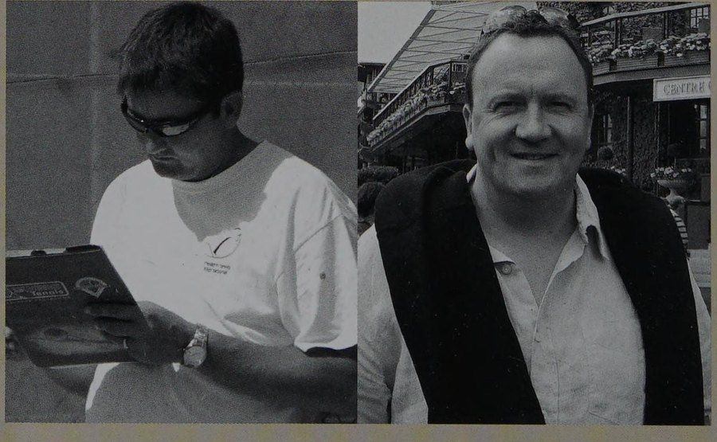
Giới thiệu
Quần vợt là một trò chơi tuyệt vời dường như mang lại những điều tốt nhất cho mọi người, bất kể nền tảng của họ hay họ đến từ đâu.
Lần đầu tiên, khi còn là những đứa trẻ mới biết đi, được cha mẹ ném cho chúng tôi một quả bóng tennis, niềm đam mê thể thao của chúng tôi đã hình thành và việc xem Wimbledon trên tivi từ khi còn nhỏ càng tiếp thêm nhiệt huyết cho chúng tôi. Chứng kiến những cuộc chạm trán hoành tráng của McEnroe với Bjorg, và sau đó là những trò hề thể thao của Boris Becker, đã khiến nhiều đứa trẻ chơi quần vợt lao qua sân để thực hiện cú vô lê mà không hề nghĩ đến việc bị thương, ngay cả những người chơi trên làn.
Nghề dạy học đã thấm vào máu của chúng tôi, vì cả hai chúng tôi đều có cha mẹ dạy và chúng tôi thấy mình rất may mắn khi có thể dạy người khác môn thể thao tuyệt vời mà cả hai chúng tôi đều yêu thích. Chúng tôi thực sự phấn khích khi nhìn thấy những khuôn mặt hài lòng của mọi người khi tận hưởng những kỹ năng mà chúng tôi đã truyền đạt. Đó là lý do tại sao bạn rất đam mê hệ thống đơn giản mà chúng tôi đã mô tả trong cuốn sách này. Nếu bạn làm theo nó một cách kỹ lưỡng, bạn sẽ chơi quần vợt theo đúng nghĩa đen trong vài phút và thế giới quần vợt sẽ là của bạn.
Giới thiệu về cuốn sách này
Các cú đánh Mỗi cú đánh được chia thành các giai đoạn. Những cú đánh từ trên không trung tâm thể hiện thế đứng và vị trí vợt của người chơi Bất kỳ chiều cao nào lên đến chiều cao đầu Vị trí của quả bóng được đánh dấu ở những nơi thích hợp để hiểu rõ hơn về cú đánh đang diễn ra Sự thay đổi tích hợp trong báng cầm được tăng cường _ để biết thêm chi tiết “hành động và
Chìa khóa để cú đánh hoặc bật
Hướng bóng
Bóng quay
Học cách chơi dây/Chiến thuật
Phần sau làm tròn các yếu tố quan trọng khác của trò chơi.
Ghi chú được thêm vào cung cấp các đoạn hữu ích của
Chuyển động hoặc tư thế của tay vợt nảy bóng Giao bóng và đánh vô-lê Ghi chú bổ sung giải thích chuyển động tự nhiên của người chơi Mũi tên chỉ hướng vung vợt. Chụp ảnh chính xác bao quát mọi góc độ
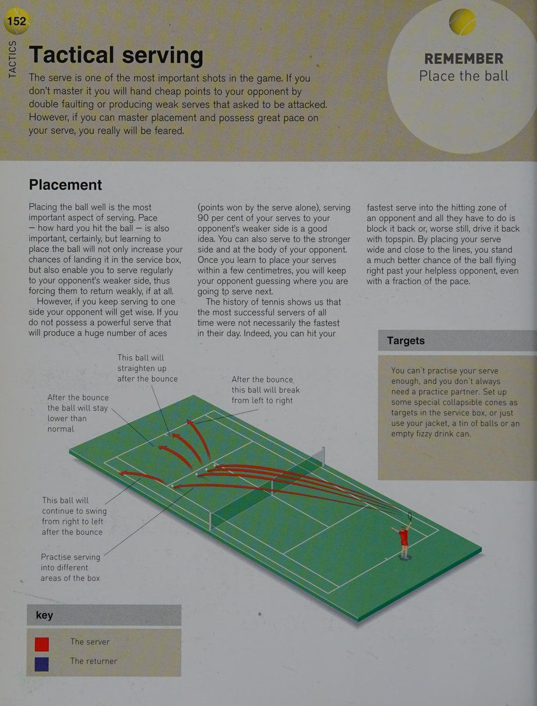
Hình 40: chéo sân · biên
Những “thần chú” thông thường khiến bạn nhớ đến câu thần chú. Các khái niệm chính khi dùng cùi chỏ vào mặt đối thủ
Di chuyển vợt Mục tiêu mông vợt Các yếu tố chính của trò chơi được kiểm tra chi tiết.
Sơ đồ đơn giản
Minh họa các điểm
Thảo luận
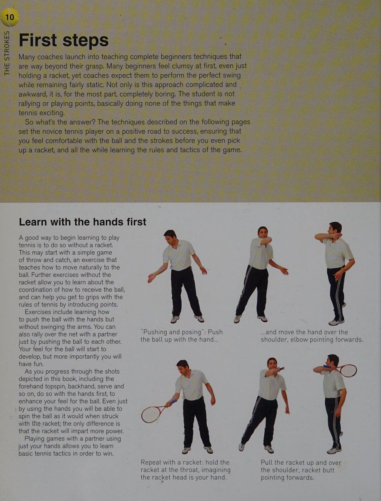
Hình 41: đầu tiên · bước
Phần I · Kỹ Thuật Cơ Bản
The Strokes
Chuyên đề 2
Những Bước Đầu Tiên
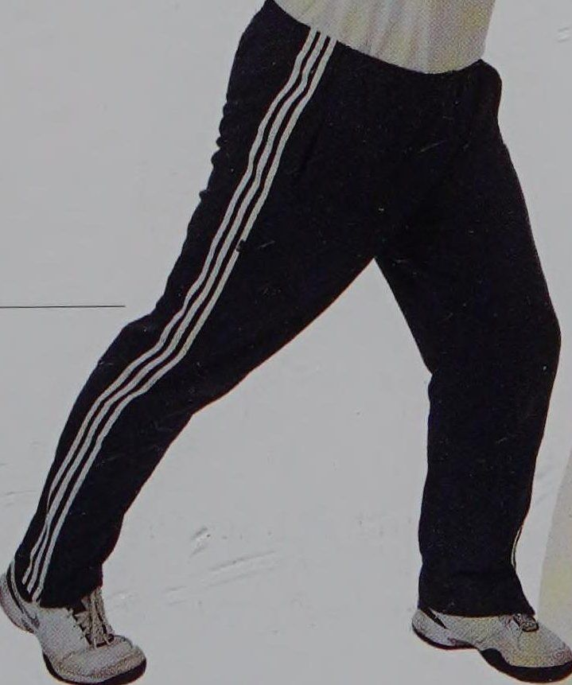
Những bước đầu tiên
Nhiều huấn luyện viên bắt đầu dạy những kỹ thuật hoàn chỉnh cho người mới bắt đầu mà họ không thể nắm bắt được. Nhiều người mới bắt đầu cảm thấy vụng về lúc đầu, thậm chí chỉ cầm vợt, tuy nhiên các huấn luyện viên mong đợi họ thực hiện cú vung hoàn hảo trong khi vẫn khá tĩnh. Cách tiếp cận này không chỉ phức tạp và tôilúng túng, phần lớn, nó hoàn toàn nhàm chán. Học sinh không tập hợp hoặc giành điểm, về cơ bản không làm những điều khiến quần vợt trở nên thú vị.
Vậy câu trả lời là gì? Các kỹ thuật được mô tả ở các trang tiếp theo sẽ giúp người chơi quần vợt mới tập đi vào con đường tích cực dẫn đến thành công, đảm bảo rằng bạn cảm thấy thoải mái với quả bóng và các cú đánh thậm chí trước khi bạn cầm vợt lên, đồng thời học các quy tắc và chiến thuật của trò chơi.
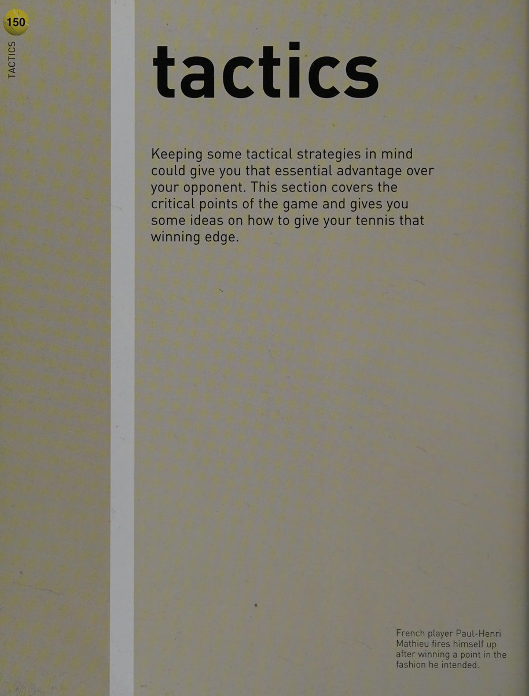
Hình 42: đầu tiên · cú đánh
Học bằng tay trước
Một cách tốt để bắt đầu học chơi quần vợt là chơi mà không cần vợt. Điều này có thể bắt đầu bằng một trò chơi ném và bắt đơn giản, một bài tập dạy cách di chuyển tự nhiên theo bóng. Các bài tập sâu hơn không dùng vợt cho phép bạn tìm hiểu về cách phối hợp trong cách nhận bóng và có thể giúp bạn nắm bắt các quy tắc của quần vợt bằng cách giới thiệu các điểm.
Các bài tập bao gồm học cách đẩy bóng bằng tay nhưng không vung tay. Bạn cũng có thể qua lưới với đồng đội chỉ bằng cách đẩy bóng vào nhau. Cảm giác của bạn với quả bóng sẽ bắt đầu phát triển, nhưng quan trọng hơn là bạn sẽ thấy vui.
Khi bạn thực hiện các cú đánh được mô tả trong cuốn sách này, bao gồm cú giật thuận tay, trái tay, giao bóng, v.v., hãy thực hiện bằng tay trước để nâng cao cảm giác của bạn với bóng. Thậm chí chỉ cần sử dụng tay, bạn cũng có thể xoay bóng giống như khi đánh bằng vợt;sự khác biệt duy nhất là vợt sẽ truyền thêm sức mạnh.
Chơi trò chơi với một đối tác chỉ bằng tay cho phép bạn học các chiến thuật quần vợt cơ bản để giành chiến thắng.
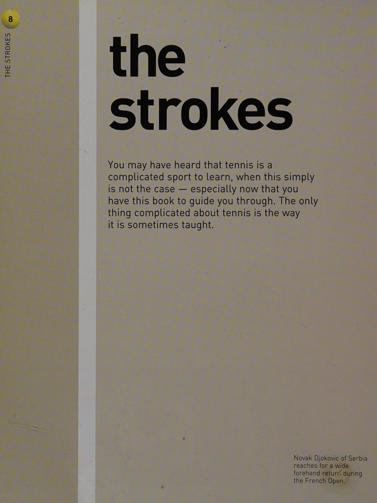
Hình 43: giới thiệu
Đẩy bóng và tạo dáng’: Dùng tay đẩy bóng lên… Lặp lại với vợt: giữ vợt ở cổ vợt, tưởng tượng đầu vợt là bàn tay của bạn.
..và đưa tay qua vai, khuỷu tay hướng về phía trước. Kéo vợt lên qua vai, mông vợt hướng về phía trước.
Theo dõi bóng
Bây giờ bạn cần học cách tập trung vào những gì đang xảy ra trước mặt bạn hơn là những gì đang diễn ra phía sau bạn. Bạn làm điều này bằng cách theo dõi quả bóng ở phía trước cơ thể bằng vợt.
Theo dõi quả bóng trước mặt bạn có nghĩa là bạn chỉ cần căn chỉnh nó với vợt. Sau đó, bạn thực hiện động tác vung vợt về phía sau khi bóng nảy lên, một kỹ thuật rất quan trọng để tính thời gian đánh bóng tốt.
Theo dõi bóng bằng vợt
Tạo tư thế
Bước tiếp theo liên quan đến việc phát triển cách dứt điểm trên mỗi cú đánh, nghĩa là biết vợt sẽ kết thúc ở đâu sau khi bóng được đánh. Điều này được gọi là “tư thế ấn tượng”.Ví dụ, với cú đánh thuận tay cơ bản, vợt sẽ kết thúc qua vai.
Khi đọc tiếp, bạn sẽ nhận thấy rằng mỗi cú đánh minh họa chính xác vị trí kết thúc cú đánh sau khi tiếp xúc với bóng. Một lần nữa, trước tiên bạn có thể tìm hiểu những cách hoàn thiện này chỉ bằng cách sử dụng tay của mình.
Chuyển trọng lượng cơ thể từ chân này sang chân kia khi bạn đánh bóng
Thân trên đã quay
Hai cách cầm vợt
Theo dõi bằng dây Theo dõi bằng mông vợt Thuận tay: Theo dõi bóng bằng vợt ở phía trước. Giữ bằng cả hai tay cho đến khi bóng nảy lên.
Trái tay: Theo dõi bằng mông vợt. Đừng buông tay không thuận cho đến khi bạn sẵn sàng vung vợt.
Tiếp tục theo dõi quả bóng, ngay cả sau khi bạn đã đánh nó. HÃY NHỚ
Luôn luôn
Hoàn thành
Chuyên đề 3
Cách Cầm Vợt
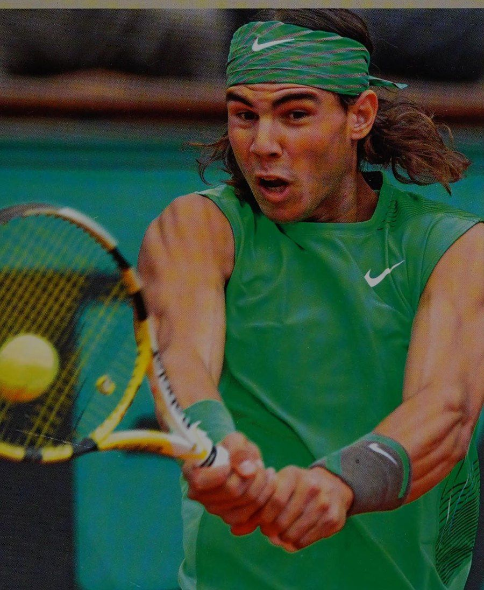
Khi bắt đầu học sử dụng vợt, bạn sẽ nhận thấy rằng những người chơi hàng đầu cầm vợt ngay ở phần cuối của cán vợt, giống như các mô hình trong cuốn sách này. Tuy nhiên, bạn không nên mong đợi bắt đầu sử dụng cách cầm này ngay sau khi chỉ sử dụng tay. Với sự luyện tập và kinh nghiệm, sự tiến bộ về cách cầm vợt cuối cùng sẽ đưa bạn đến điểm này. Ví dụ, khi học cú giật thuận tay, thay vì cầm vợt ở phần dưới cùng của cán vợt, hãy thử cầm vợt ở cổ họng và đánh một số cú đánh từ đây trước. Theo thời gian, bạn có thể trượt tay xuống khi bắt đầu cảm thấy thoải mái hơn. Bạn có thể làm điều này với mỗi cú đánh bạn chơi.
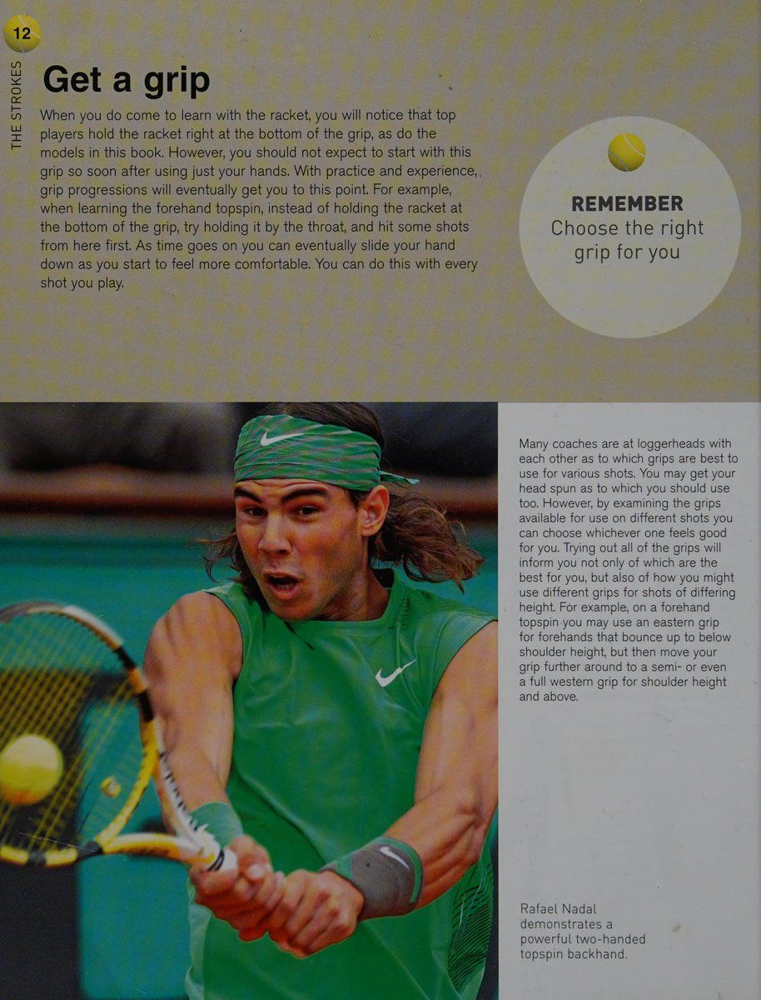
Hình 44: cầm vợt · hướng dẫn
Chọn điều đúng
tay cầm dành cho bạn Nhiều huấn luyện viên đang tranh cãi với nhau về việc sử dụng tay cầm nào là tốt nhất cho các cú đánh khác nhau. Bạn có thể băn khoăn không biết nên sử dụng cái nào. Tuy nhiên, bằng cách kiểm tra các loại báng cầm có sẵn để sử dụng cho các cú đánh khác nhau, bạn có thể chọn bất kỳ loại báng cầm nào phù hợp với mình. Việc thử tất cả các loại tay cầm sẽ cho bạn biết không chỉ loại tay cầm nào là tốt nhất cho bạn mà còn về cách bạn có thể sử dụng các tay cầm khác nhau để chụp những bức ảnh có độ cao khác nhau. Ví dụ, trong một cú đánh thuận tay xoáy lên - bạn có thể sử dụng kiểu cầm vợt phía Đông cho những cú thuận tay nảy lên dưới độ cao ngang vai, nhưng sau đó di chuyển cách cầm vợt của bạn xa hơn đến một kiểu cầm vợt bán hoặc thậm chí hoàn toàn kiểu Tây cho độ cao ngang vai trở lên, Rafael Nadal thể hiện một cú đánh trái tay xoáy lên bằng hai tay mạnh mẽ.
Tay cầm này được sử dụng cho nhiều kiểu chụp khác nhau. Chú ý ngón cái và ngón trỏ dang ngang tay cầm từ cả hai phía.
Khi giao bóng, cách cầm này mang lại sự linh hoạt và tư thế tự nhiên khi đánh, đồng thời sẽ cho phép bạn xoay bóng, trong khi bất kỳ cách cầm nào khác đều có thể cản trở bạn.
Cách cầm vợt này thường được sử dụng trong vô-lê vì bạn có thể thực hiện cú vô lê thuận tay hoặc trái tay mà không cần phải thay đổi cách cầm vợt, điều này rất hữu ích, đặc biệt khi bóng đến với bạn ở tốc độ 80 km (650 dặm) một giờ. Nó cũng cho phép bạn mở mặt vợt một cách tự nhiên khi thực hiện cú vô lê.
Bạn có thể đánh một cú thuận tay và trái tay bằng cách cầm vợt này, mặc dù lượng xoáy lên bạn sẽ tạo ra là rất ít và khả năng bóng bay ra ngoài sẽ tăng lên.
Cách cầm vợt này tương tự như cách cầm vợt bắt tay, và bạn thường sử dụng nó để đánh một cú xoáy lên thuận tay.
Góc của tay cầm cho phép mặt vợt khép lại nhiều hơn so với kiểu cầm kiểu lục địa, do đó sẽ ít có khả năng bóng bay ra ngoài hơn khi bạn vuốt lên mặt sau của vợt.
Những tay vợt hàng đầu cũng được biết đến là người sử dụng cách cầm vợt này cho những cú vô lê thuận tay.
Cổ tay buông ra: Điều này có nghĩa là _ cổ tay nghiêng về phía sau, hoặc “cong”.Laidi n cổ tay: 'Cổ tay thẳng hơn, thẳng hàng hơn với _ cánh tay hoặc hơi nghiêng về phía trước.
cú vô lê và cú thuận tay
Cổ tay hơi buông ra và ngón trỏ đóng vai trò là ngón cò súng”
Cổ tay được đặt Giữ cổ tay tắt cho tất cả đặt trong cho những cú đánh khác.giao bóng hoặc đập vỡ.
Giữ như thể bạn đang Bắt tay;bàn tay Hơi lệch tâm Những ngón tay xòe ra anh nắm lấy.
Cổ tay được thả ra.
Kiểu cầm nắm bán tây
Đây có lẽ là kiểu cầm vợt thuận tay được sử dụng phổ biến nhất, với tay đặt ngay sau cán vợt. Với cách cầm vợt này, bạn thường có thể đánh một cú giật thuận tay hiệu quả ở bất kỳ độ cao nào và trên bất kỳ bề mặt nào.
Tay cầm cũng làm tăng mức độ xoay của quả bóng, mang lại sự an toàn hơn khi bạn tăng tốc dây lên phía sau quả bóng. Nó cũng rất tốt cho những người chơi nhỏ tuổi mới bắt đầu, bởi vì họ có thể sử dụng nó với những quả bóng cao, điều này có thể rất phổ biến đối với trẻ nhỏ._ Tay cầm hoàn toàn kiểu Tây
Đây là một cách cầm vợt cực kỳ thuận tay với bàn tay gần như ở dưới cán vợt.
Nó thường được sử dụng bởi những người chơi trên sân đất nện và những người chơi nhỏ tuổi liên tục phải đánh những quả bóng cao ngang đầu. Cách cầm vợt này tạo ra một lượng lớn xoáy lên.
Cú đánh thuận tay
Quan tâm
Dùng cho
cú lốp bóng xoáy lên
Cổ tay được trợ giúp. Cổ tay được trợ giúp.
Bàn tay được đặt phía sau báng cầm Ngón tay cái ở phía trên tay cầm. Bàn tay ở vị trí cực đoan hơn, bên dưới báng cầm Bàn tay ở ngay bên dưới tay cầm.
Một tay
Trái tay xoáy lên e Một tay Trái tay xoáy lên _ cú vô lê e trái tay
Cú lốp bóng xoáy lên _ Được sử dụng cho
e Hai tay trái tay xoáy lên e Hai tay
Cú vô lê trái tay và trái tay Cú lốp bóng xoáy lên
Tay cầm được giữ như thể nó là một tay lái xe đạp, với cổ tay buông ra và các đốt ngón tay ở phía trên Tay trên (không thuận) ở kiểu cầm thuận tay;tay thuận ở vị trí thoải mái nhất Ở đây bạn có thể thấy bản chất của cách cầm bóng xoáy lên bằng một tay. Ngoài ra còn có kiểu cầm trái tay phía đông và kiểu cầm trái tay nửa tây.
Bàn tay ít nhiều nằm trên tay cầm theo kiểu tay cầm xe đạp. Giống như cách cầm vợt thuận tay, những cách cầm vợt này sẽ đóng mặt vợt khi bạn vuốt bóng lên và ngăn bóng bay ra ngoài.
Cổ tay có góc cạnh nên vợt vuông góc với bóng khi tiếp xúc.
Giống như các tay cầm khác, các ngón tay dang rộng. Bàn tay ở phía trên tay cầm.
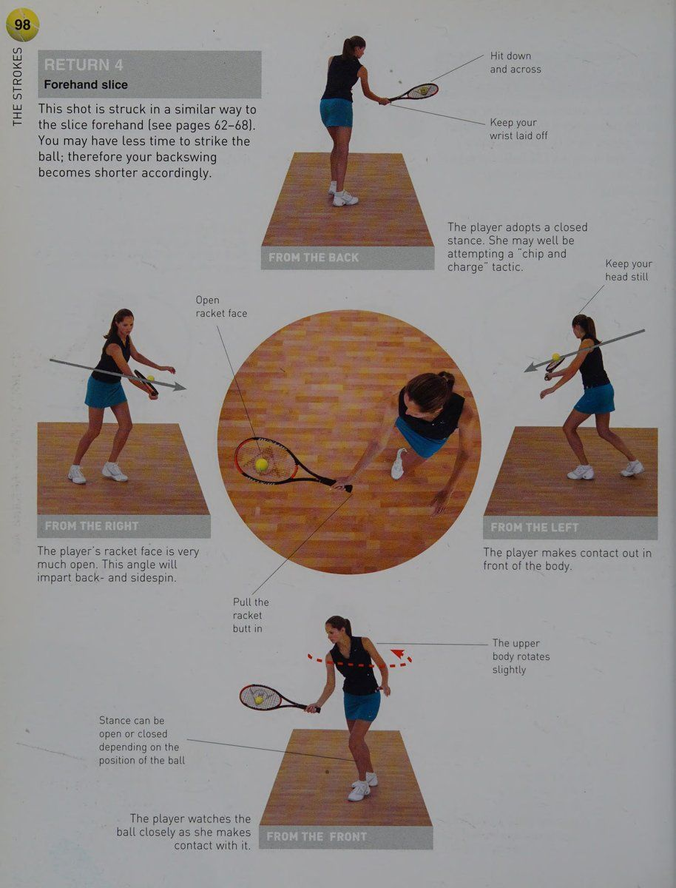
Hình 45: xoáy lên · lốp bóng
Cách cầm vợt này được sử dụng để mang lại sự thoải mái và sức mạnh hơn cho phía trái tay của bạn.
Tay không thuận sẽ ở gần cổ vợt hơn trong cách cầm thuận tay mà bạn chọn. Bàn tay này thực ra là động lực của cú đánh này, không phải bàn tay thuận của bạn. Tay thuận của bạn chỉ nằm ở cuối báng cầm ở bất kỳ tư thế nào mà bạn cảm thấy thoải mái. Hãy chắc chắn rằng bàn tay của bạn chạm vào nhau nhưng không chồng lên nhau.
Cổ tay của bàn tay không thuận được buông ra. Giống như tất cả các cách cầm vợt tạo xoáy, đầu vợt nằm ở dưới bàn tay.
Tay không thuận có cách cầm tự nhiên, trong trường hợp này là kiểu cầm bán tây.
Chuyên đề 4
Cú Thuận Tay Topspin
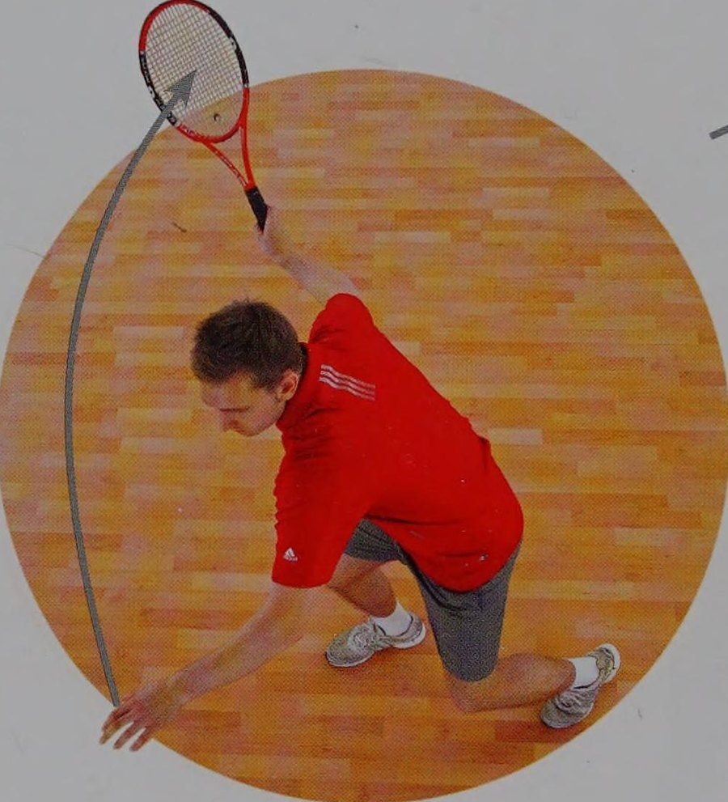
Xoáy lên thuận tay
Cú đánh thuận tay là cú đánh được sử dụng phổ biến nhất trong quần vợt. Nó liên quan đến việc người chơi đánh bóng ở phía thuận lợi của họ sau khi bật lên và có xu hướng là cú đánh được ưa thích nhất và mạnh nhất trong kho vũ khí của người chơi.
Tính thời gian Tất cả các cú đánh thành công trong quần vợt đều dựa vào thời gian hiệu quả, bao gồm việc đếm từ một đến năm khá nhanh khi “chờ” bóng. Đếm “một” khi bóng chạm sàn và “năm” khi bạn đánh vào nó, Xoáy trên Xoáy trên về cơ bản là khi quả bóng được đánh với hiệu ứng quét khiến nó quay mạnh theo quỹ đạo về phía trước. Điều này khiến bóng lao xuống và hạ cánh an toàn xuống sân.
Hãy sẵn sàng
Bạn sẽ phát triển một loại vũ khí tấn công mặt đất mạnh mẽ, được tấn công bằng một lượng lớn xoáy lên. Cố gắng đánh bóng cách lưới khoảng 1 mét (4 feet).
Bóng tập trung
Chuẩn bị cho xoáy lên
Thư giãn của bạn
Đứng ở tư thế sẵn sàng với vợt được giữ ở phía trước bằng tay cầm thuận tay. Giữ đầu gối hơi cong, sẵn sàng di chuyển nhanh.
Chân blsver tlre trong tư thế mở Tay cầm Chọn từ tay cầm bán tây {ở trên}, tay cầm hoàn toàn phía tây hoặc tay cầm phía đông {xem trang 13-14).
Tức là
Luôn đẩy Lên từ Đầu gối
Theo dõi bóng Khi bạn chờ bóng, bạn cũng nên theo dõi nó, với cây vợt được giữ trước mặt bạn.
Giữ cả hai Pere đặt tay lên Vợ nghiêng về phía trước khi bóng di chuyển trong khi được hỗ trợ bởi tay không thuận.
Xoay vợt hơi hướng về phía trước
Khi người chơi theo dõi và di chuyển về phía quả bóng, hãy chú ý rằng cánh tay không thuận đã được đặt ở vị trí
Khắp cơ thể.
Đặt vợt thẳng hàng với bóng Anh ta đỡ vợt bằng cả hai tay đồng thời hướng nhẹ về phía quả bóng. Cơ thể nghiêng về phía thuận tay khi người chơi di chuyển tự nhiên về phía bóng.
Chuyển trọng lượng cơ thể sang chân bên ngoài
Theo dõi bóng
Khi bóng đã nảy lên, hãy thực hiện động tác vung vợt ra sau, giữ cho cánh tay và cách cầm vợt của bạn được thư giãn khi thực hiện động tác này.
Xoay vai Mặt vợt nghiêng ra khỏi người chơi do cổ tay bị buông ra.
Thực hiện cú backswing sau khi bóng đã nảy lên Khi thực hiện động tác backswing, tay không thuận sẽ giữ ngang cơ thể. Bàn tay này tiếp tục Theo dõi bóng.
Cởi cổ tay ra Chú ý cây vợt được đỡ phía trên bàn tay với cổ tay buông ra. Cũng chú ý đến cánh tay thuận, uốn cong và thư giãn.
Thư giãn Sự nắm bắt của bạn Bạn có thể thấy trọng lượng cơ thể Đẩy xuống bên ngoài Chân ở tư thế mở.
Kéo phần thân trên xung quanh
Khi bạn bắt đầu vung vợt về phía trước, hãy thả đầu vợt xuống và đóng mặt vợt lại. Cổ tay vẫn buông ra.
Có tư thế cởi mở
Đầu vợt sẵn sàng kéo lên theo bóng. Cổ tay buông ra sao cho mông vợt hướng về phía bóng. Đầu vợt ở dưới bàn tay.
Bắt đầu mở phần thân trên Mặt vợt được đóng lại Chú ý đầu vợt bây giờ được thả xuống dưới bàn tay với cổ tay được thả ra. Mặt vợt được đóng lại.
Nâng cơ thể lên trên Trọng lượng cơ thể vẫn dồn vào chân ngoài nhưng lúc này cơ thể đang nâng lên.
Đẩy chân xuống sàn Mặt vợt vuông vức, đầu vợt hơi cụp xuống phía dưới tay. Cơ thể đang nâng lên thẳng đứng.
Sự tiếp xúc được thực hiện với bóng thông qua hiệu ứng vuốt từ thấp đến cao để tạo ra xoáy lên. Bạn có thể liên lạc ở bất kỳ độ cao nào cho đến độ cao đầu.
Giữ yên đầu
Khung vợt vuông góc với sàn Bạn có thể thấy điểm tiếp xúc thoải mái ở phía trước khi khuỷu tay gập lại. Đầu vợt lúc này sẽ tăng tốc hướng lên trên.
Dẫn đầu bằng mép trên, kéo đầu vợt lên trên Tiếp xúc với mặt vợt vuông
Chú ý đầu vợt vuông góc với quả bóng nhưng đầu vợt vẫn hơi hạ xuống phía dưới tay.
Vợt sẽ di chuyển lên qua vai đối diện. Cơ thể được đẩy thẳng lên trên kiễng chân, trọng lượng cơ thể phân bổ đều ở cả hai chân.
Mở phần thân trên
Mặt vợt vuông vức, đầu vợt hơi cụp xuống phía dưới tay. Cơ thể đang nâng lên thẳng đứng. Cổ tay sau đó quay để đạt được độ xoáy.
Kết thúc cú xoáy trên cơ bản với vợt qua vai.
Nâng của bạn Khuỷu tay lên Ra khỏi ngực Từ đây bạn có thể thấy khuỷu tay của cánh tay thuận hướng thẳng về phía trước.
Thân trên đã xoay hoàn toàn
Mông vợt và khuỷu tay hướng về phía trước. Tay vợt vẫn theo dõi bóng, dự đoán
Cú đánh tiếp theo.
Kết thúc bằng một
Kết thúc vai Chú ý đầu vợt qua vai. Trọng lượng cơ thể được chuyển sang chân đối diện để hỗ trợ phục hồi.
Đầy đủ Mở rộng Cơ thể Chú ý đầu vợt qua vai đối diện và tay không thuận phù hợp với
Má.
Chuyển trọng lượng cơ thể sang chân đối diện
MANTRA Vợt vào mông và khuỷu tay đối thủ
Chuyên đề 5
Cú Trái Tay Topspin Hai Tay
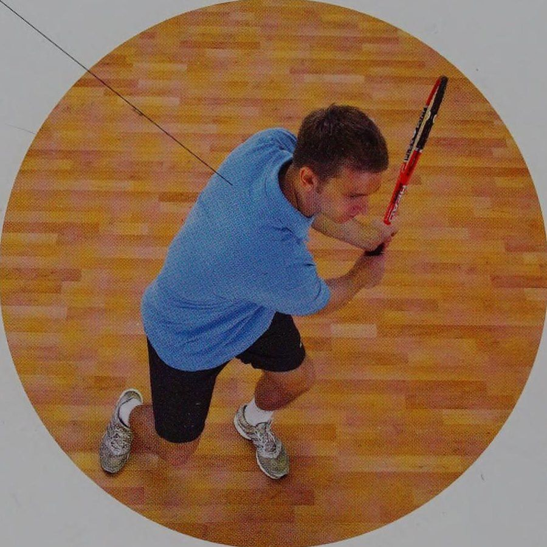
Trái tay Topspin hai tay
Đây là cú đánh hai tay khi thực hiện động tác đánh nền ở phía không thuận của bạn. Nhiều tay vợt trẻ sử dụng cú đánh này, nhưng nhiều chuyên gia hàng đầu cũng sử dụng nó. Bằng cách sử dụng hai tay, bạn sẽ phát triển được khả năng kiểm soát và sức mạnh rất lớn.
Tính thời gian Tất cả các cú đánh thành công trong quần vợt đều dựa vào thời gian hiệu quả, bao gồm việc đếm từ một đến năm khá nhanh khi “chờ” bóng. Đếm “một” khi bóng chạm sàn và “năm” khi bạn đánh vào nó.
Xoáy trên Xoáy trên về cơ bản là khi quả bóng được đánh với hiệu ứng quét lên khiến nó quay mạnh theo quỹ đạo về phía trước. Điều này khiến bóng lao xuống và hạ cánh an toàn xuống sân.
Cách cầm vợt Cách cầm bằng hai tay với hai tay chạm nhau và tay không thuận của bạn theo kiểu cầm thuận tay.
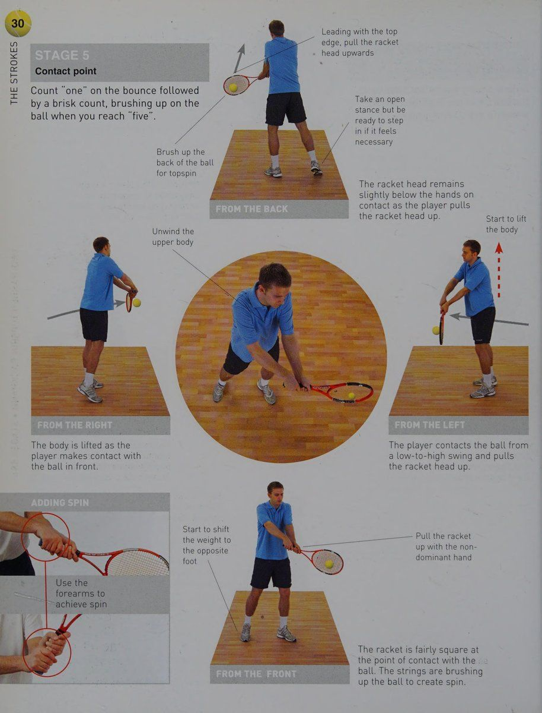
Hình 46: tay · cú trái tay · chuẩn bị
Hãy sẵn sàng Tay không thuận của bạn phải là động lực:
Giữ phía sau cú đánh này, không phải tay thuận của bạn. Cố gắng đánh vào đầu Và tập trung bóng khoảng 1 mét Mắt của bạn (4 feet] phía trên lưới.
Trên quả bóng Xoay cốp xe
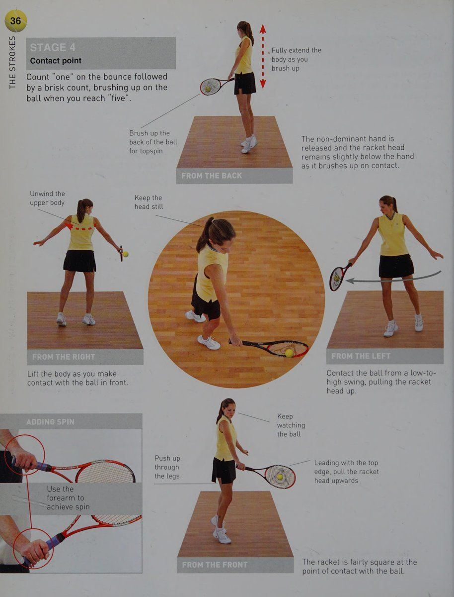
Hình 47: cắt xoáy · cú trái tay
Đứng ở tư thế sẵn sàng với cả hai tay cầm vợt thuận tay và vợt ở phía trước. Giữ đầu gối hơi cong, sẵn sàng di chuyển.
Đặt bàn chân của bạn ở tư thế đóng hoặc mở Chuẩn bị cho xoáy lên Theo dõi quả bóng khi nó bay về phía bạn bằng cách đặt nó thẳng hàng với vợt cầm trước mặt bạn.
Theo dõi bóng bằng cách xếp nó thẳng hàng với vợt Bắt đầu rẽ Vai Từ đây bạn có thể thấy trọng lượng cơ thể bắt đầu chuyển sang phía trái tay.
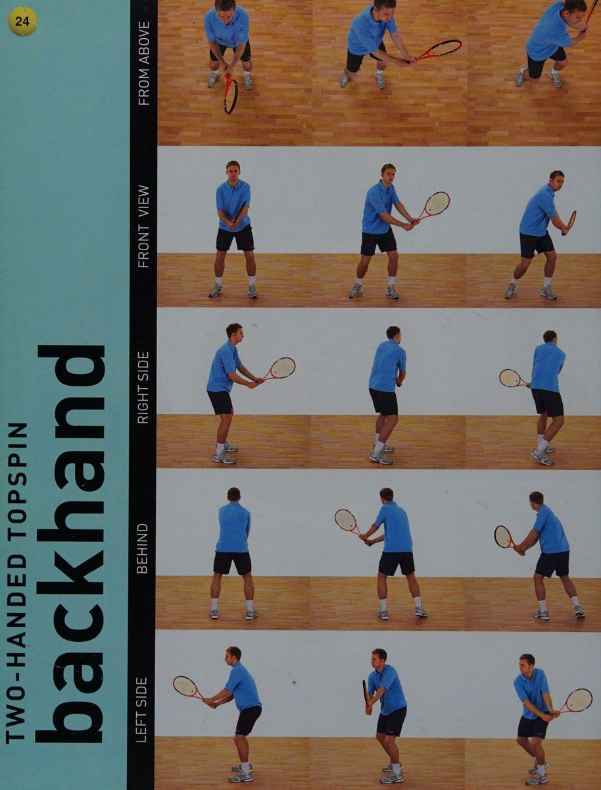
Hình 48: hai · tay · cú trái tay · điểm tiếp xúc
Bắt đầu xoay phần thân trên Trọng lượng cơ thể chuyển sang phía trái tay khi người chơi theo dõi bóng ở phía trước.
Chú ý cách vợt di chuyển theo bóng phía trước người chơi ở phía trái tay.
Chú ý cách vợt đang theo dõi Hơi ở phía trước người chơi với Cả hai tay cầm nắm. Theo bóng bằng vợt
Thần chú
Theo dõi bóng
Như quả bóng pouneee.ale một cú backswing với thời gian bạn có sẵn. Hãy chắc chắn rằng tay hỗ trợ của bạn điều khiển vợt.
Thực hiện cú đánh ngược Xoay Phần thân trên Bạn có thể ở tư thế mở hoặc đóng tùy thuộc vào vị trí của quả bóng. Hãy để điều này xảy ra một cách tự nhiên.
Đẩy cơ thể của bạn Giảm cân vào Sàn nhà Mắt của người chơi nhìn vào quả bóng, Tập trung hoàn toàn vào thời gian Và độ xoáy của cú đánh.
Phần thân trên đã xoay một cách tự nhiên trong quá trình vung vợt ra sau và người chơi đẩy người xuống sàn.
Khung là Vuông góc xuống đất Từ đây bạn có thể thấy phần thân trên đã xoay một cách tự nhiên như thế nào trong quá trình vung vợt ra sau. Hai bàn tay sát nhau trên tay cầm.
Thư giãn cổ tay không thuận
Trước khi đưa đầu vợt hướng lên trên quả bóng, hãy thả đầu vợt xuống dưới cổ tay để có được lực nâng và xoáy lên.
Thả đầu vợt xuống trước khi quét lên mặt sau của quả bóng Giữ cổ tay thoải mái Baye
Bạn có thể thấy rõ đầu vợt hạ xuống dưới cổ tay và mặt vợt hơi nghiêng về phía trước (đóng lại).
Chuẩn bị thư giãn mạnh mẽ phần thân trên Trọng lượng cơ thể dồn vào chân bên ngoài
Vợt được thả xuống trước khi tăng tốc về phía sau quả bóng, để đạt được lực nâng và độ xoáy. Chú ý phần thân trên vẫn quay như thế nào. Đầu vợt hơi ở dưới tay, mặt vợt khép lại.
Hướng vai trước về phía quả bóng Tiếp cận bóng bằng vợt từ thấp đến cao
Điểm tiếp xúc Đếm “một” khi nảy, sau đó là đếm nhanh, chạm bóng khi bạn đạt đến “năm”.
Quét lên mặt sau của quả bóng để tạo xoáy lên Cơ thể được nâng lên khi người chơi tiếp xúc với quả bóng ở phía trước.
Thư giãn phần thân trên Bắt đầu chuyển trọng lượng sang chân đối diện cẳng tay để tôiđạt được độ xoáy
Dẫn đầu bằng cạnh trên, kéo vợt.hướng lên trên Có tư thế cởi mở nhưng sẵn sàng can thiệp nếu cảm thấy cần thiết
Đầu vợt hơi ở dưới tay khi tiếp xúc khi người chơi kéo đầu vợt lên.
Bắt đầu nâng
Cơ thể Tay vợt tiếp xúc bóng từ Một cú vung vợt từ thấp đến cao và kéo Vợt hướng lên trên.
Kéo vợt lên bằng tay không thuận
Vợt khá vuông ở điểm tiếp xúc với.;quả bóng. Các sợi dây cọ vào quả bóng để tạo độ xoáy.
Sau khi quét bóng lên, đầu vợt được kéo lên qua vai đối diện bằng tay không thuận.
Khung vợt vuông góc với sàn - Khi vợt đã qua vai, hãy chú ý cách khuỷu tay rời khỏi ngực và hướng về phía trước.
Phần thân trên đã được cởi trói hoàn toàn
Tay vợt đã thực hiện xong cú đánh qua vai nhưng vẫn {quan sát bóng, dự đoán cú đánh tiếp theo. Sami
Kết thúc cú đánh với
kết thúc bằng vai Hãy chú ý trọng lượng cơ thể của người chơi hiện đã chuyển trở lại chân đối diện trong khi kết thúc. Bạn có thể thấy rõ trọng lượng cơ thể bây giờ được chuyển sang chân đối diện khi người chơi kết thúc cú đánh.
Trọng lượng cơ thể lúc này dồn lên chân đối diện
Kết thúc bằng tư thế mông vợt và cùi chỏ hướng về phía đối thủ
Chuyên đề 6
Cú Trái Tay Topspin Một Tay
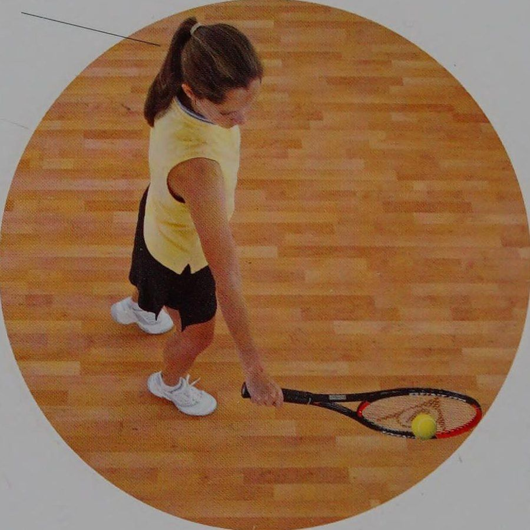
Trái tay xoáy trên một tay
Đây là cú đánh bằng một tay khi thực hiện động tác đánh nền ở phía không thuận của bạn. Sử dụng một tay trên trái tay làm tăng đáng kể khả năng tiếp cận của bạn.
Tính thời gian Tất cả các cú đánh thành công trong quần vợt đều dựa vào thời gian hiệu quả, bao gồm việc đếm từ một đến năm khá nhanh khi “chờ” bóng. Đếm “một_” khi bóng chạm sàn và “năm” khi bạn.tấn công nó.
Xoáy trên Xoáy trên về cơ bản là khi quả bóng được đánh với hiệu ứng quét lên khiến nó quay mạnh theo quỹ đạo về phía trước. Điều này khiến bóng lao xuống và hạ cánh an toàn xuống sân.
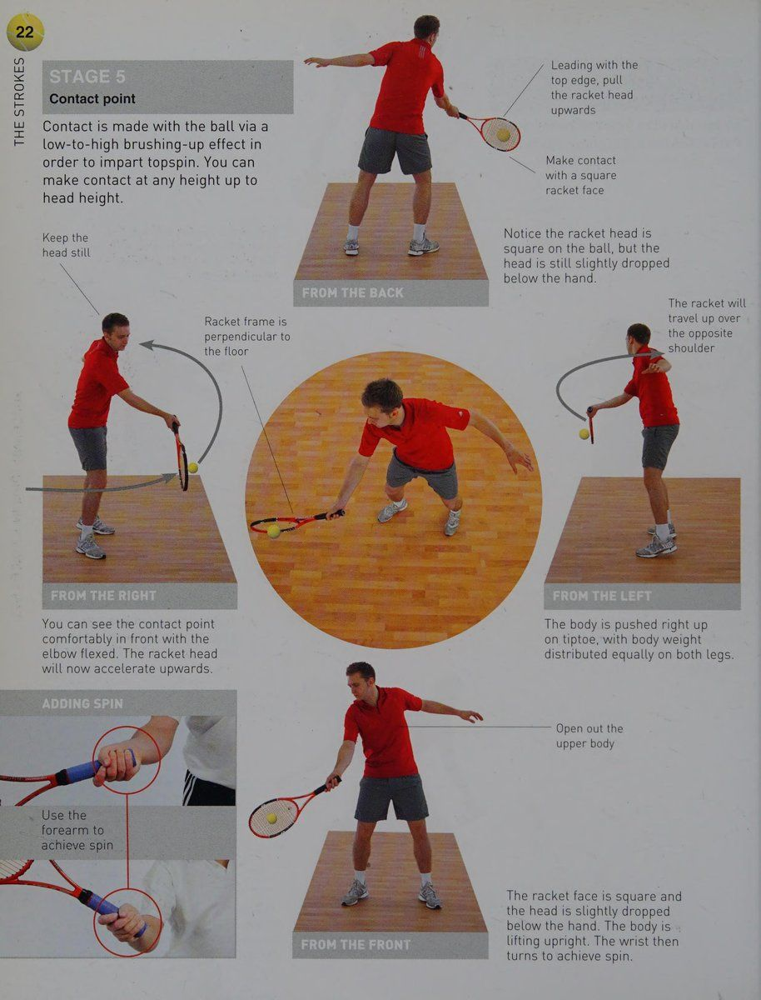
Hình 49: hai · tay · cú trái tay · chuẩn bị
Tay nắm Chọn từ tay nắm phía đông, tay vợt bán tây và tay nắm lục địa [xem trang 13 và 14}.Hãy tưởng tượng bạn đang cầm một chiếc tay cầm xe đạp với các đốt ngón tay ở phía trên.
Hãy sẵn sàng
Cũng giống như các cú đánh xoáy lên khác, đánh bóng về phía sau
Của quả bóng và nhấc nó lên cao 1 mét (4 feet) Lưới lưới.
Chuẩn bị cho xoáy lên Đạt được sức mạnh bằng cách siết chặt bả vai
Đứng ở tư thế sẵn sàng với vợt ở phía trước và tay không thuận đỡ cổ vợt. Giữ đầu gối hơi cong, sẵn sàng di chuyển.
Theo dõi bóng Tìm cách cầm vợt của bạn và đánh bóng tức là hướng mông vợt về phía nó.
Theo dõi bóng với một ket dae mông Đặt đầu vợt phía trên cổ tay Bắt đầu xoay phần thân trên Từ đây bạn có thể thấy trọng lượng cơ thể bắt đầu chuyển sang phía trái tay.
Đẩy xuống qua bàn chân
Chĩa vào mông vợt
Để ý.mông vợt hướng về phía bóng phía trước người chơi ở phía trái tay như thế nào.
Chú ý cách không chiếm ưu thế Tay đỡ họng vợt, Và cổ tay được uốn cong như thế nào.
Xem bóng Hướng mông vợt vào quả bóng Trọng lượng cơ thể chuyển sang phía trái tay khi người chơi theo dõi bóng ở phía trước.
Khi bóng nảy lên, hãy thực hiện động tác vung vợt ngược với thời gian mà bạn có. Như với tất cả các cú đánh, ấn xuống sàn.
Mặt sau là Có thể nhìn thấy đầy đủ từ bên cạnh. Bạn có thể ở tư thế mở hoặc đóng, tùy thuộc vào vị trí của quả bóng. Hãy để điều này xảy ra một cách tự nhiên.
Dồn trọng lượng cơ thể lên chân ngoài Hướng phía trước = vai ag về phía quả bóng
Mắt của người chơi nhìn vào quả bóng,
Và độ xoáy của cú đánh.
Phần thân trên Đẩy xuống sàn trong khi theo dõi quả bóng. Chú ý trọng lượng của người chơi dồn về phía trái tay.
Chú ý phần thân trên có Quay một cách tự nhiên trong quá trình Vung sau, và cổ tay như thế nào Đang nghiêng.
Eee Tay không thuận vẫn đỡ cổ vợt
Điểm tiếp xúc Đếm “một” khi nảy, sau đó là đếm nhanh, chạm bóng khi bạn đạt đến “năm”.
Quét lên mặt sau của quả bóng để tạo ra xoáy lên Thư giãn Nâng cơ thể lên khi bạn tiếp xúc với quả bóng ở phía trước.
Giữ yên đầu
Đôi chân
Sử dụng cẳng tay để “đạt được độ xoáy _
:.Mở rộng hoàn toàn cơ thể khi bạn
Tay không thuận được thả ra và đầu vợt hơi ở dưới tay khi nó chạm vào khi tiếp xúc.
Tiếp xúc bóng từ thấp đến- Vung cao, kéo vợt Ngẩng đầu lên.
Xem bóng
_— Dẫn đầu bằng mép trên, kéo đầu vợt lên trên
Mặt vợt khá vuông ở điểm tiếp xúc với bóng.
Sau khi quét bóng, đầu vợt dứt điểm cao. Xương bả vai được ép chặt vào nhau để tạo ra năng lượng.
Kéo tay không thuận về phía sau cơ thể Bước vào quả bóng và kết thúc ở tư thế cao “Tượng Nữ thần Tự do”.
Siết chặt hai bả vai vào nhau Người chơi đã thực hiện xong cú đánh nhưng vẫn quan sát bóng, dự đoán cú đánh tiếp theo.
Ee lize việc hoàn thiện “Tượng Nữ thần Tự do”
Chú ý cách hai bả vai của người chơi ép vào nhau để tạo ra năng lượng.
Chuyển phần lớn trọng lượng cơ thể sang chân trước Thư giãn phần thân trên
Bạn có thể thấy rõ trọng lượng cơ thể bây giờ được chuyển sang chân trước khi người chơi kết thúc cú đánh.
Thần chú
Hoàn thành tư thế cao trong tư thế “Tượng Nữ thần Tự do”
Chuyên đề 7
Cú Trái Tay Cắt Một Tay
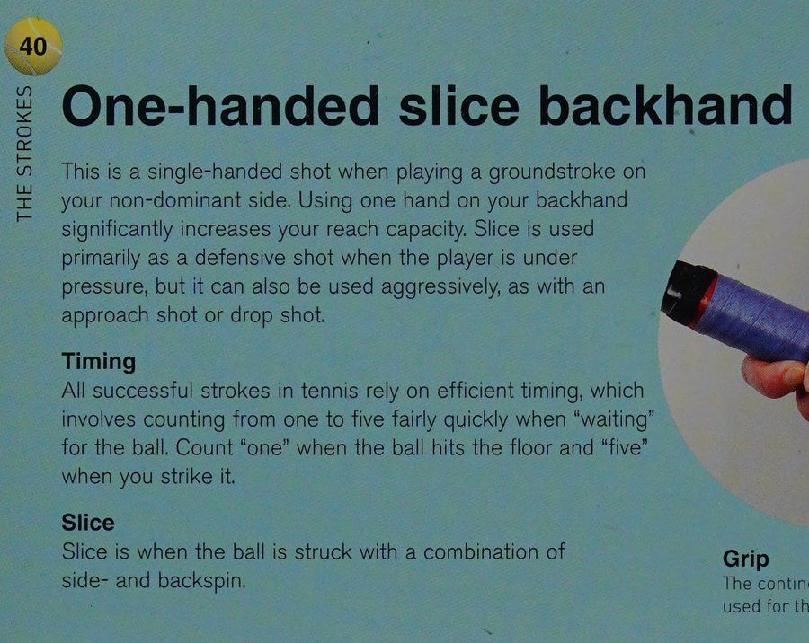
Cú đánh trái tay tay bằng một tay
Đây là cú đánh bằng một tay khi thực hiện động tác đánh nền ở phía không thuận của bạn. Sử dụng một tay trên trái tay làm tăng đáng kể khả năng tiếp cận của bạn. Cắt được sử dụng chủ yếu như một cú đánh phòng thủ khi người chơi bị áp lực, nhưng nó cũng có thể được sử dụng một cách tích cực, như với một cú đánh tiếp cận hoặc một cú đánh thả.
Tính thời gian Tất cả các cú đánh thành công trong quần vợt đều dựa vào thời gian hiệu quả, bao gồm việc đếm từ một đến năm khá nhanh khi “chờ” bóng. Đếm “một” khi bóng chạm sàn và “năm” khi bạn đánh vào nó.
Cắt lát là khi bóng được đánh với sự kết hợp của xoáy ngang và xoáy xuống.
Cách cầm Tay cầm kiểu lục địa thường được sử dụng cho cú đánh này (xem trang 13).
Chuẩn bị đi
Bản chất của cú đánh này là giữ bóng thấp qua lưới và độ nảy thấp.
Giữ đầu cố định và tập trung vào quả bóng Cắt lát, sự kết hợp giữa xoáy ngang và xoáy xuống Mở rộng hoàn toàn cánh tay dẫn đầu
Đứng ở tư thế sẵn sàng, vợt ở phía trước, tay không thuận đỡ cổ vợt. Giữ đầu gối hơi cong, sẵn sàng di chuyển.
Bước về phía quả bóng nếu cảm thấy thoải mái hơn G bóng Tracthke bóng bằng cách xếp nó sao cho mông vợt hướng về phía nó.
Theo dõi bóng bằng mông vợt Từ đây bạn có thể thấy trọng lượng cơ thể bắt đầu chuyển sang phía trái tay.
Bắt đầu xoay phần thân trên khi bạn theo dõi quả bóng Trọng lượng cơ thể của tay vợt thay đổi Về phía trái tay trong khi Theo dõi bóng ở phía trước.
Dựa vào bàn chân bên ngoài khi bạn chơi bóng Chú ý cách mông vợt hướng về phía quả bóng phía trước người chơi ở phía trái tay.
Chú ý cách không chiếm ưu thế tay đỡ họng vợt và cổ tay bị cong. Mặt vợt mở
Thần chú
Trỏ vào
Mông vợt
Khi bóng nảy lên, hãy thực hiện động tác vung vợt ngược với thời gian mà bạn có. Như với tất cả các cú đánh, ấn xuống sàn.
Mặt vợt bị kéo về phía sau Bạn có thể ở tư thế mở hoặc đóng, tùy thuộc vào vị trí của quả bóng. Hãy để điều này xảy ra một cách tự nhiên.
Vai được căn chỉnh Chuyển trọng lượng Người chơi đang đẩy xuống sàn trong khi theo dõi quả bóng. Trọng lượng dồn về phía trái tay.
Chú ý đầu vợt như thế nào Nằm ngửa, được hỗ trợ bởi Tay không thuận, và làm thế nào Mặt vợt đang mở.
Điểm tiếp xúc Count Cones trên cú đánh chạm vào mặt dưới của quả bóng khi bạn đạt đến 'năm'.
Đánh xuống và Ngang qua quả bóng Giữ không Cho tay sau và tay thuận Xoáy ngang phía sau bạn Bước vào bóng khi bạn tiếp xúc ở phía trước.
Bắt đầu bóp
vai của bạn
Cùng nhau
Kéo mông vợt vào
Phần thân trên bắt đầu thả lỏng. Người chơi hiện đã thả tay không thuận. Mặt vợt hơi mở khi tiếp xúc.
Mặt vợt mở Bạn có thể thấy góc mà người chơi đã đánh bóng. Người chơi đã “dẫn đầu bằng lợi thế”.
Mặt vợt hơi mở khi tiếp xúc khi người chơi cắt dây bên dưới quả bóng.
MANTRA Đánh xuống và xuyên qua
Khi bạn hoàn thành cú đánh, hai bả vai của bạn phải hoàn toàn ép chặt vào nhau.
Trọng lượng cơ thể dồn lên bàn chân trước. Người chơi đứng dậy từ chân đỡ sau cú đánh.
Thu tay lại
Hai bả vai với nhau khi kết thúc Các bả vai ép chặt vào nhau khi kết thúc.
Vai được căn chỉnh Bạn có thể thấy rõ người chơi Vai cuộn lại.
Tiếp tục quan sát quả bóng sau khi nó được đánh
MANTRA Bóp chặt bả vai đó
Chuyên đề 8
Cú Bỏ Nhỏ Trái Tay Một Tay
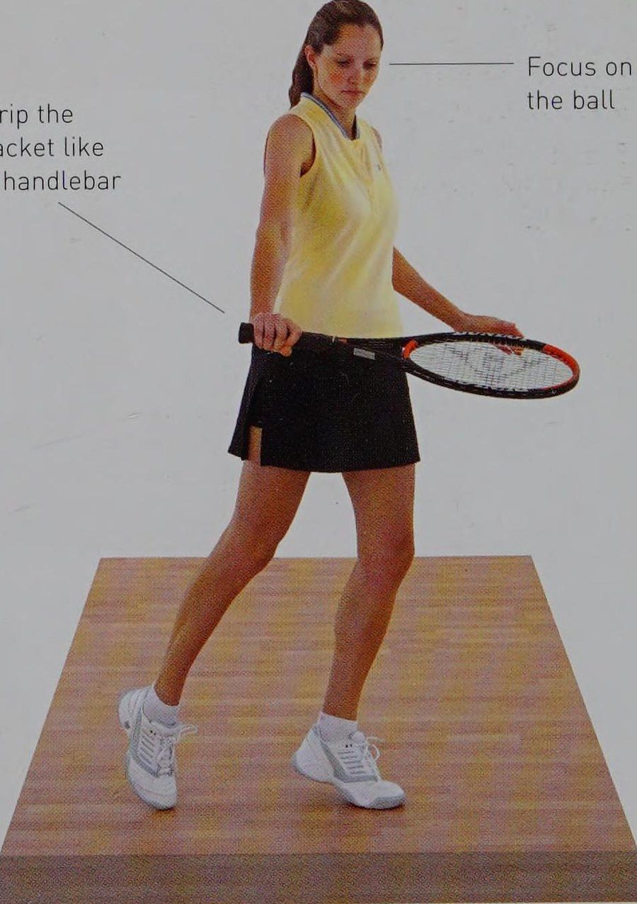
Cú đánh trái tay tay bằng một tay
Để loại bỏ những tay vợt thường chơi từ cuối sân, bạn có thể thực hiện cú thả bóng, về cơ bản là một cú đánh trái tay với mặt vợt mở khiến bóng rơi ngay phía đối diện của lưới. Điểm tiếp xúc Chú ý độ mở của mặt vợt. Bạn phải ở ngay dưới quả bóng và tăng tốc trong cú đánh này, không được giảm tốc độ.
Vợt crp như tay cầm —— pe OCUSLOM Quả bóng
Chuyên đề 9
Giao Bóng Cắt Xoáy Ngang
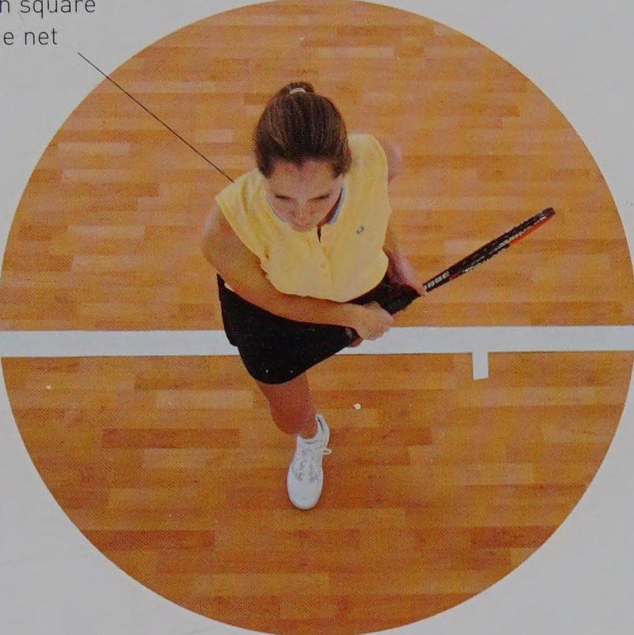
Giao bóng lát xoáy ngang
Kiểu giao bóng này tạo ra độ xoáy ngang ở mặt bên của quả bóng, do đó làm cho quả bóng bị lệch khi bay. Nó là một công cụ hữu ích cho lần giao bóng đầu tiên hoặc lần thứ hai. Bạn cũng có thể đánh ngang qua mặt sau của quả bóng và đánh cái mà chúng tôi gọi là cú giao bóng “nặng”, được nhiều người cho là cú giao bóng phẳng.
Tính thời gian Tất cả các cú đánh thành công trong quần vợt đều dựa vào thời gian hiệu quả, khi bạn “chờ” bóng và đếm từ một đến năm khá nhanh. Đếm “một” khi bóng rời khỏi tay bạn, sau đó đánh bóng vào số “năm”, Cắt lát là khi bóng được đánh bằng xoáy ngang.
Địa chỉ giao bóng
Để đánh quả giao bóng lên và qua lưới, vào ô giao bóng, với xoáy ngang.
Hướng khuỷu tay về phía sau
Đứng ở góc khoảng 45 độ so với đường cuối sân với bóng và vợt trước mặt. Tại thời điểm này, bạn nên nhắm cẩn thận vào nơi bạn muốn cú giao bóng của mình tiếp đất. Cổ tay được đặt vào.
Thả đầu vợt
Đẩy trọng lượng cơ thể xuống sàn để tạo ra động tác gập đầu gối ' Cách cầm Cách cầm kiểu lục địa thường được sử dụng cho cú đánh này (xem trang 13).
Mở rộng hoàn toàn Cánh tay nâng bóng Đẩy hông trước về phía trước Trọng lượng cơ thể dồn chủ yếu vào chân trước cùng đứng lên oS Để bắt đầu giao bóng, đưa cả hai tay lên cùng nhau, khuỷu tay cầm vợt uốn cong và cánh tay bóng mở rộng.
Giữ bóng trong các đầu ngón tay Chú ý đầu gối bắt đầu cong khi bàn chân trước đẩy xuống.
Điểm xuất phát Của cánh tay bóng
Lưu ý cánh tay bóng đã được nâng lên ngang cơ thể chứ không đưa thẳng ra phía trước người chơi.
Đưa cả hai tay Cùng nhau lên Mở rộng cánh tay bóng và uốn cong Cánh tay vợt. Đẩy xuống Vào sàn nhà.
Giữ cổ tay
Chú ý đường thẳng được tạo
Bởi cánh tay bóng và phần trên
Cánh tay của cánh tay vợt. Xoay thân trên sang phải một chút khi nâng bóng
Thần chú
Đưa cả hai tay lên cùng nhau
Thả đầu vợt xuống và hướng mông vợt vào quả bóng để tạo lực khi giao bóng.
Hướng mông vợt Luôn theo dõi bóng Đẩy xuống sàn Từ đây người chơi đã sẵn sàng bùng nổ.giao bóng. Lưu ý trọng lượng ở bàn chân trước.
Cơ thể của người giao bóng eu Selatan! Trở thành người chơi hàng đầu sẽ còn ở xa hơn ở bên phải Với đôi mắt nhìn vào quả bóng, người chơi đã sẵn sàng bùng nổ Vào giao bóng.
Bóng bay lên và rơi theo hình vòng cung về phía trán của bạn. Quả bóng lúc này đã được thả ra và mông vợt hướng lên trên. Đầu gối được uốn cong tốt. Dù lúc này bóng đã ở trên không, người chơi vẫn giữ cánh tay bóng thẳng, theo dõi bóng.
Khung vợt hướng vào lưới Bây giờ bạn bùng nổ trong quả giao bóng, ném khung vợt ngang qua quả bóng để tạo xoáy ngang.
Hông và vai / TỪ GIÀN KHOAN Người chơi ném khung vợt từ trái sang phải qua quả bóng. Tay trái đặt ngang giữa cơ thể.
Mở rộng hoàn toàn cơ thể. Hãy quan sát quả bóng khi bạn đánh lên và vượt qua nó. Giao bóng Được đánh lên chứ không phải xuống.
Có lý do Đưa dây vợt ngang qua quả bóng để tạo đường cong và xoáy Người chơi hiện đã mở rộng hoàn toàn và những người chơi nâng cao sẽ được nhấc lên khỏi sàn.
Đẩy lên từ
Bàn chân trước của bạn trong một
Lưu ý góc cổ tay của người chơi hơi nghiêng về phía trước để 'che' bóng.
Mắt nhìn vào quả bóng
Ines
Hehe
Khi bạn đánh lên và ngang qua quả bóng, cổ tay sẽ hướng sang một bên.
Đưa cổ tay ra một bên Khi đánh xoáy ngang, khung đầu vợt bị ném sang bên phải.
Ngang qua quả bóng
Brea ef eae eos gee Ném khung vợt Ở đây bạn có thể thấy rõ độ xoắn của cổ tay. Người chơi đã tiếp đất bằng chân trước. Những người chơi nâng cao thậm chí có thể tiếp đất vào sân sau khi giao bóng.
Để cơ thể thư giãn Người chơi tiếp tục quan sát bóng để theo dõi đường trả bóng của đối phương.
Sau khi giao bóng xoáy ngang, vợt có xu hướng kết thúc xung quanh phía đối diện, ở độ cao ngang eo.
Kết thúc giao bóng Vợt cũng có thể dứt điểm trước mặt người chơi Vai Kết thúc hình vuông Vào lưới Người chơi đã chọn bước về phía trước, có thể tấn công đối phương trong một khoảng thời gian ngắn.
Phần thân trên - đã được thả lỏng hoàn toàn Sau khi giao bóng, người chơi luôn cảnh giác và sẵn sàng đối phó _ với cú đánh tiếp theo.
Lưu ý đầu vợt bao quanh phía đối diện của người chơi, ở độ cao ngang eo. Bạn có thể thấy rõ ràng cú dứt điểm vợt của người chơi khi cô ấy tiến xuống sân.
Chuyên đề 10
Giao Bóng Xoáy Trên-Cắt
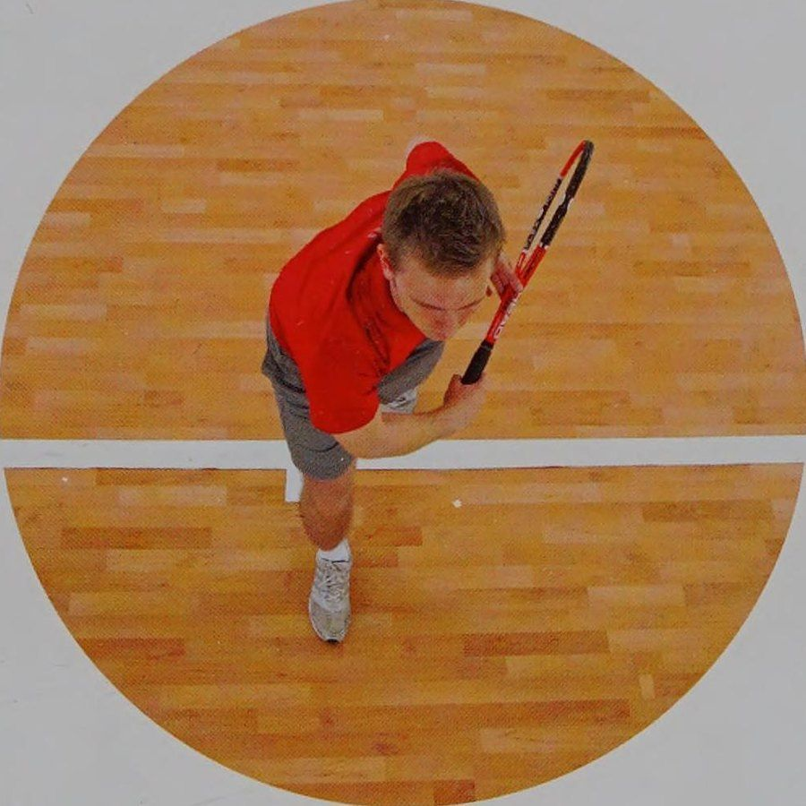
Giao bóng xoáy trên-cắt/xoáy trên |
Kiểu giao bóng này tạo ra độ xoáy trên và xoáy ngang của bóng, do đó giúp bóng có khoảng cách qua lưới lớn hơn. Nó là một công cụ hữu ích, đặc biệt là cho cú giao bóng thứ hai. Cú giao bóng xoáy lên về mặt kỹ thuật tương tự như cú giao bóng xoáy ngang nhưng độ nảy của bóng khác nhau, do đó tạo ra một kết quả khác.
Tính thời gian Tất cả các cú đánh thành công trong quần vợt đều dựa vào thời gian hiệu quả, khi bạn “chờ” bóng và đếm từ một đến năm khá nhanh. Đếm “một” khi bóng rời khỏi tay bạn, sau đó đánh bóng vào số “năm”.
Xoáy trên-cắt Điều này xảy ra khi bóng được đánh bằng sự kết hợp giữa xoáy trên và xoáy ngang.
Địa chỉ giao bóng
Bạn muốn thực hiện cú giao bóng lên và qua lưới vào ô giao bóng có độ xoáy trên và bên.
Đánh một cú giao bóng xoáy lên Phần thân trên đang thư giãn mạnh mẽ
Đứng ở góc khoảng 45 độ so với đường cuối sân với bóng và vợt trước mặt. Tại thời điểm này, bạn nên nhắm cẩn thận vào nơi bạn muốn cú giao bóng của mình tiếp đất. Cổ tay được đặt vào.
Cơ thể được mở rộng hoàn toàn Cách cầm Cách cầm kiểu lục địa thường được sử dụng cho cú đánh này [xem trang 13).
Cùng nhau giơ tay _
—eumemennes Để bắt đầu giao bóng, đưa cả hai tay lên cùng nhau, khuỷu tay cầm vợt uốn cong và cánh tay bóng mở rộng.
Tạo thành một đường thẳng từ vai này sang vai khác Chú ý đầu gối bắt đầu cong khi bàn chân trước đẩy xuống.
Xoay thân mình hơi sang phải nhé ae
Điểm bắt đầu của cánh tay bóng ee
Cánh tay bóng được nâng lên ngang cơ thể chứ không đưa thẳng ra ngoài
Trước mặt người chơi.
Wie Suing octhenns Cùng nhau lên Giữ cổ tay của bạn quay vào trong Mở rộng cánh tay bóng và uốn cong cánh tay vợt. Đẩy xuống sàn.
Giữ
Bắt đầu cong lưng Quả bóng trong tầm tay bạn Chú ý đường thẳng được tạo Từ cánh tay bóng và phần trên cánh tay của cánh tay vợt.
Đưa cả hai tay
Cùng nhau lên
Bằng cách thả đầu vợt xuống và hướng mông vợt vào quả bóng, bạn sẽ tạo ra lực khi giao bóng. Bóng cần được đặt về phía sau đầu.
Khuỷu tay chiếm ưu thế hiện đang hướng về phía sau
Hướng mông vợt
Giữ cánh tay bóng của bạn mở rộng
Đẩy xuống sàn Từ đây, với trọng lượng ở bàn chân trước, người chơi sẵn sàng lao vào quả giao bóng.
Xoay người sang một bên với vai trái hướng về phía lưới Với đôi mắt nhìn vào quả bóng, người chơi đã sẵn sàng bùng nổ Vào giao bóng.
Vì thế bóng được thả hơi muộn
_ soit rơi theo hình vòng cung về phía sau đầu Bóng đã được thả ra và mông vợt hướng lên trên. Chú ý rằng đầu gối được uốn cong tốt.
Luôn quan sát bóng. Dù lúc này bóng đã ở trên không, người chơi vẫn giữ thẳng cánh tay bóng và theo dõi bóng.
Hướng mông vợt Thả đầu vợt xuống trước khi ném về phía bóng Hãy bùng nổ trong quả giao bóng và ném khung vợt lên phía sau quả bóng để tạo ra xoáy trên và xoáy ngang.
Đứng dậy, bằng chân trước. Người chơi ném khung vợt từ thấp lên cao, lên trên và ngang qua bóng.
Thư giãn phần thân trên Kéo dài lên trên Người chơi hiện đã mở rộng hoàn toàn và những người chơi nâng cao sẽ được nhấc lên khỏi sàn.
Lưu ý góc nhìn của người chơi cổ tay. Nó hơi nghiêng về phía trước
Để che” quả bóng.
Hãy quan sát quả bóng khi bạn đánh lên và vượt qua nó. Các cú giao bóng được đánh lên, không Đánh xuống.
MANTRA Đẩy lên khỏi sàn
Ném khung vợt Như bạn tôiđạt 7 trở lên.quả bóng, cái
cổ tay sẽ quay sang một bên.
Bàn chân sau được dùng làm điểm tựa Chụp nhanh Cổ tay Khi đánh từ trên xuống và xoáy ngang, khung đầu vợt bị ném sang bên phải.
Thần chú
Chải lên và
Ném khung
Ở đây bạn có thể thấy rõ chuyển động quay của cổ tay khi tay vợt đánh lên và ngang qua bóng.
Người chơi đã hạ cánh ở phía trước
Chân. Người chơi nâng cao có thể Thậm chí đáp xuống sân sau Giao bóng của họ.
Phần thân trên đã được cởi trói hoàn toàn Kết thúc bằng 1 chân trước của ae Người chơi tiếp tục quan sát bóng để theo dõi cú trả bóng của đối phương.
Sau khi giao bóng xoáy lên, vợt có xu hướng kết thúc xung quanh phía đối diện, ở độ cao ngang eo.
Hoàn thiện giao bóng Vợt có thể kết thúc ở phía trước hoặc ở bên cạnh như minh họa ở đây Người chơi đã chọn bước về phía trước, có thể để tấn công một cú trả bóng ngắn của đối phương.
Sau khi giao bóng, người chơi được luôn cảnh giác và sẵn sàng giải quyết với lần bắn tiếp theo.
Lưu ý đầu vợt bao quanh phía đối diện của người chơi, ở độ cao ngang eo. Bạn có thể thấy rõ ràng cú dứt điểm vợt của người chơi khi anh ta tiến xuống sân.
Chuyên đề 11
Cú Thuận Tay Cắt
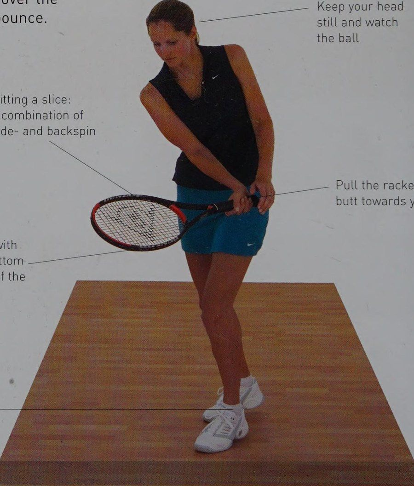
Đây là cú đánh bằng một tay khi thực hiện cú đánh tiếp đất ở phía chiếm ưu thế của bạn. Cắt được sử dụng chủ yếu như một cú đánh phòng thủ khi người chơi bị áp lực, nhưng nó cũng có thể được sử dụng một cách tích cực, chẳng hạn như trong một cú đánh tiếp cận hoặc một cú đánh rơi.
Tính thời gian Tất cả các cú đánh thành công trong quần vợt đều dựa vào thời gian hiệu quả. Khi “chờ” bóng đếm từ một đến năm khá nhanh. Đếm “một” khi bóng chạm sàn và “năm” khi bạn đánh vào nó.
Cắt lát là khi bóng được đánh với sự kết hợp của xoáy ngang và xoáy xuống.
Hãy sẵn sàng
Bản chất của cú đánh này là giữ bóng thấp qua lưới và độ nảy thấp.
Đánh một lát: sự kết hợp giữa xoáy ngang và xoáy xuống
Đứng ở tư thế sẵn sàng, vợt ở phía trước, tay không thuận đỡ cổ vợt. Giữ đầu gối hơi cong, sẵn sàng di chuyển.
Chì với phần dưới cùng -------------__ cạnh của khung
Bước vào để thoải mái
Cách cầm Tay cầm kiểu lục địa thường được sử dụng cho cú đánh này {xem trang 13].
Ee Giữ yên đầu và xem bóng Kéo mông vợt về phía bạn
Theo dõi quả bóng khi nó bay về phía bạn bằng cách xếp nó thẳng hàng với vợt.
Theo dõi bóng bằng cả hai tay trên vợt Từ đây bạn có thể thấy trọng lượng cơ thể bắt đầu chuyển sang phía thuận tay.
Phần thân trên bắt đầu xoay
Trọng lượng cơ thể của tay vợt thay đổi về phía bên thuận tay =
Theo dõi bóng ở phía trước.saaissetes
Theo dõi bóng Chú ý vợt đang theo dõi bóng phía trước người chơi ở phía thuận tay.
Chú ý cách không chiếm ưu thế Tay đỡ họng vợt, Và cổ tay bị cong.
Thần chú
Theo dõi nó bằng vợt
Khi bóng nảy lên, hãy thực hiện động tác vung vợt ngược với thời gian mà bạn có. Giống như tất cả các cú đánh, đẩy xuống sàn.
Mở mặt vợt Bạn có thể ở tư thế mở hoặc đóng, tùy thuộc vào vị trí của bóng. Hãy để điều này xảy ra một cách tự nhiên.
Tay không thuận của người chơi bắt đầu đẩy vợt về phía sau.
Giữ đầu cố định Đầu vợt ngửa ra sau và mặt vợt bắt đầu mở ra.
Xoay hoàn toàn phần thân trên Bước vào để thoải mái Mắt của người chơi hướng vào quả bóng, tập trung hoàn toàn vào thời điểm và độ xoáy của cú đánh.
Điểm tiếp xúc Sau khi đếm một” khi nảy, đánh xuống và ngang qua mặt dưới của quả bóng khi bạn đạt đến “năm”.
Phần thân trên thả lỏng một cách tự nhiên. Người chơi bước vào bóng và tiếp xúc ở phía trước.
Giữ cẳng tay của bạn hơi uốn cong
Để đạt được lát cắt
Đánh xuống và ot qua bóng
đối với xoáy ngang và xoáy ngang Người chơi đã dẫn trước bằng mép vợt. Mặt vợt hơi mở khi tiếp xúc. Bạn có thể thấy góc mà người chơi đã đánh bóng, dẫn đầu bằng mép vợt.
Cổ tay được buông ra Người chơi đang chăm chú theo dõi quả bóng khi các sợi dây trượt bên dưới nó.
MANTRA Đánh xuống và xuyên qua
Kéo vợt ngang qua đường bóng để tạo ra xoáy ngang và xoáy xuống.
Giữ đầu cố định Sử dụng cơ vai để kéo vợt về phía bạn.
Chì với cạnh khung Kéo mông vợt vào Về phía bạn.
Kéo mông vợt vào trong Kéo mông vợt về phía bạn để lấy lực và tạo xoáy. Bạn có thể thấy rõ mông vợt bị kéo về phía người chơi.
Kéo mông vợt về phía bạn
MANTRA Kéo mông vợt đó vào
Chuyên đề 12
Cú Bỏ Nhỏ Thuận Tay
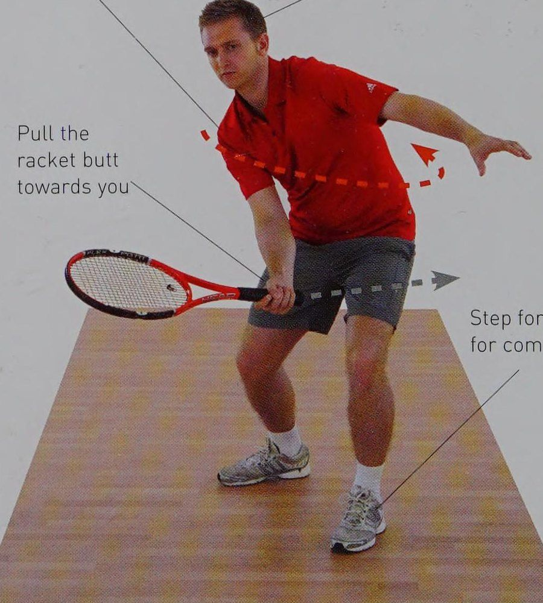
Thuận tay tay
Bắn thả
Để loại bỏ những tay vợt thường chơi từ cuối sân, bạn có thể thực hiện cú thả bóng, về cơ bản là cú thuận tay với mặt vợt mở khiến bóng rơi ngay phía đối diện của lưới. Điểm liên lạc Chú ý mặt vợt mở như thế nào. Bạn phải ở ngay dưới quả bóng và tăng tốc trong cú đánh này, không được giảm tốc độ.
Phần thân trên thả lỏng Giữ đầu tôi yên Kéo mông vợt về phía bạnX_ Bước về phía trước cho thoải mái
Chuyên đề 13
Vô-lê Thuận Tay Bóng Cao
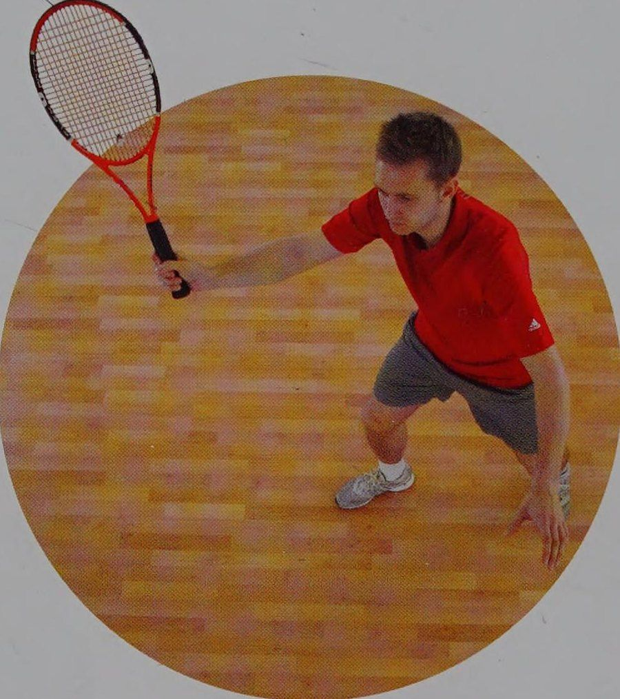
Cú vô lê thuận tay tay cao
Cú đánh này thường được sử dụng xung quanh khu vực lưới khi có rất ít khả năng bóng nảy ra trước khi tay vợt chạm vào. Tay vợt này thực sự muốn giành điểm bằng một cú vô lê, đặc biệt là một cú vô lê ngang đầu.
Tính thời gian Tất cả các cú đánh thành công trong quần vợt đều dựa vào thời gian hiệu quả, khi bạn “chờ” bóng và đếm từ một đến năm khá nhanh. Đếm “một” trên cú đánh của đối phương và đánh vô-lê khi bạn đạt đến “năm”.
Xoay Vì kỹ thuật vô-lê tương tự như các cú đánh cắt lát, nên cú xoáy được sử dụng thường là xoáy ngược hoặc xoáy ngang, hoặc cả hai.
Hãy sẵn sàng Khi bạn thấy mình ở trên lưới, do sự lựa chọn hoặc hoàn cảnh, bạn phải có khả năng giành được điểm bằng kỹ thuật vô-lê.
Đánh xuống và ngang qua quả bóng, đảm bảo vợt dừng lại khi tiếp xúc với bóng
Đứng ở tư thế sẵn sàng với vợt được giữ ở phía trước theo kiểu cầm vợt lục địa. Giữ đầu gối hơi cong, sẵn sàng di chuyển nhanh.
Bước về phía bóng để cảm thấy thoải mái
Cách cầm vợt Kiểu cầm lục địa thường được sử dụng cho cú đánh này, mặc dù một số người chơi sử dụng cách cầm vợt thuận tay phía Đông (xem trang 13).
Giữ đầu bạn yên Je Ye Cân bằng hỗ trợ tay không thuận Thân trên hơi xoay
Theo dõi bóng Theo dõi bóng bằng vợt được giữ ở phía trước và phía trên bàn tay của bạn.
Đặt vợt lùi lại một chút Cổ tay buông ra Trọng lượng cơ thể của người chơi hơi nghiêng về phía thuận tay khi bóng di chuyển.
Thần chú
Theo dõi bóng
Theo dõi bóng bằng vợt phía trước Vợt được giữ phía trên bàn tay và hơi ngả về phía sau.
Người chơi di chuyển tự nhiên Về phía quả bóng, gây ra Cơ thể nghiêng về phía thuận tay.
Phần thân trên hơi xoay Khi người chơi theo dõi và di chuyển về phía quả bóng, hãy chú ý rằng tay không thuận giúp giữ thăng bằng.
Điểm liên lạc
Gặp bóng khi bạn đếm đến “năm” theo thời gian của mình. Hãy chắc chắn rằng bạn dừng lại trên quả bóng.
Giữ của bạn Đứng yên Người chơi dừng vợt vào bóng. Mặt vợt hơi mở.
Phần thân trên hơi xoay
Bước về phía trước cho thoải mái
Người chơi đang chăm chú theo dõi.
Dừng vợt trên bóng Hông thư giãn
Bạn có thể thấy rằng cổ tay được thả ra khi người chơi kéo nhẹ mông vợt về phía mình. Người chơi đã áp dụng thế đứng khép kín một phần. Hãy để đôi chân của bạn di chuyển tự nhiên theo bóng. MANTRA Dừng bóng và trở về vị trí sẵn sàng
Chuyên đề 14
Vô-lê Bỏ Nhỏ Thuận Tay
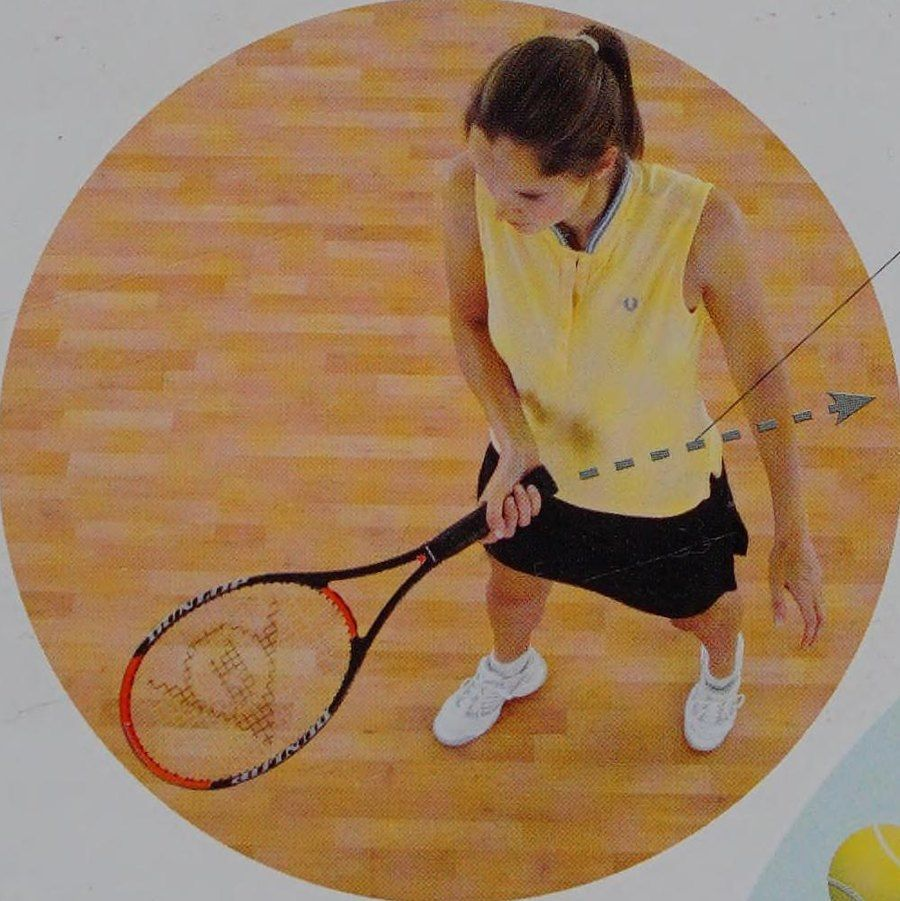
: thuận tay tay
Thả vô-lê
Một cách để thực sự bắt kịp đối thủ của bạn làm choáng bóng qua lưới bằng một cú vô lê. Chỉ cần mở mặt vợt nhiều hơn bình thường, bạn có thể cắt bóng xuống để nó rơi xuống phía bên kia của lưới. Kết thúc cú thả bóng bằng cách kéo nhẹ mông vợt về phía bạn.
Giữ của bạn Ví dụ như đầu vẫn còn
Điểm liên lạc Bạn có thể thấy chỉ là am:
Dưới quả bóng. Đi dưới bóng
Kéo mông vợt về phía bạn Kéo mông vợt đó
Chuyên đề 15
Vô-lê Thuận Tay Bóng Thấp
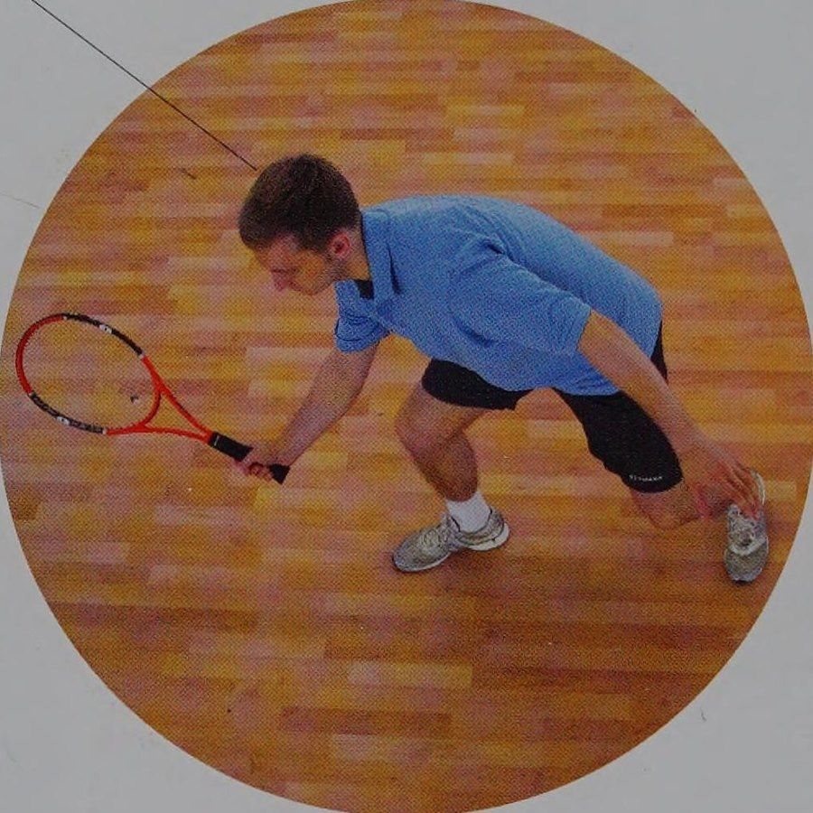
Cú vô lê thuận tay tay thấp
Cú đánh này thường được sử dụng xung quanh khu vực lưới khi có rất ít khả năng bóng nảy ra trước khi tay vợt chạm vào. Tay vợt chạm bóng ở độ cao dưới lưới, buộc tay vợt này phải tung cú vô lê hướng lên trên.
Tính thời gian Tất cả các cú đánh thành công trong quần vợt đều dựa vào thời gian hiệu quả, khi bạn “chờ” bóng và đếm từ một đến năm khá nhanh. Đếm “một” trên cú đánh của đối phương và đánh vô-lê khi bạn đạt đến “năm”.
Xoay Vì kỹ thuật vô-lê tương tự như các cú đánh cắt lát, nên cú xoáy được sử dụng thường là xoáy ngược hoặc xoáy ngang, hoặc cả hai.
Hãy sẵn sàng
Khi bạn thấy mình ở trên lưới, do sự lựa chọn hoặc hoàn cảnh, bạn phải có khả năng giành được điểm bằng kỹ thuật vô-lê.
Làm thẳng vợt Đứng ở tư thế sẵn sàng với vợt được giữ ở phía trước theo kiểu cầm kiểu lục địa. Giữ đầu gối hơi cong, sẵn sàng di chuyển nhanh.
Đánh xuống và ngang qua quả bóng
Bước về phía trước cho thoải mái
Cách cầm vợt Kiểu cầm lục địa thường được sử dụng cho cú đánh này, mặc dù một số người chơi sử dụng cách cầm vợt thuận tay phía đông [xem trang 13].
Ap anh ấy
Phần trên nhẹ xoay cơ thể
Bóng bằng vợt cầm Tracie phía trước bạn và phía trên bàn tay của bạn.
Giữ đầu cố định Cúi xuống bóng Khi theo dõi bóng, đầu gối của người chơi uốn cong và nghiêng về phía thuận tay.
Mặt vợt mở
Theo dõi bóng
Xem jplieo bóng
Theo dõi bóng
Vợt được giữ phía trên tay và hơi ngả ra sau, mặt vợt mở.
Khi người chơi di chuyển tự nhiên Về phía quả bóng, cơ thể nghiêng Về phía thuận tay. Khi người chơi theo dõi và di chuyển về phía quả bóng, hãy chú ý rằng tay không thuận giúp giữ thăng bằng.
Gặp bóng khi bạn đếm đến “năm” theo thời gian của mình. Hãy chắc chắn rằng bạn dừng lại trên quả bóng.
Để cơ thể tự nhiên của bạn nâng lên Người chơi dừng vợt trên bóng. Mặt vợt thoáng hơn so với cú vô lê cao (xem trang 70-73).
Xem bóng Xoay nhẹ phần thân trên Người chơi chăm chú theo dõi quả bóng Liên lạc được thực hiện.
Dừng vợt ae trên bóng Khi người chơi đánh xuống với mặt vợt mở, hãy chú ý cơ thể nâng lên một cách tự nhiên.
Liên hệ ở phía trước Người chơi đã áp dụng thế đứng khép kín. Hãy để đôi chân của bạn di chuyển tự nhiên theo bóng. MANTRA Dừng bóng và trở về vị trí sẵn sàng
Chuyên đề 16
Vô-lê Nửa Thuận Tay
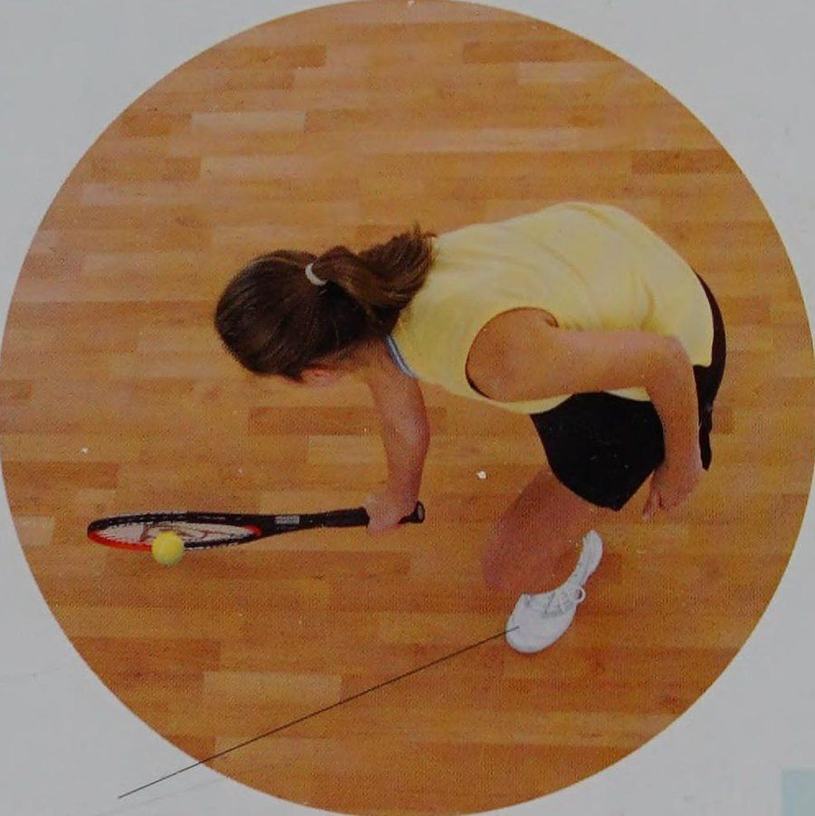
chuyên gia
Thuận tay tay
Nửa cú vô lê
Sẽ có lúc, khi bạn ở gần lưới, bóng sẽ chạm sàn trước khi bạn đánh trúng. Điều này có thể là do bóng đến ngay chân bạn. Vì bạn có quá ít thời gian để phản ứng nên bạn sẽ phải nhấc quả bóng lên ngay khi nó chạm sàn bằng cú vô lê nửa chừng. Phản ứng nhanh chóng để nhấc bóng lên ngay khi nó chạm sân.
Nhấc bóng ngay khi nó chạm sàn
Điểm liên lạc
Người chơi hạ bóng xuống với mặt vợt hơi khép lại để che bóng khi họ nhấc bóng lên.
Nghiêng người về phía trước từ phần thân trên. Lưu ý góc của mặt vợt. Nó hơi đóng lại để che quả bóng khi nó được nâng lên.
Bước về phía trước cho thoải mái Khung vợt vuông góc với mặt sàn
Đầu của tay vợt vẫn đứng yên khi cô ấy chăm chú quan sát quả bóng và thực hiện cú đánh.
Xuống / tới quả bóng Trọng lượng cơ thể của tay vợt dồn vào bàn chân trước do tư thế của bàn chân sau.
Chân trước của tay vợt bị cong Khi cô ấy bước xuống quả bóng Để nâng nó lên.
Kết thúc Cho phép cơ thể bạn nâng lên Một cách tự nhiên với cú đánh.
Chuyên đề 17
Vô-lê Trái Tay Bóng Trung Bình
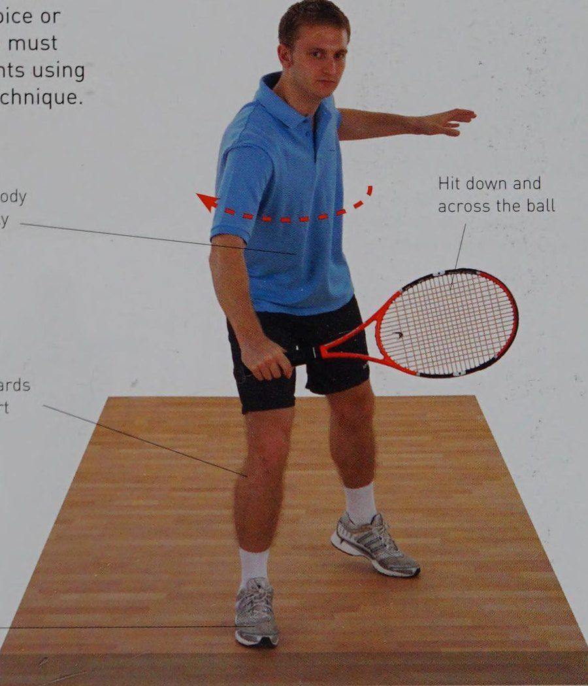
Cú vô lê trái tay tay trung bình
Cú đánh này thường được sử dụng xung quanh khu vực lưới khi có rất ít khả năng bóng nảy ra trước khi tay vợt chạm vào.
Tính thời gian Tất cả các cú đánh thành công trong quần vợt đều dựa vào thời gian hiệu quả, khi bạn “chờ” bóng và đếm từ một đến năm khá nhanh. Đếm “một” trên cú đánh của đối phương và đánh vô-lê khi bạn đạt đến “năm”.
Xoay Vì kỹ thuật vô-lê tương tự như các cú đánh cắt lát, nên cú xoáy được sử dụng thường là xoáy ngược hoặc xoáy ngang, hoặc cả hai.
Cách cầm Cách cầm kiểu lục địa thường được sử dụng cho cú đánh này [xem trang 13}.
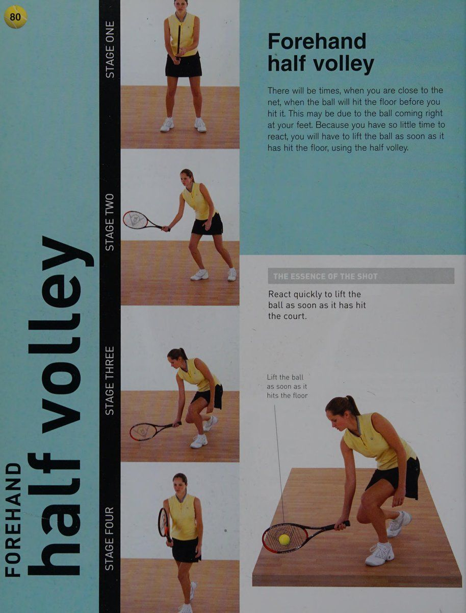
Hình 50: cú trái tay · vô-lê
Hãy sẵn sàng Khi bạn thấy mình ở trên lưới, do sự lựa chọn hoặc hoàn cảnh, bạn phải có khả năng giành được điểm bằng kỹ thuật vô-lê.
Phần thân trên hơi xoay lại —_ Đánh xuống và ngang qua quả bóng Bước về phía trước cho thoải mái Đứng ở tư thế sẵn sàng với vợt được giữ ở phía trước theo kiểu cầm vợt lục địa. Giữ đầu gối hơi cong, sẵn sàng di chuyển nhanh.
70% trọng lượng của bạn phải đặt ở chân trước——
Theo dõi bóng Theo dõi bóng bằng tay không thuận của bạn đỡ cổ vợt, giơ trước mặt bạn.
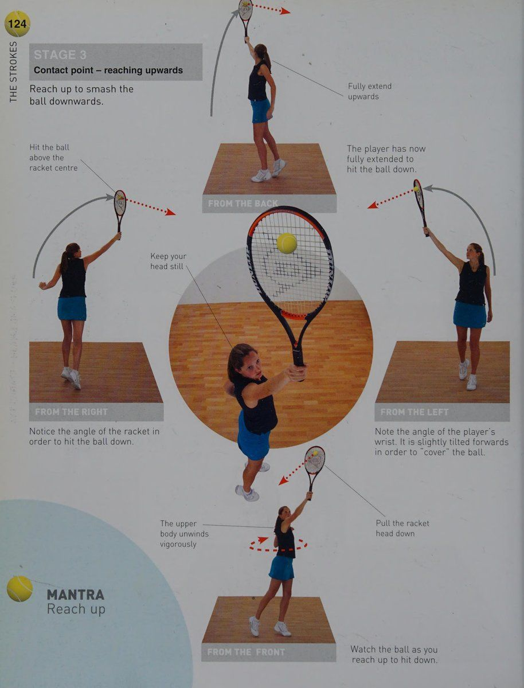
Hình 51: cú đánh tấn công · vô-lê
Theo dõi bóng bằng tay không thuận trong Hỗ trợ Xoay một phần thân trên Trọng lượng cơ thể của người chơi hơi nghiêng về phía trái tay khi anh ta theo dõi bóng.
Xem - quả bóng Bàn chân này sẵn sàng tiến lên một bước
Vợt được giữ phía trên bàn tay và hơi ngả về phía sau. Bạn có thể thấy tay không thuận đang đỡ cổ vợt.
Cổ tay được buông ra Khi người chơi theo dõi và di chuyển về phía quả bóng, hãy chú ý đầu vợt được giữ phía trên bàn tay.
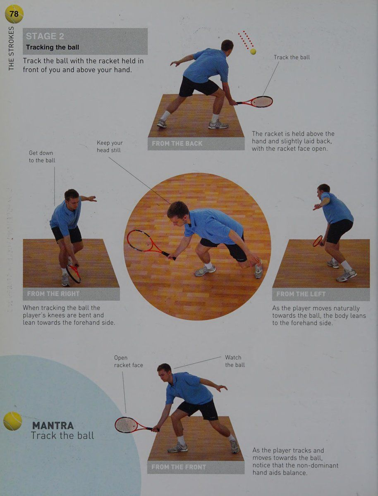
Hình 52: cú thuận tay · nửa · vô-lê
Điểm tiếp xúc Gặp bóng khi bạn đạt đến “năm” trong lần tính thời gian của mình. Hãy chắc chắn rằng bạn dừng lại trên quả bóng.
Tay không thuận thả vợt Người chơi dừng vợt trên bóng. Mặt vợt hơi mở.
Dừng vợt trên bóng Thân trên hơi thư giãn. Người chơi đang chăm chú quan sát quả bóng khi tiếp xúc được thực hiện.
Ae Hãy giữ lấy
đầu đứng yên Mặt vợt hơi mở khi tiếp xúc. Người chơi đã áp dụng tư thế khép kín một phần, để chân di chuyển tự nhiên theo bóng.
Liên lạc ở phía trước
MANTRA Dừng lại trên quả bóng
Chuyên đề 18
Vô-lê Bỏ Nhỏ Trái Tay
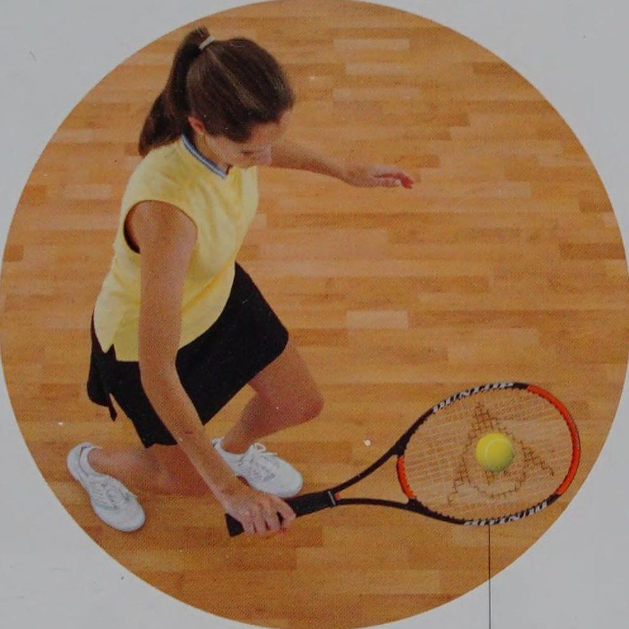
Bằng cách nghiêng mặt vợt, bạn có thể thả bóng sang phía bên kia của lưới.
Giữ khuỷu tay của bạn uốn cong Đầu gối hơi cong.
Trái tay tay
Thả vô-lê
Một cách để thực sự bắt kịp đối thủ của bạn làm choáng bóng qua lưới bằng một cú vô lê. Bằng cách mở mặt vợt nhiều hơn bình thường, bạn có thể cắt bóng xuống để nó rơi sang phía bên kia của lưới.
Mở Mặt vợt
‘ Đệm
Btao redlulce Tốc độ Bạn có thể thấy mặt vợt mở như thế nào để có thể đưa bóng vào dưới.
Đi dưới bóng Cánh tay không thuận giúp giữ thăng bằng Điểm tiếp xúc nằm ở phía trước người chơi.
Nhẹ nhàng Trọng lượng cơ thể của người chơi đã chuyển sang phía mà cô ấy đánh bóng.
Mặt vợt mở để Cắt bóng cho lớn Số lượng xoáy ngược. Mặt vợt mở Kết thúc cú thả bóng bằng cách kéo nhẹ mông vợt về phía
Chuyên đề 19
Vô-lê Trái Tay Bóng Thấp
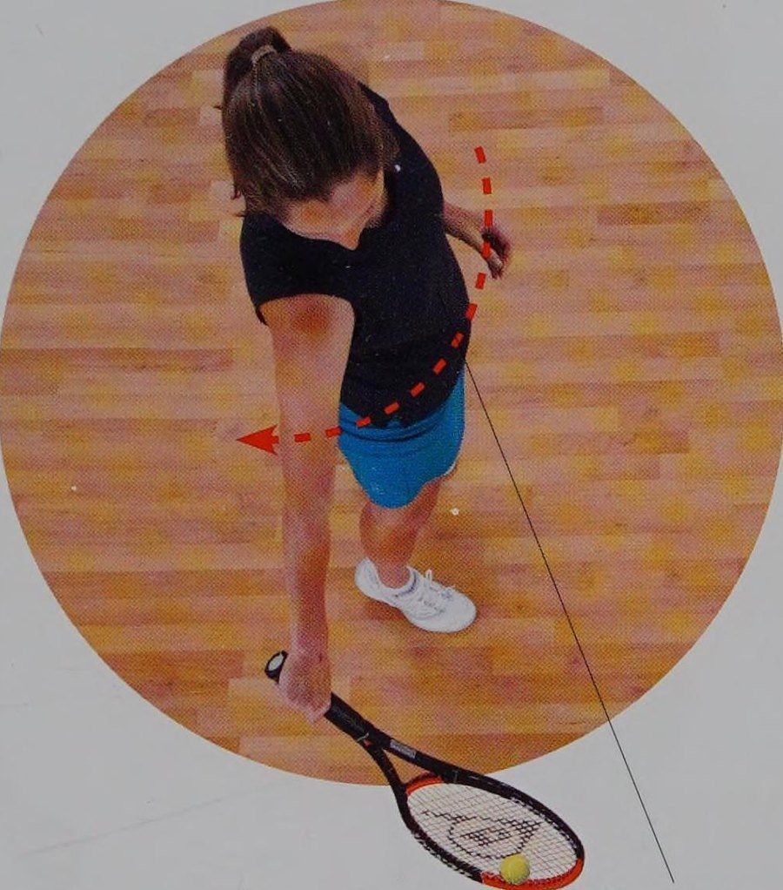
Cú vô lê trái tay tay thấp
Cú đánh này thường được sử dụng xung quanh khu vực lưới khi có rất ít khả năng bóng nảy ra trước khi tay vợt chạm vào. Tay vợt chạm bóng ở độ cao dưới lưới, buộc tay vợt này phải tung cú vô lê hướng lên trên.
Tính thời gian Tất cả các cú đánh thành công trong quần vợt đều dựa vào thời gian hiệu quả, khi bạn “chờ” bóng và đếm từ một đến năm khá nhanh. Đếm “một” trên cú đánh của đối phương và đánh vô-lê khi — bạn đạt đến “năm”.
Xoay Vì kỹ thuật vô-lê tương tự như các cú đánh cắt lát, nên cú xoáy được sử dụng thường là xoáy ngược hoặc xoáy ngang, hoặc cả hai.
Hãy sẵn sàng
Khi bạn thấy mình ở trên lưới, do sự lựa chọn hoặc hoàn cảnh, bạn phải có khả năng giành được điểm bằng kỹ thuật vô-lê.
Cánh tay vợt mở rộng khi tiếp xúc
Dẫn đầu với
Đứng ở tư thế sẵn sàng với vợt được giữ ở phía trước theo kiểu cầm kiểu lục địa. Giữ đầu gối hơi cong,
Bước về phía trước cho thoải mái.
sẵn sàng di chuyển nhanh chóng.
Cách cầm Cách cầm kiểu lục địa thường được sử dụng cho cú đánh này (xem trang 13}.
Đánh xuống và Ngang qua quả bóng
Theo dõi bóng bằng vợt được giữ phía trên tay và trước mặt bạn.
Theo dõi bóng thấp bằng vợt Giữ của bạn Giữ nguyên đầu gối của tay vợt uốn cong và nghiêng về phía bên trái tay khi cô ấy theo dõi bóng.
Thân trên xoay nhẹ
Theo dõi bóng
Vợt được giữ phía trên tay và hơi ngả ra sau, mặt vợt mở.
Chú ý cách không chiếm ưu thế Tay đỡ vợt như Người chơi theo dõi bóng.
_— Cổ tay
Bị sa thải
Jo Bước bóng về phía
Người chơi đang chờ đánh bóng khi đếm đến 'năm'.
điểm tiếp xúc Gặp bóng khi bạn đạt đến “năm” trong lần tính thời gian của mình. Hãy chắc chắn rằng bạn dừng lại trên quả bóng.
Dừng lại Vợt trên bóng Cánh tay không thuận ở lại phía sau Người chơi dừng vợt trên bóng. Mặt vợt thoáng hơn so với cú vô lê cao.
Duỗi thẳng cánh tay khi bạn tiếp xúc
Người chơi đang chăm chú theo dõi quả bóng liên lạc được thực hiện.
Nâng cơ thể lên một cách tự nhiên Khi người chơi đánh xuống với mặt vợt mở, hãy chú ý cơ thể nâng lên một cách tự nhiên.
Người chơi đã áp dụng một đóng
Tư thế. Hãy để đôi chân của bạn di chuyển Theo bóng một cách tự nhiên.
Phần thân trên thư giãn một cách tự nhiên
MANTRA Dừng lại trên quả bóng
Chuyên đề 20
Vô-lê Nửa Trái Tay
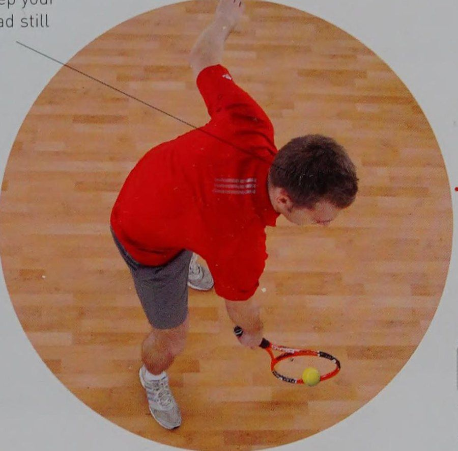
Trái tay tay
Nửa cú vô lê
Sẽ có lúc, khi bạn ở gần lưới, bóng sẽ chạm sàn trước khi bạn đánh trúng. Điều này có thể là do bóng đến ngay chân bạn. Vì bạn có quá ít thời gian để phản ứng nên bạn sẽ phải nhấc quả bóng lên ngay khi nó chạm sàn bằng cú vô lê nửa chừng. Phản ứng nhanh chóng để nhấc bóng lên ngay khi nó chạm sân. Nhấc bóng lên Điểm tiếp xúc Hạ bóng xuống với mặt vợt hơi khép lại để che bóng khi bạn nhấc nó lên.
Bệnh bại liệt ora không chiếm ưu thế
Hãy xuống bóng Điểm tiếp xúc ở đây gần với bàn chân.
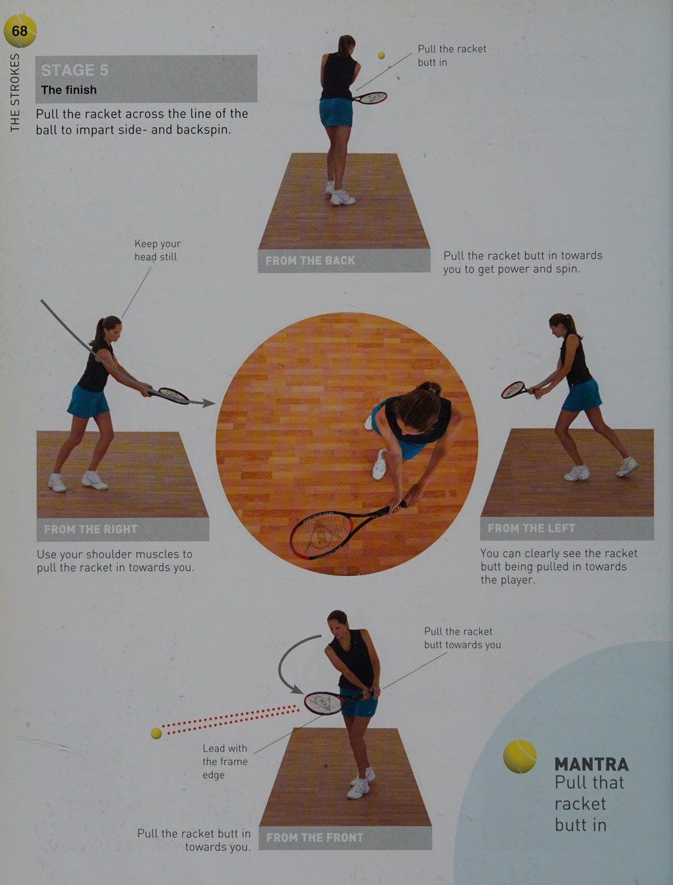
Hình 53: cú thuận tay · vô-lê
Giữ đầu của bạn yên patra Nâng thân Góc của vợt hoàn hảo để nâng bóng hiệu quả. Đầu của tay vợt vẫn đứng yên trong khi _ nhìn bóng.
Hầu hết chúng ta đều nặng chân trước Trọng lượng cơ thể của tay vợt chủ yếu dồn vào bàn chân trước. Người chơi có thể thoải mái đưa tay xuống bóng.
Kết thúc
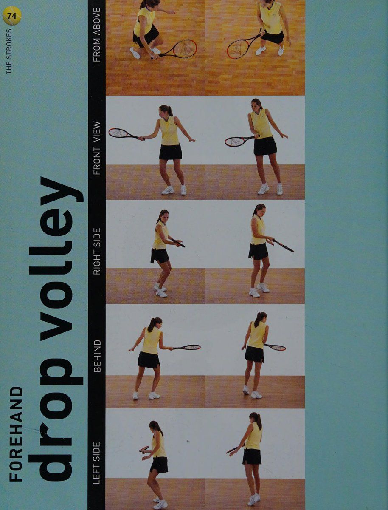
Hình 54: thấp · cú thuận tay · vô-lê
Cho phép cơ thể bạn nâng lên
Một cách tự nhiên Với Bắn.
Chuyên đề 21
Cú Trả Giao Bóng
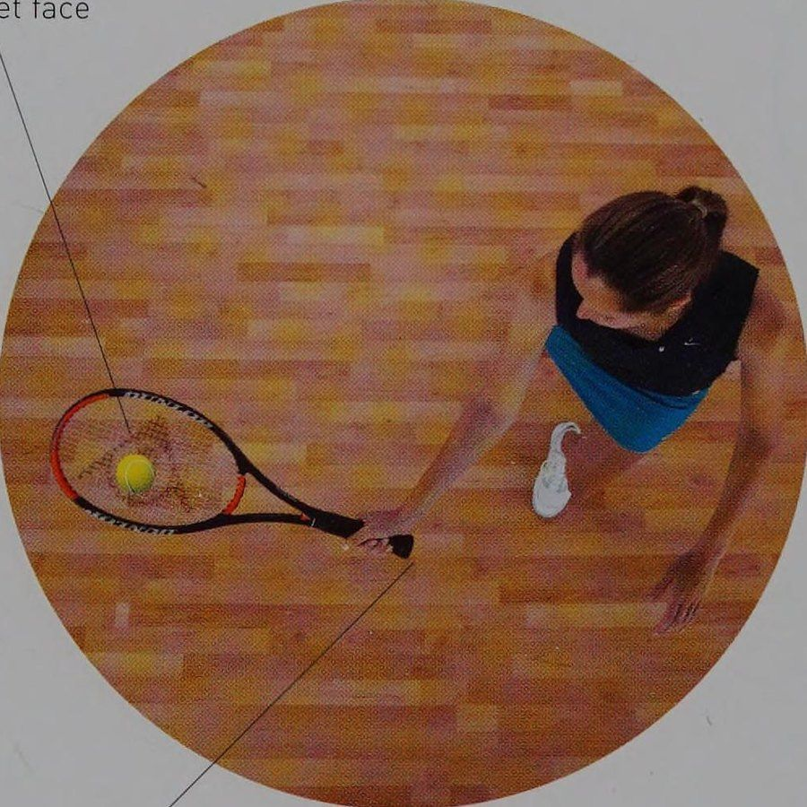
Trả giao bóng
- Việc giao bóng và trả giao bóng là những cú đánh quan trọng nhất trong trận đấu. Nếu bạn không nhất quán ở một trong hai lĩnh vực này, trò chơi của bạn sẽ bị ảnh hưởng. Cách thực hiện hai cú đánh này thường sẽ quyết định kết quả của điểm.
Tính thời gian Tất cả các cú đánh thành công trong quần vợt đều dựa vào thời gian hiệu quả, bao gồm việc đếm từ một đến năm khá nhanh khi “chờ” bóng. Đếm “một” khi nảy và đánh bóng vào “năm”.Khi đối thủ của bạn đánh bóng, hãy tách từng bước nhỏ, theo dõi bóng và di chuyển tương ứng.
Xoay Khi trả bóng, đánh xoáy lên hoặc cắt lát.
Bản chất của các cú đánh Mục tiêu của bạn là trả lại quả giao bóng của đối thủ và ngăn cản họ giành được lợi thế trong ván giao bóng của mình, từ đó tạo cho bạn một sân chơi bình đẳng và cơ hội bẻ giao bóng của họ.
Cách cầm Sử dụng cách cầm cần thiết cho kiểu đánh bạn muốn chơi (xem trang 13-15).
Hãy sẵn sàng Với tất cả các loại dịch vụ trả lại, bạn phải áp dụng tư thế sẵn sàng cảnh giác.
Thuận tay tay
Cú đánh này được thực hiện theo cách tương tự như cú giật thuận tay [xem trang 16-23}.Bạn có thể có ít thời gian hơn để đánh bóng;do đó cú backswing của bạn sẽ trở nên ngắn hơn tương ứng.
Dùng cơ tam đầu và bắp tay trước để kéo vợt lên trên Cổ tay Bị sa thải Điểm liên lạc ở phía trước người chơi.
Sử dụng độ vuông góc của dây để tạo ra khối lượng xoáy lên
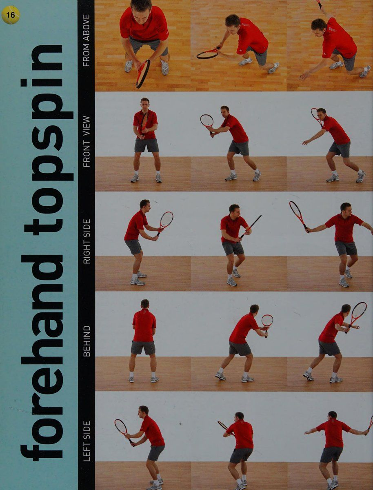
Hình 55: cú thuận tay · xoáy lên · điểm tiếp xúc
Tay vợt xem bóng chặt chẽ như cô ấy làm Giữ cho cẳng tay của bạn hơi uốn cong
Người chơi thực hiện tư thế mở và đặt trọng lượng cơ thể của mình sang phía cô ấy đang đánh.
Người chơi duy trì xuất sắc Sự cân bằng do tư thế cởi mở của cô ấy.
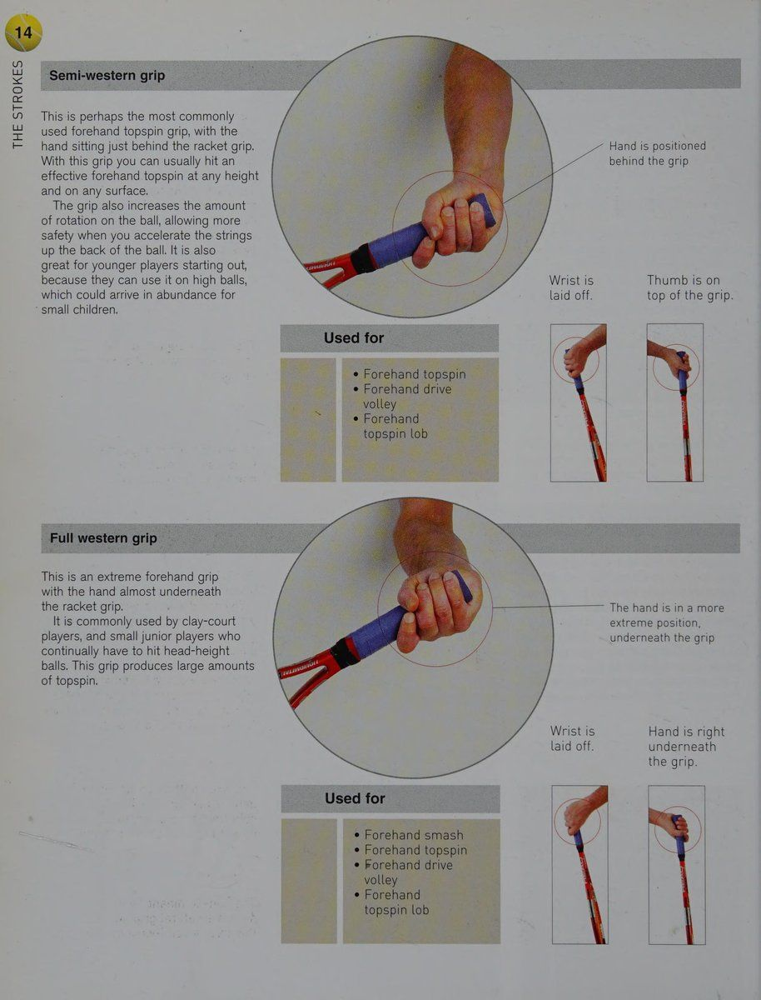
Hình 56: cú thuận tay · xoáy lên · chuẩn bị
Bàn tay này giúp giữ thăng bằng
Cú đánh này được thực hiện theo cách tương tự như cú đánh trái tay xoáy lên bằng một tay [xem trang 32-37].Bạn có thể có ít thời gian hơn để đánh bóng;do đó cú backswing của bạn sẽ trở nên ngắn hơn tương ứng.
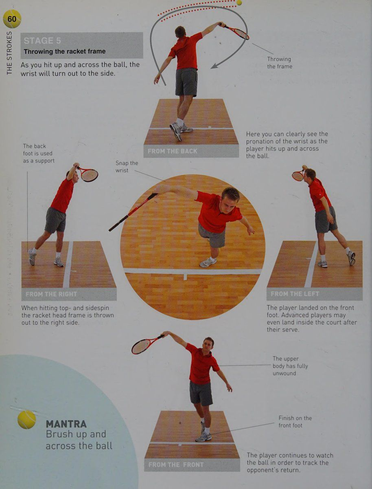
Hình 57: cắt xoáy · cú thuận tay
Cân bằng hỗ trợ tay không thuận Phần thân trên xoay Điểm tiếp xúc ở phía trước người chơi.
Thân trên xoay mạnh
Tay vợt xem bóng
Chặt chẽ như cô ấy làm - Kéo vợt Người chơi thực hiện tư thế khép kín để thoải mái. Nếu bạn nhận được một cú giao bóng mạnh, bạn có thể áp dụng thế đứng cởi mở.
Người chơi chuẩn bị đánh bóng Lên phía sau của quả bóng để Truyền xoáy trên.
Giữ của bạn
Đứng yên
Quét bóng để tạo xoáy lên
Thế đứng có thể mở hoặc đóng tùy theo vị trí của bóng al dẫn đầu trái tay xoáy lên. Cú đánh này được thực hiện theo cách tương tự như cú đánh trái tay xoáy lên bằng hai tay {xem trang 24-31].Bạn có thể có ít thời gian hơn để đánh bóng;do đó cú backswing của bạn sẽ trở nên ngắn hơn tương ứng.
Kéo vợt a
Giải quyết vấn đề không phải của bạn Tay thuận Bạn có thể thấy trọng lượng cơ thể của người chơi chuyển sang phía trái tay của cô ấy.
Phần thân trên thả lỏng Giúp cơ thể bạn nâng lên một cách tự nhiên
Tay vợt xem bóng
Chặt chẽ khi cô ấy làm Liên hệ với nó.
Tư thế cởi mở Người chơi áp dụng một tư thế cởi mở. Bằng cách này, cô ấy có thể đẩy mình lùi về trung tâm một cách hiệu quả.
Người chơi chuẩn bị đánh bóng Lên phía sau của quả bóng để Truyền xoáy trên.
Tay thuận chỉ là tay ổn định
Theo dõi quả bóng và đếm đến “năm”
Cú đánh này được thực hiện theo cách tương tự như cú cắt thuận tay (xem trang 62-68).Bạn có thể có ít thời gian hơn để đánh bóng;do đó cú backswing của bạn sẽ trở nên ngắn hơn tương ứng.
Mặt vợt mở Mặt vợt của người chơi mở rất nhiều. Góc này sẽ tạo ra độ xoáy ngược và xoáy ngang.
Kéo mông vợt vào Thế đứng có thể mở hoặc đóng tùy theo vị trí của bóng Người chơi quan sát quả bóng thật kỹ khi cô ấy thực hiện Liên hệ với nó.
Nhấn xuống oe và qua
Sf là
Giữ của bạn
Cổ tay bị bong ra Người chơi áp dụng thế đứng khép kín. Cô ấy có thể đang thử chiến thuật 'chip và sạc'.
Giữ của bạn
Đứng yên Người chơi liên hệ trong Phía trước cơ thể.
Thân trên xoay nhẹ
Cú cắt trái tay Cú đánh này được thực hiện theo cách tương tự như cú cắt trái tay (xem trang 38-44).Bạn có thể có ít thời gian hơn để đánh bóng;do đó cú backswing của bạn sẽ trở nên ngắn hơn tương ứng.
Đánh xuống và vượt qua Cánh tay không thuận giúp giữ thăng bằng. Người chơi tiếp xúc ở phía trước cơ thể.
Kéo mông vợt vào Thân trên xoay nhẹ Người chơi theo dõi kỹ quả bóng khi cô ấy thực hiện.
Liên hệ với nó.===aaaeee
Thế đứng có thể mở hoặc đóng tùy theo vị trí của bóng Người chơi áp dụng thế đứng khép kín. Có thể cô ấy đang thử chiến thuật “chip và sạc”.
Mặt vợt của người chơi rất Cởi mở nhiều. Góc này sẽ Truyền đạt độ xoáy ngược và xoáy ngang.
Cổ tay bị bong ra
MANTRA Theo dõi quả bóng và đếm 'đến năm'
Chuyên đề 22
Cú Bổng Topspin Thuận Tay
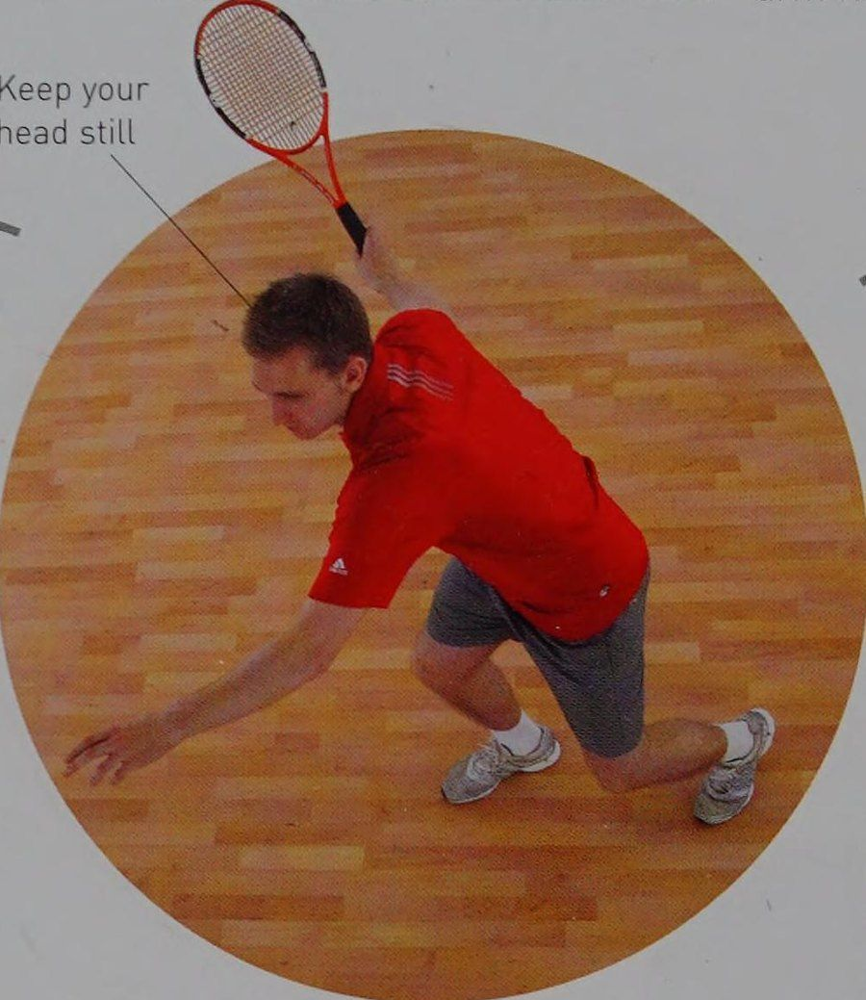
Cú lốp bóng xoáy lên thuận tay tay
Nếu bạn thấy mình ở cuối sân, đối thủ của bạn có thể chọn tấn công và tiến lên lưới. Có lẽ bạn đánh một quả bóng tiếp đất ngắn. Một chiến thuật phản công tốt sẽ là đánh bóng cao qua đầu đối thủ với cú xoáy lên để đưa bóng đi xuống an toàn trong phạm vi sân.
Tính thời gian Tất cả các cú đánh thành công trong quần vợt đều dựa vào thời gian hiệu quả, khi bạn “chờ” bóng và đếm từ một đến năm khá nhanh. Đếm “một” khi bóng nảy lên và đánh bóng lên “năm”.
Xoáy trên Xoáy trên về cơ bản là khi quả bóng được đánh với hiệu ứng quét lên khiến nó quay mạnh theo quỹ đạo về phía trước.
Sẵn sàng
Cú đánh giống hệt cú giật thuận tay (xem trang 16-23), ngoại trừ việc bóng được nâng lên cao hơn để vượt qua đầu đối phương.
Bắt đầu với vợt ở phía trước bạn, tay thuận thuận tay cầm vợt và Xem cái đầu vợt ieee ut nhẹ Đầu gối hơi cong.
Cách cầm vợt Cách cầm vợt thường được sử dụng cho cú đánh này là cách cầm vợt thuận tay mà bạn đã chọn [xem trang 13-14).Đây là cách nắm đầy đủ của phương Tây.
Cân bằng hỗ trợ tay không thuận Áp dụng tư thế mở với chân đỡ thẳng và khỏe và chân kia hơi nâng lên, nếu muốn Khi chờ bóng, bạn cũng nên theo dõi nó với vợt được giữ trước mặt.
Đợi bóng nảy lên Bạn có thể thấy vợt nghiêng về phía trước và được đỡ bởi tay không thuận.
Thân trên a
Bắt đầu xoay Khi người chơi theo dõi và di chuyển về phía quả bóng, hãy chú ý rằng cánh tay không thuận đã được đặt ở vị trí Khắp cơ thể. Samm _- Xếp bóng lên hàng tuần với vợt được đỡ bằng cả hai tay trong khi hướng về phía quả bóng.
Cơ thể nghiêng về phía thuận tay Bên khi người chơi di chuyển Tự nhiên về phía bóng. Theo dõi bóng bằng cả hai tay trên vợt
Theo dõi bóng
Xoay ngược Sau khi bóng đã nảy lên, hãy thực hiện động tác vung vợt ra sau, giữ cho cánh tay và tay cầm của bạn thư giãn khi thực hiện động tác này.
Giữ cánh tay của bạn hơi uốn cong
Thực hiện cú backswing với cổ tay buông ra Bạn có thể thấy mặt vợt nghiêng về phía người chơi do cổ tay bị buông ra.
Giữ đầu của bạn yên Đẩy xuống sàn Khi thực hiện động tác backswing, tay không thuận sẽ giữ ngang cơ thể. Tay này tiếp tục. Theo dõi bóng.
Chú ý cây vợt được đỡ phía trên bàn tay với cổ tay buông ra. Cũng chú ý cánh tay thuận uốn cong và thư giãn. Trọng lượng cơ thể được đẩy xuống chân ngoài trong tư thế mở.
Phần thân trên đã xoay hoàn toàn Cú vung vợt về phía trước Khi bạn bắt đầu cú vung vợt về phía trước, hãy thả đầu vợt xuống và đóng mặt vợt lại. Cổ tay vẫn buông ra.
Vợt kín Cổ tay buông ra sao cho mông vợt hướng về phía quả bóng. Đầu vợt ở dưới bàn tay.
Giữ đầu của bạn yên Phần thân trên bắt đầu thư giãn
Mông vợt hướng vào
Quả bóng. Mặt vợt là Hoàn toàn đóng cửa và - Đầu vợt bị rơi.
Cổ tay / \s bị sa thải
Đóng mặt vợt ae
Chú ý đầu vợt bây giờ đã được hạ xuống phía dưới bàn tay, với cổ tay được thả ra. Mặt vợt được đóng lại.
Trọng lượng cơ thể vẫn giữ nguyên Chân bên ngoài, nhưng bây giờ cơ thể là Nâng lên trên.
Đẩy chân bên ngoài của bạn xuống
MANTRA Đóng mặt vợt
Eouiac ee tấm da lại
Túi ee
Sự tiếp xúc được thực hiện với bóng thông qua hiệu ứng vuốt từ thấp đến cao để tạo ra xoáy lên.
Giữ phần thân trên của bạn thẳng đứng
Giữ của bạn
Đầu vẫn đứng yên Bạn có thể thấy người chơi hiện đang ngả người về phía sau, dồn trọng lượng vào chân sau.
Liên hệ oe với vợt có mặt vuông Lưu ý đầu vợt vuông góc với quả bóng, nhưng vẫn hơi thả xuống dưới bàn tay.
Trong khi nghiêng người về phía sau, người chơi Thực sự có thể nhận được bóng để Nhấc nó lên cao.
Sử dụng cánh tay không thuận của bạn để giữ thăng bằng Hãy để cơ thể bạn nâng lên một cách tự nhiên Mặt vợt hơi mở và đầu vợt hơi cụp xuống phía dưới tay.
Kết thúc Hãy hoàn thành cú lốp bóng xoáy lên thuận tay tay với vợt của bạn qua vai.
Khung vợt vuông góc với vai
Từ đây bạn có thể thấy khuỷu tay của tay thuận tay hướng thẳng về phía trước.
Tiếp tục theo dõi bóng
Phần thân trên hoàn toàn không bị ràng buộc. Bạn có thể thấy mông vợt và khuỷu tay hướng về phía trước. Người chơi vẫn theo dõi bóng, dự đoán cú đánh tiếp theo.
___-—— Kết thúc cú đánh bằng cú dứt điểm bằng vai Chú ý đầu vợt qua vai và trọng lượng cơ thể, lúc này được chuyển sang chân đối diện để hỗ trợ phục hồi. Đầu vợt qua vai đối diện và tay không thuận ngang với má.
Khuỷu tay hướng về phía trước
MANTRA Đưa nó qua đầu đối thủ của bạn
Chuyên đề 23
Cú Bổng Topspin Trái Tay
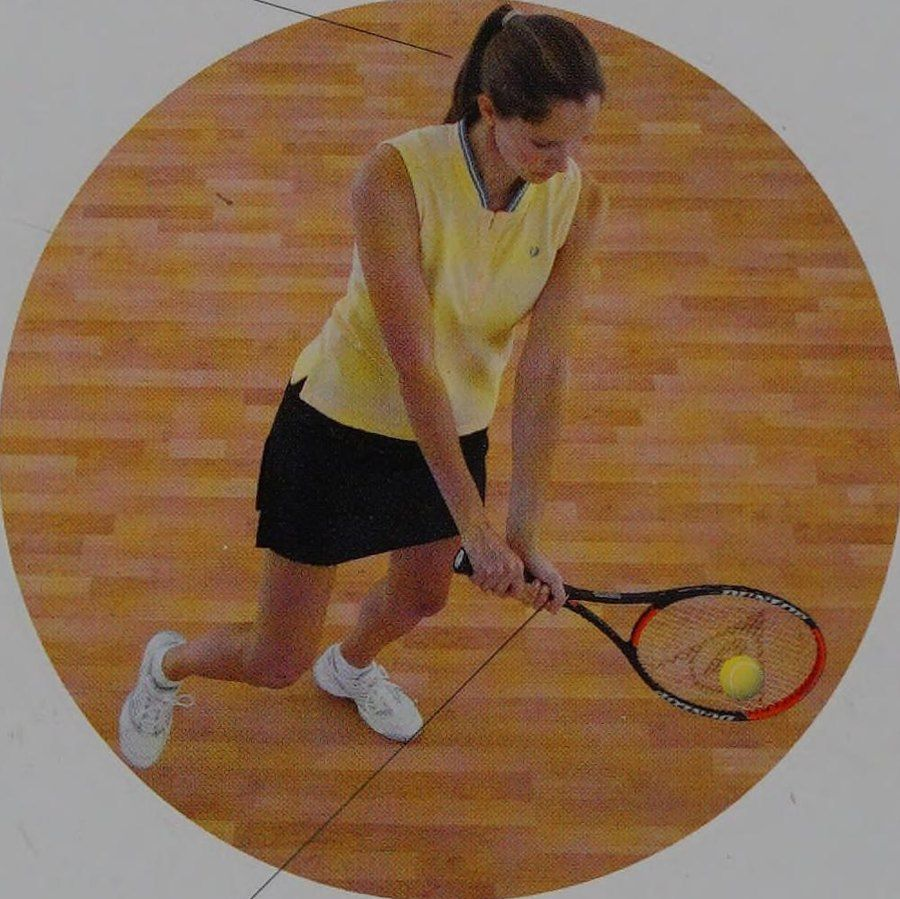
Trái tay tay
Cú lốp bóng xoáy lên
Cú đánh trái tay này có thể là một tay hoặc hai tay. Giống như cú lốp bóng xoáy lên thuận tay (xem trang 100-107), bạn có thể thực hiện cú đánh này khi đối thủ của bạn tiến lên lưới.
Tính thời gian Tất cả các cú đánh thành công trong quần vợt đều dựa vào thời gian hiệu quả. Khi “chờ” bóng đếm từ một đến năm khá nhanh. Đếm “một” khi bóng chạm sàn và “năm” khi bạn đánh vào nó.
Xoáy trên Xoáy trên về cơ bản là khi quả bóng được đánh với hiệu ứng quét lên - khiến nó xoay
Bám chặt về phía trước
Ust hoặc 8 quỹ đạo bằng một tay. Điều này gây ra sự
hoặc bóng trái tay bằng hai tay để nhúng và tiếp đất an toàn
Tại sân đấu.
Sẵn sàng
Hãy chắc chắn rằng bạn tăng tốc về phía sau quả bóng và đạt được độ cao lớn.
Chuẩn bị cho xoáy lên Đứng ở tư thế sẵn sàng với vợt ở phía trước. Ví dụ được sử dụng ở đây là cú lốp bóng trái tay bằng hai tay.
Theo dõi bóng Theo dõi quả bóng khi nó tiến về phía bạn bằng cách đặt nó thẳng hàng với vợt cầm trước mặt bạn.
Theo dõi bóng bằng cách xếp nó thẳng hàng với vợt Giữ của bạn Đầu vẫn còn cưng Từ đây bạn có thể thấy trọng lượng cơ thể bắt đầu chuyển sang phía trái tay.
Trọng lượng cơ thể chuyển sang phía trái tay khi người chơi theo dõi bóng ở phía trước.
Cổ tay được buông ra. Phần thân trên bắt đầu xoay Chú ý cách vợt di chuyển theo bóng phía trước người chơi ở phía trái tay.
Chú ý cách vợt đang theo dõi Hơi ở phía trước người chơi, Với cả hai tay cầm nắm.
Sử dụng cẳng tay để đạt được độ xoáy Backswing Khi bóng nảy lên, hãy thực hiện backswing với thời gian mà bạn có. Hãy chắc chắn rằng tay không thuận của bạn điều khiển vợt.
Lấy một Backswing Bạn có thể ở tư thế mở hoặc đóng, tùy thuộc vào vị trí của bóng.
Mắt của người chơi nhìn vào quả bóng, tập trung vào thời điểm và độ xoáy của cú đánh.
Chú ý phần thân trên đã xoay một cách tự nhiên trong khi thực hiện động tác backswing và người chơi đẩy người xuống sàn.
Hai bàn tay gần nhau trên Tay cầm và phần thân trên có Quay một cách tự nhiên. Đẩy xuống ở tư thế mở Mông vợt đang hướng vào quả bóng
Theo dõi bóng
Khi bạn vung về phía trước, thả lại
vào tư thế lùi khi nhấc bóng.
Giữ lưng thẳng Thả đầu vợt xuống trước khi quét lên mặt sau của quả bóng Trọng lượng rõ ràng dồn lên chân sau của tay vợt khi họ chuẩn bị nhấc bóng.
Giữ đầu của bạn yên Làm việc không Tay thuận Chú ý cách vợt rơi xuống trước khi tăng tốc lên phía sau quả bóng, để có lực nâng và độ xoáy.
Chú ý cách mở mặt vợt Là để nâng quả bóng lên cao Qua đầu đối phương.
Cho phép cơ thể của bạn
Nâng lên một cách tự nhiên Lúc này người chơi chuẩn bị tăng tốc đầu vợt lên phía sau quả bóng để tạo xoáy lên.
Beirett: Sau khi đánh bóng lên, hãy kéo - đầu vợt qua vai đối diện bằng tay không thuận.
Khung vợt vuông góc với vai Khuỷu tay là Ra khỏi ngực và Chỉ về phía trước.
Người chơi đã thực hiện xong cú đánh qua vai nhưng vẫn quan sát bóng, dự đoán cú đánh tiếp theo.
Os. Kết thúc cú đánh với
Một kết thúc vai
Lưu ý trọng lượng cơ thể của người chơi đã chuyển trở lại tư thế mở trong khi kết thúc. Bạn có thể thấy rõ trọng lượng cơ thể bây giờ được chuyển sang tư thế mở khi người chơi kết thúc cú đánh.
Thần chú
Luôn hoàn thành
Chuyên đề 24
Cú Đập Thuận Tay
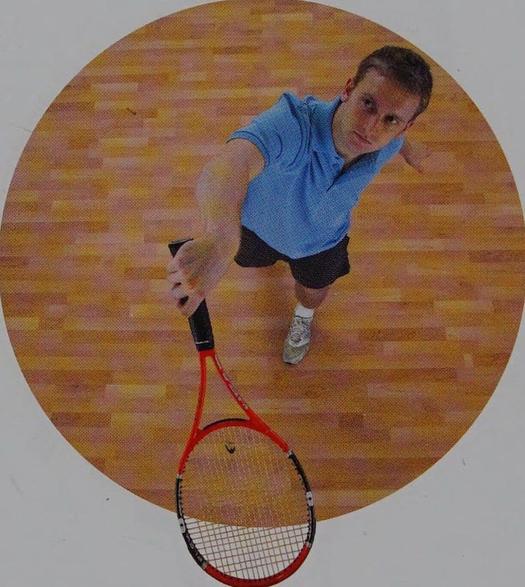
Cú đập thuận tay tay
Nếu bạn ở trên lưới và nhận thấy mình đang ở đầu nhận một cú lốp bóng, thì bạn có thể theo dõi bóng và hạ gục bằng một cú đập mạnh.
Tính thời gian Để hỗ trợ việc tính thời gian, bạn cần theo dõi bóng bằng tay không thuận, như thể bạn sắp bắt bóng.
Cách cầm Tay cầm kiểu lục địa thường được sử dụng cho cú đánh này (xem trang 13).
Hãy sẵn sàng Khi bóng bay lên, hãy theo dõi nó bằng tay không thuận và đánh xuống thật mạnh.
Đánh xuống bằng vũ lực Đứng ở tư thế sẵn sàng với vợt ở phía trước.
Đưa cả hai tay lại với nhau Khi quả bóng được lốp bóng lên, hãy bắt đầu theo dõi nó bằng cách giơ cả hai tay lên nhau.
Khuỷu tay được căn chỉnh Theo dõi và Quan sát quả bóng Chú ý đường thẳng đi từ cánh tay mở rộng đến cánh tay vợt.
Bật bên
Đưa cả hai tay lên cùng nhau
Đưa cả hai cánh tay lên cùng nhau
Tay không thuận chỉ vào bóng;cánh tay vợt bị uốn cong ra sau đầu.
Chú ý phần đầu của vợt Chỉ vào quả bóng.
Giữ của bạn Đầu đứng yên Đứng nghiêng hoàn toàn sang một bên khi bạn theo dõi quả bóng sẽ giúp bạn giữ thăng bằng khi đến lúc phải di chuyển.
Điểm tiếp xúc—t vươn lên trên Vươn lên để đập bóng xuống dưới. Đôi khi bạn có thể rơi khỏi sàn.
Ném đầu vợt và đánh xuống ee Chú ý góc vợt để đánh bóng xuống.
Phần thân trên bắt đầu thư giãn mạnh mẽ Quan sát quả bóng khi bạn đưa tay lên để đánh xuống. Mở rộng lên trên đầy đủ
Người chơi lúc này đã duỗi thẳng hoàn toàn để đánh bóng xuống. Lưu ý góc cổ tay của người chơi. Nó hơi nghiêng về phía trước để “che” quả bóng.
Giữ yên đầu và xem bóng
MANTRA Vươn lên
Búng cổ tay
Khi người chơi đánh quả bóng, bạn có thể thấy cổ tay bị gãy xuống.
Búng cổ tay Đánh xuống để lấy sức.
Phần thân trên đã được cởi trói hoàn toàn
ON MANTRA Chụp bóng xuống
Tay vợt này đã hạ gục quả bóng.
Khi người chơi chạm vào Bóng, cánh tay vẫn thả lỏng.
Không chiếm ưu thế Cân bằng dụng cụ hỗ trợ cầm tay Ye Người chơi tiếp tục Amaaeeees §để xem bóng.
Sau cú đập, vợt có xu hướng kết thúc ở phía đối diện, ở độ cao ngang eo.
Vợt: tại chiều cao ngang lưng Khung vợt vuông góc với mặt sàn Người chơi đã chọn bước tiến về phía trước, có thể lùi vào lưới.
Tiếp tục theo dõi bóng Sau cú đập, người chơi luôn tỉnh táo và sẵn sàng xử lý cú đánh tiếp theo.
Lưu ý đầu vợt bao quanh phía đối diện của người chơi, ở độ cao ngang eo.
Bạn có thể thấy rõ người chơi
Vợt kết thúc khi anh ta tiến lên
Xuống sân đấu.
Thần chú
Hãy sẵn sàng cho lần chụp tiếp theo
Chuyên đề 25
Cú Đập Trái Tay
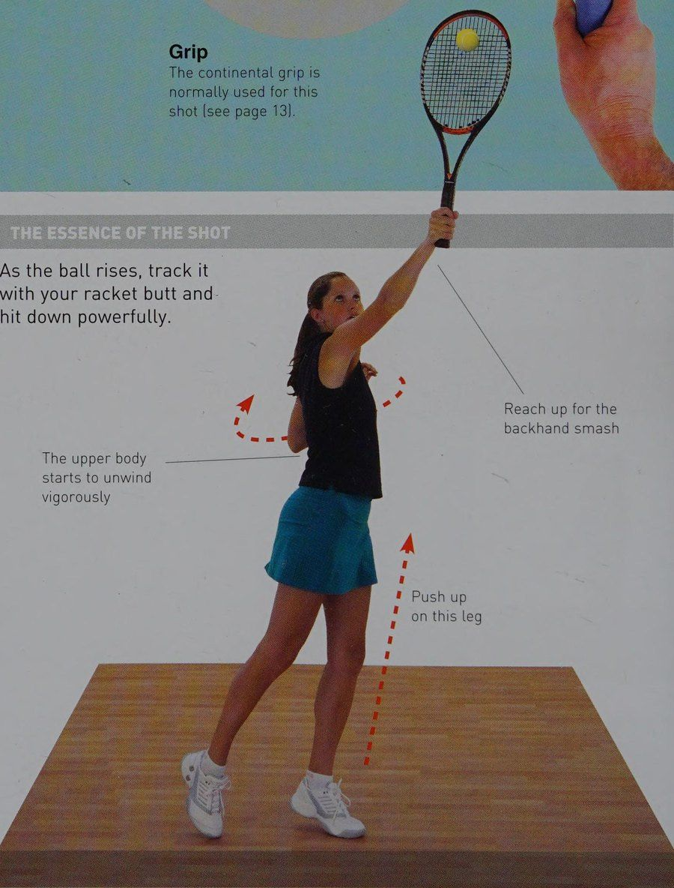
Cú đập trái tay tay
Chỉ đánh cú đánh này nếu bạn không có thời gian di chuyển xung quanh để đánh cú đập thuận tay (xem trang 114-119).
Tính thời gian Để giúp bạn tính thời gian, hãy theo dõi quả bóng bằng cách hướng mông vợt vào nó, Cách cầm Cách cầm kiểu lục địa thường được sử dụng cho cú đánh này [xem trang 13).
Hãy sẵn sàng
Khi quả bóng bay lên, hãy theo dõi nó bằng mông vợt của bạn và đánh xuống thật mạnh.
Phần thân trên bắt đầu thư giãn mạnh mẽ Đứng ở tư thế sẵn sàng với vợt ở phía trước.
Vươn lên để thực hiện cú đập trái tay Anh ấy bóng Khi quả bóng được lốp bóng lên, hãy bắt đầu theo dõi nó bằng cách hướng mông vợt vào quả bóng.
Giữ của bạn Đầu đứng yên Trọng lượng cơ thể nghiêng về phía trái tay, với khuỷu tay hướng lên trên.
Xoay phần thân trên Người chơi tiếp tục quan sát bóng cẩn thận.
Đồng nghiệp
Trỏ vợt
mông vào bóng Tay không thuận đỡ họng vợt khi mặt người chơi là Mem, = theo dõi bóng.bộ điều khiển mở hoàn toàn Bạn có thể thấy rõ mông vợt hướng lên trên. Thần chú Hướng mông vợt Điểm tiếp xúc — vươn lên trên Vươn lên để đập bóng xuống dưới.
Đánh bóng phía trên tâm vợt Giữ đầu cố định Chú ý góc vợt để đánh bóng xuống.
Phần thân trên thả lỏng mạnh mẽ
MANTRA Vươn lên
Mở rộng hoàn toàn lên trên Người chơi lúc này đã duỗi thẳng hoàn toàn để đánh bóng xuống.
Lưu ý góc nhìn của người chơi Cổ tay. Nó hơi nghiêng về phía trước Để “che” quả bóng.
Kéo đầu vợt xuống Xem bóng khi bạn đưa tay lên để đánh xuống.
Khi bạn đập, hãy siết chặt hai xương bả vai của bạn lại với nhau để có được sức mạnh. Bạn có thể thấy rõ vai của người chơi đang co lại.
Kéo xuống và ngang qua Sau khi đập bóng, người chơi liên tục theo dõi bóng để đoán trước cú đánh tiếp theo.
Siết chặt đôi vai vào nhau Bạn có thể thấy người chơi đã đánh xuống và ngang qua quả bóng, và bả vai của cô ấy giờ đã bị ép lại với nhau.
Tiếp tục theo dõi bóng Chú ý vị trí vợt của người chơi khi cô ấy đã đánh xuống và đánh ngang.
Cơ thể đã được giải thoát hoàn toàn
MANTRA Bóp vai của bạn; đánh xuống và vượt qua
Chuyên đề 26
Vô-lê Tấn Công Thuận Tay
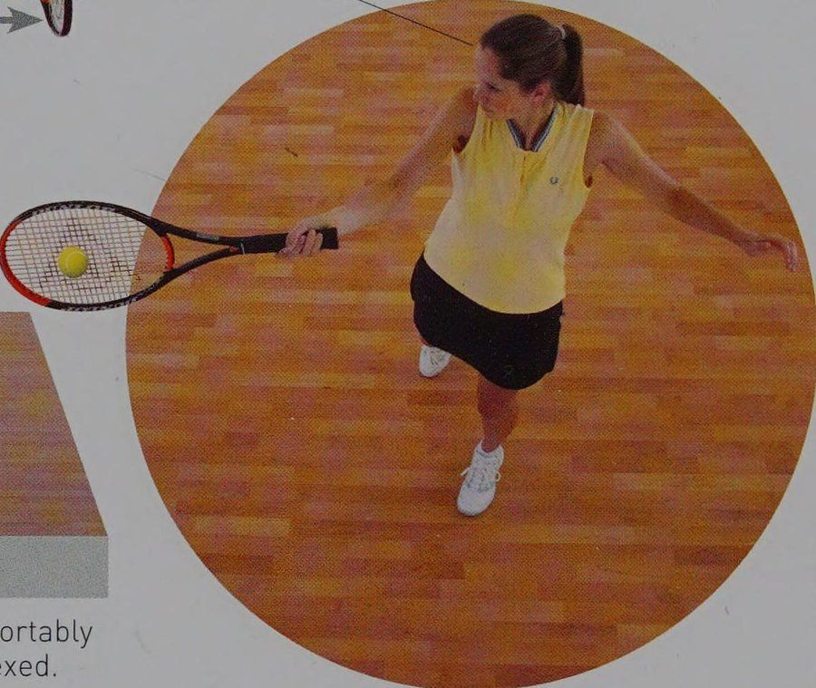
Cú công bóng thuận tay tay
Cú vô lê
Cú đánh này được thực hiện khi một tay vợt tiến lên từ đường cuối sân để đưa bóng ra khỏi không trung trước khi nó nảy lên do tiếp xúc xoáy lên. Nó có tính hung hãn cao và có thể được sử dụng ở cả phía thuận tay và phía trái tay.
Thời gian— Đếm “một” khi đối phương chạm bóng và đánh bóng khi đếm “năm”.
Cách cầm Sử dụng cách cầm mà bạn thường sử dụng cho cú thuận tay xoáy lên (xem trang 18).Đây là một kiểu cầm vợt bán tây.
Khi quả bóng bay lên, theo dõi quả bóng và đưa nó lên không trung bằng một cú tiếp xúc xoáy lên.
Đứng ở tư thế sẵn sàng với vợt ở phía trước.
Theo dõi bóng Theo dõi bóng ở độ cao phù hợp, trong trường hợp này là cao ngang vai, với vợt được giữ ở phía trước bạn.
Hãy uốn cong vợt của bạn nghiêng về phía trước khi bóng di chuyển trong khi được đỡ bởi tay không thuận.
Khi người chơi theo dõi và di chuyển Về phía quả bóng, không Cánh tay thuận được định vị Khắp cơ thể.
Cae Theo dõi bóng bằng cách
Xếp nó với vợt
Vợt được đỡ bằng cả hai tay trong khi vợt hơi hướng về phía quả bóng. Cơ thể nghiêng về phía thuận tay khi người chơi di chuyển tự nhiên về phía bóng.
Thân trên bắt đầu xoay
Người chơi đếm “một” khi đối thủ của cô ấy đánh bóng. Sau đó, cô ấy thực hiện động tác vung vợt ra sau, giữ cho cánh tay và cách cầm vợt được thư giãn. Giữ cánh tay uốn cong Mặt vợt nghiêng về phía người chơi do cổ tay bị buông ra.
Phần thân trên đã xoay hoàn toàn Tư thế cởi mở
Khi thực hiện động tác backswing, tay không thuận giữ nguyên cơ thể và tiếp tục
Để theo dõi bóng.
Mặt vợt quay đi Cổ tay vẫn buông ra Vợt được đỡ phía trên bàn tay với cổ tay buông ra. Cánh tay thuận được uốn cong và thư giãn.
Trọng lượng cơ thể bị đẩy
Xuống chân ngoài vào
Một tư thế cởi mở.
Thần chú
Theo dõi bóng
Địa chỉ liên hệ hiển thị ở đây cao ngang vai. Sự tiếp xúc được thực hiện với bóng thông qua hiệu ứng vuốt từ thấp đến cao để tạo ra xoáy lên.
Kéo lên và ngang qua quả bóng a Điểm tiếp xúc ở phía trước thoải mái với khuỷu tay gập lại. Đầu vợt lúc này sẽ tăng tốc hướng lên trên.
Giữ đầu của bạn yên Giữ cánh tay hơi cong Mặt vợt vuông vức, đầu vợt hơi cụp xuống phía dưới tay. Cơ thể được giữ thẳng.
Nâng thẳng đứng. Eisen
Mặt vợt là hình vuông Đầu vợt vuông vắn trên quả bóng nhưng đầu chỉ hơi cụp xuống phía dưới tay một chút.
Cơ thể đã đẩy lên và Tư thế vẫn mở.
Phần thân trên đang thư giãn mạnh mẽ Tư thế cởi mở Kết thúc Khi bạn vượt qua quả bóng, hãy kết thúc qua vai của bạn.
Khung vợt vuông góc với mặt sàn Khuỷu tay của cánh tay thuận hướng thẳng về phía trước.
Tiếp tục theo dõi bóng
Phần thân trên được cởi hoàn toàn. Mông vợt và khuỷu tay hướng về phía trước. Người chơi vẫn theo dõi bóng, dự đoán cú đánh tiếp theo.
Là vai
Hoàn thành
Đầu vợt qua vai, trọng lượng cơ thể được chuyển sang chân đối diện để hỗ trợ phục hồi. Đầu vợt qua vai đối diện, tay không thuận ngang với má.
Thần chú
Luôn hoàn thành cú đánh
Chuyên đề 27
Vô-lê Tấn Công Trái Tay Một Tay
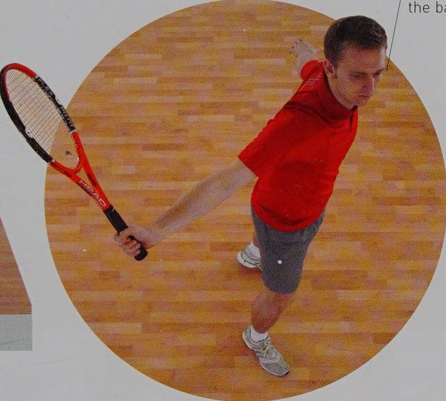
Cú vô lê trái tay bằng một tay
Cú đánh này được thực hiện khi một tay vợt tiến lên từ đường cuối sân để đưa bóng ra khỏi không trung trước khi nó nảy lên do tiếp xúc xoáy lên. Nó cao quá!
Và có thể
Được sử dụng trên cả hai thứ
Rất hung hãn và có thể được sử dụng ở cả bên thuận tay và bên trái tay.
Thời gian Đếm “một” khi đối phương chạm bóng và đánh bóng theo số “năm”.Khi quả bóng bay lên, theo dõi quả bóng và đưa nó lên không trung bằng một cú tiếp xúc xoáy lên.
Cách cầm Sử dụng kỹ thuật cầm vợt trái tay mare cule eae eas foa (xem trang 33).
Giữ đầu Masry của bạn đứng yên
Bánh ngọt Phần thân trên đã được cởi trói hoàn toàn Kéo qua quả bóng
Theo dõi bóng Tìm cách cầm vợt của bạn và theo dõi bóng bằng cách hướng mông vợt về phía nó.
Trỏ vào
Mông vợt
Sau khi đếm từ “một” đến “năm”, hãy kéo bóng lên và ngang qua khi bạn đạt đến “năm”.
Kéo lên và Qua phía sau Của bóng Tay vợt nâng người lên khi tiếp xúc với bóng ở phía trước.
Tay vợt xem bóng Chăm chú khi anh ấy kéo dây Ngang qua quả bóng.
Tay không thuận được thả ra và đầu vợt ngang bằng với tay người chơi.
Tại điểm tiếp xúc, mặt vợt
Là hình vuông chống lại quả bóng.
Kết thúc
Sau khi kéo ngang bóng, đầu vợt kết thúc ngang thân vợt. Xương bả vai được ép chặt vào nhau để tạo ra năng lượng. Cả hai tay kéo về phía sau người chơi.
Phần thân trên đã hoàn toàn được cởi trói
Người chơi đã bắn xong, nhưng anh ấy vẫn xem bóng,
Dự đoán cú đánh tiếp theo.=
Cú dứt điểm “ép bả vai” Xương bả vai của người chơi đã ép vào nhau để tạo ra lực.
Tiếp tục quan sát bóng Vợt kết thúc ở tư thế thẳng đứng, hướng ra ngoài. MANTRA Bóp hai bả vai lại với nhau
Chuyên đề 28
Vô-lê Tấn Công Trái Tay Hai Tay
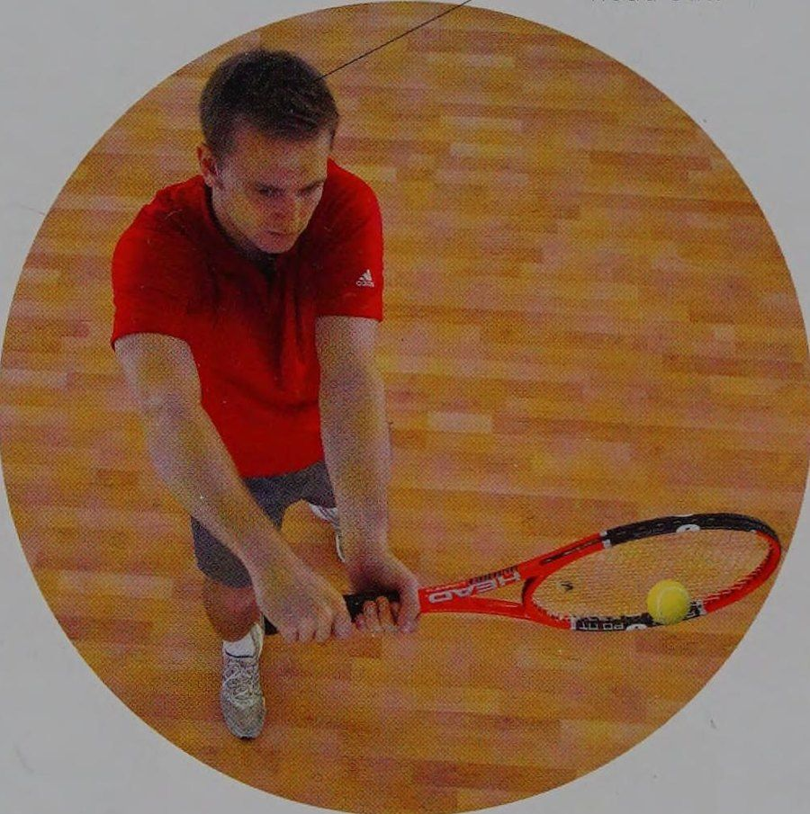
- trái tay tay bằng hai tay
Lái vô-lê
Nếu bạn có xu hướng chơi trái tay bằng hai tay, có thể bạn sẽ thích sử dụng cả hai tay trong cú vô lê công của mình. Giống như các cú công bóng thuận tay và trái tay bằng một tay (xem trang 126-135), cú đánh này được thực hiện khi một tay vợt tiến lên từ đường cuối sân để đưa bóng ra khỏi không trước khi nó nảy lên do tiếp xúc xoáy lên. Nó rất hung dữ.
Thời gian Đếm “một” khi đối phương chạm bóng và đánh bóng theo số “năm”.
Cách cầm vợt Sử dụng tay cầm như bình thường Sử dụng cho cú xoáy lên bằng hai tay Trái tay (xem trang 26).
Khi quả bóng bay lên, hãy theo dõi quả bóng
Theo dõi bóng
Và đưa nó lên không trung bằng một cú tiếp xúc xoáy lên
Rory Theo dõi quả bóng bằng cách xếp nó thẳng hàng với
Kéo lên và
Vợt ở phía trước của cơ thể.
Giữ đầu bạn yên nhé
Ngang qua quả bóng Cơ thể đã xoay \ Phần thân trên bắt đầu thư giãn mạnh mẽ
Điểm liên lạc
Việc tiếp xúc được thực hiện ở số EHT “năm” bằng cách kéo quả bóng ở giữa không trung.
Kéo qua quả bóng Đẩy lên A từ chân trước số 8 của bạn. Tay vợt nâng cơ thể của mình lên khi tiếp xúc với quả bóng ở phía trước.
Phần thân trên là = an c=
Thư giãn mạnh mẽ Vợt khá vuông ở điểm tiếp xúc với (ams quả bóng. Các dây là Brj-niv} kéo ngang quả bóng. Sininamiaainmaatee
Đầu vợt hơi ở dưới tay khi tiếp xúc khi người chơi kéo đầu vợt ngang.
Giữ đầu của bạn yên Mặt vợt vừa tầm với tay.
Mặt vợt vuông vức khi tiếp xúc
Sự kết thúc':
Sau khi kéo ngang bóng, đầu vợt được kéo lên qua vai đối diện bằng tay không thuận.
Tiếp tục xem Bóng Khi vợt đã bay qua vai, hãy chú ý cách khuỷu tay rời khỏi ngực và hướng về phía trước.
Phần thân trên được thả lỏng hoàn toàn. Tay vợt đã thực hiện xong cú đánh qua vai nhưng vẫn quan sát bóng, dự đoán cú đánh tiếp theo.
.ee ine Vai Trọng lượng cơ thể của người chơi lúc này đã được chuyển trở lại phía đối diện.
Vợt kết thúc ở phía trên Vai khi người chơi kết thúc Cú sút.
Thần chú
Luôn hoàn thành
Phần II · Luật Lệ & Nghi Thức
Learning the Ropes
Chuyên đề 29
Bắt Đầu Chơi
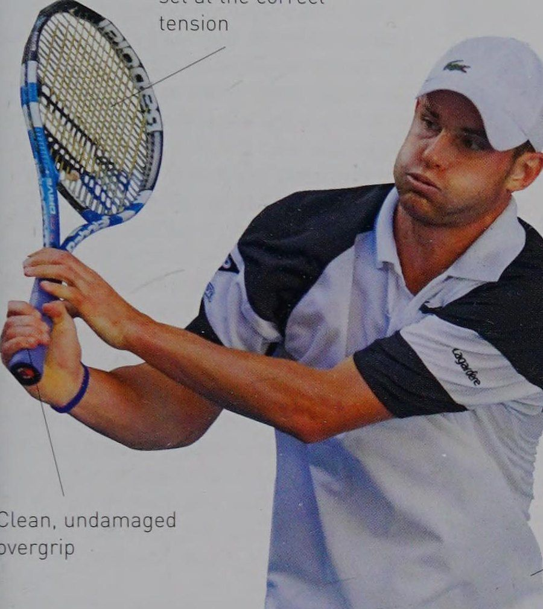
Bắt đầu
Bạn không cần phải chi quá nhiều tiền để bắt đầu chơi quần vợt, nhưng có một số vật dụng cần thiết vì lý do thực tế và một số vật dụng sẽ giúp bạn cảm thấy thoải mái trên sân.
Quả bóng tennis
Luôn chơi với những quả bóng tennis chất lượng tốt. Sau một thời gian, quả bóng sẽ xẹp xuống, nhưng đừng cố tiếp tục chơi với chúng. Chơi với những quả bóng phẳng có thể gây ra chứng đau khuỷu tay quần vợt, trong khi việc tập luyện với những quả bóng này sẽ không giúp ích gì cho trận đấu của bạn. Hoặc vứt chúng đi hoặc đưa chúng cho con chó.
Giữ tóc không rối bằng dây buộc tóc
Quần áo
Váy tennis một mảnh là một lựa chọn thoải mái
Quần áo tennis nên rộng rãi và được làm từ chất liệu nhẹ. Áo sơ mi polo, áo phông hoặc áo vest là lý tưởng. Cả hai giới đều có thể mặc quần short, trong khi các tay vợt nữ cũng có thể lựa chọn mặc váy tennis hoặc váy tennis liền thân.
Tất nên được làm bằng khăn bông để thấm mồ hôi và hỗ trợ đệm cho bàn chân.
Khi bắt đầu buổi tập, bạn nên mặc bộ đồ thể thao hoặc áo nỉ cho đến khi cơ bắp ấm lên, đồng thời đừng quên khởi động và giãn cơ đúng cách trước khi chơi và thư giãn khi chơi xong.
Quy định trang phục Một số câu lạc bộ quần vợt tư nhân có quy định nghiêm ngặt về trang phục, vì vậy hãy đảm bảo bạn tìm hiểu những quy định này trước khi ra sân.
Vợt hợp chất than chì mạnh mẽ nhưng nhẹ để chơi Serena Williams, Mỹ, thế giới Số một.
, Quần vợt chất lượng tôigiày sẽ có/đầy đủ Đệm
Vợt và túi đựng vợt
Trên thị trường hiện nay có rất nhiều thương hiệu vợt tốt, trong đó có nhiều kích cỡ khác nhau dành cho lứa tuổi thiếu niên. Kích thước bắt đầu từ 58cm (21in) dành cho trẻ từ 4 đến 5 tuổi và tăng lên đến 69cm (27in) đối với người lớn. Kích thước vợt bạn chọn được quyết định dựa trên cảm giác và sự thoải mái của mỗi người.
Tay cầm cũng có nhiều kích cỡ khác nhau. Để được tư vấn về kích thước tay cầm bạn cần tham khảo ý kiến của huấn luyện viên chuyên nghiệp Hoặc một cửa hàng quần vợt chất lượng. Nếu tay cầm hiện tại của bạn bị mòn hoặc quá nhỏ, bạn có thể dễ dàng mua tay cầm hoặc tay cầm thay thế.
Khi bạn mới bắt đầu chơi, một cây vợt là lý tưởng, nhưng khi bạn chơi nhiều hơn và bắt đầu đánh bóng mạnh hơn khi bạn tiến bộ hơn, bạn sẽ cần đầu tư vào một cây vợt khác giống hệt, đảm bảo rằng nếu một cây vợt bị gãy trong trận đấu.
Dây vợt bền được đặt ở độ căng chính xác ‘ Tránh ánh nắng vào mắt và đầu bạn bằng một chiếc mũ sáng màu Vỏ bọc sạch sẽ, không bị hư hại Áo thun polo Var rộng rãi và quần short giúp bạn dễ dàng di chuyển Andy Roddick, Mỹ, cựu số một thế giới.
Hỗ trợ mắt cá chân cung cấp thêm sự ổn định bạn có người thay thế ở chế độ chờ. Những người chơi hàng đầu có thể có tới tám cây vợt, mặc dù họ thường có hợp đồng tài trợ và do đó không phải trả tiền cho chúng. Hầu hết các huấn luyện viên hoặc cửa hàng quần vợt đều có thể nối lại dây bị đứt.
Đầu tư một chiếc túi đựng vợt có kích thước vừa phải cũng là một ý tưởng hay, giúp bạn có thể mang theo tất cả các thiết bị của mình trong một chiếc túi.
Bảo vệ khỏi
Mặt trời và sức nóng
Khi thời tiết nắng nóng, bạn nên tự bảo vệ mình bằng mũ bóng chày, kính râm thể thao, băng thấm mồ hôi và kem chống nắng, đồng thời thường xuyên lau khô người. Uống nhiều nước để giữ cho cơ thể đủ nước.
Đôi giày
Phải mang giày tennis tốt. Những thứ này phải bao gồm đệm vừa đủ và hỗ trợ bàn chân cũng như mắt cá chân của bạn khi bạn chạy và xoay người. Hỗ trợ mắt cá chân cung cấp thêm sự ổn định nếu cần thiết.
Độ bám của giày phải phù hợp với bề mặt bạn sẽ chơi. Hầu hết giày tennis đều có đế cao su nhẹ và đế cao su hình zigzag, mặc dù giày chuyên dụng được thiết kế để chơi trên thảm trong nhà có đế hoàn toàn trơn tru.
Hãy chuẩn bị
Chuyên đề 30
Cách Tính Điểm
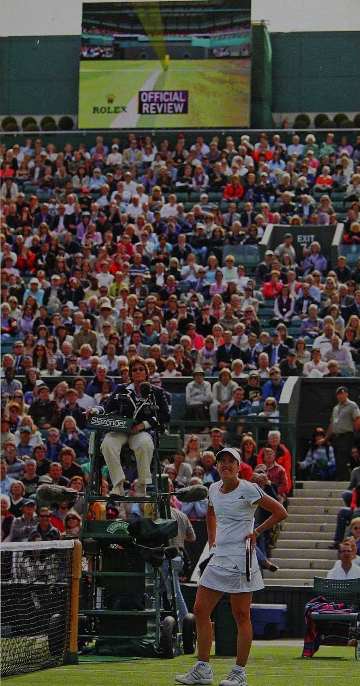
Ghi điểm
Tính điểm quần vợt được chia thành các trận đấu, hiệp đấu, trận đấu và điểm._ Một bộ bao gồm một số trò chơi được chỉ định, để giành chiến thắng trong trận đấu
Người chơi phải thắng một số set cụ thể.
Trận đấu
Trò chơi và điểm
Để thắng cả một trận quần vợt, thông thường bạn phải thắng trong ba set. Tuy nhiên, trong các giải đấu lớn như Wimbledon, Úc mở rộng, Mỹ mở rộng và Pháp mở rộng, nam chơi những hiệp đấu hay nhất.
Nếu bạn là người chơi giải trí, bạn có thể chơi ít hoặc nhiều hiệp tùy thích. Trong khi bạn có thể phải ghi nhớ điểm số thì các chuyên gia lại tận hưởng sự sang trọng của bảng điểm điện tử lớn.
Để thắng một trò chơi, người chơi phải giành được bốn điểm (trừ trường hợp thua).Cả hai người chơi đều bắt đầu bằng con số 0, hay còn gọi là “tình yêu”.Điểm đầu tiên đưa người chơi lên 15, điểm thứ hai lên 30, điểm thứ ba lên 40 và điểm tiếp theo là “trò chơi”.
Tuy nhiên, nếu điểm đạt tới 40-40 thì đó là “hòa 40-40”.Từ đây, người chơi cần giành được hai điểm rõ ràng - mang lại cho anh ta “lợi thế” và sau đó là “trò chơi”.Nếu người chơi có lợi thế bị mất điểm tiếp theo, điểm số sẽ trở lại thành hòa 40-40. Tỷ số có thể thay đổi qua lại cho đến khi người chơi giành được điểm tiếp theo sau lợi thế của mình.
Việc thay đổi lượt chơi kết thúc sau mỗi số lẻ ván chơi. Ví dụ: nếu tỷ số là 3-2, bạn sẽ đổi bên nhưng vẫn giữ tỷ số là 2-2.
Bộ
Để thắng một set, người chơi phải thắng sáu game, mặc dù họ cũng phải thắng set đó ít nhất hai game rõ ràng. Do đó, nếu tổng điểm là năm ván trong một hiệp, trận đấu sẽ tiếp tục cho đến khi một đấu thủ thắng 7-5.
Nếu tỷ số là 6-6 thì phải thi đấu loạt đánh quyết định. Người chơi đầu tiên đạt được bảy điểm sẽ thắng loạt đánh quyết định. Tuy nhiên, người chơi phải giành được hai điểm rõ ràng. Nếu tổng số điểm loạt đánh quyết định là sáu điểm thì trận đấu tiếp tục cho đến khi một đấu thủ dẫn trước hai điểm rõ ràng. Trong thời gian loạt đánh quyết định, người chơi thay đổi kết thúc sau mỗi sáu điểm đã chơi.
Trong một giải đấu chuyên nghiệp, nếu các tay vợt đang chơi hiệp cuối cùng trong một trận đấu, họ có thể phải chơi một hiệp dài. Điều này có nghĩa là không có loạt đánh quyết định trong set cuối cùng, do đó trận đấu sẽ tiếp tục cho đến khi một tay vợt thắng hai game rõ ràng.
Gọi điểm
Khi gọi điểm, điểm của người giao bóng luôn được gọi trước, bất kể điểm của họ là bao nhiêu. Ví dụ: nếu người chơi A giao bóng và giành được điểm trước người chơi B, điểm số sẽ được gọi là “15love”.Nếu người chơi B thắng điểm thì số điểm được gọi là “love-—15”
Nếu tại bất kỳ thời điểm nào, điểm số của cả hai người chơi bằng nhau với 15 hoặc 30, thì điểm được gọi là "15 tất cả' hoặc "30 tất cả". Nếu tỷ số hòa là 40-40, "hòa 40-40" được gọi. Nếu người chơi A thắng điểm tiếp theo, điểm đó được gọi là "người chơi có lợi thế A'.Nếu người chơi A giành được điểm tiếp theo thì họ sẽ thắng trò chơi đó. Tuy nhiên, nếu người chơi B thắng điểm đó, điểm sẽ trở lại thành hòa 40-40.
Justine Henin thách thức cuộc gọi tại Wimbledon bằng cách sử dụng Hawk-Eye, hệ thống thực tế ảo được sử dụng trong nhiều giải đấu.
Tìm hiểu sự phức tạp của việc tính điểm bằng cách chơi trò chơi
Af Me
Chuyên đề 31
Luật Giao Bóng & Loạt Đánh Qua Lại
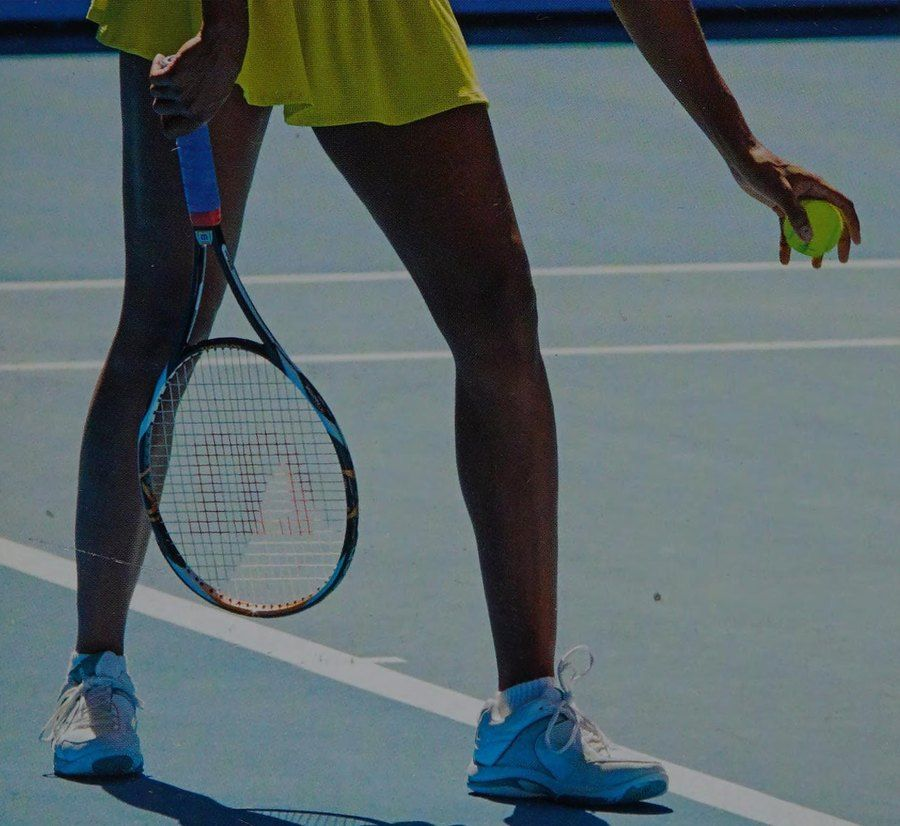
Tức là vào đêm trước, sự trở lại của giao bóng
- cơ hội của ag giống nhau: Là sucith's, tôi may mắn được tuyệt đối yl.a.: -
Làm thế nào các điểm có thể diễn ra
Giao bóng
Tập hợp
Điểm đầu tiên của trò chơi được giao Tấn công giao bóng. Đây được biết đến như một Sau khi giao bóng thành công, Từ phía bên phải của sân đấu.các “lỗi chân”
Đối thủ phải cố gắng trả lại Người chơi đứng sau đường cuối sân Nếu một cú giao bóng chạm đỉnh của Bóng qua lưới sau một lần nảy Và giao bóng theo đường chéo, sao cho bóng Lưới nhưng vẫn đi đi vào lại đúng Và hạ cánh nó trong giới hạn của Nảy vào ô giao bóng của đối phương.
Hộp dịch vụ, “lưới” được gọi và Sân đấu đơn. Khu vực giữa Nếu quả giao bóng rơi ra ngoài quả giao bóng Máy chủ sẽ thử giao bóng khác nhưng hai đường xe điện được coi là “ngoài” đối với
Hộp, hoặc chạm lưới và không đi được Sẽ không bị lỗi. Đây được biết đến như một đơn (xem trang tiếp theo để biết nội dung đôi
Kết thúc, “lỗi” được gọi và người giao bóng “giao bóng đầu tiên”.Người chơi có thể tiếp tục làm các biến thể của quy tắc).
Được phép thực hiện một lần thử khác, được gọi là Điều này nhiều lần và không bao giờ bị lỗi.
Sau đó, mỗi người chơi phải trả lời “giao bóng thứ hai”.Tuy nhiên, liệu có nên Tuy nhiên, nếu cú giao bóng chạm tới Theo cách tương tự. Chỉ một lần thoát là Người chơi cũng bỏ lỡ cú giao bóng này, “gấp đôi Lưới và đất bên ngoài hộp dịch vụ, Được phép trước khi người chơi phải đánh Lỗi” được gọi và điểm được trao Máy chủ sẽ bị lỗi như bình thường.
Quả bóng. Tuy nhiên, người chơi cũng có thể đánh Tới người trở về. Máy chủ cũng sẽ Nếu bóng chạm lưới trong một loạt đánh qua lại, Bóng trước khi nảy. Là một người chơi, bạn Lỗi nếu một hoặc cả hai chân của họ chạm hoặc vượt qua đường biên ngang trước khi họ Tuy nhiên, người chơi phải chơi tiếp.
không được đánh bóng nhiều lần để phá lưới; để bóng chạm vào bất kỳ bộ phận nào của bạn trong loạt đánh qua lại;hoặc đánh bóng xuống phần sân của bạn trước khi bóng đi qua lưới.
Khi một tay vợt trả bóng không thành công, họ sẽ thừa nhận điểm.
Người chơi chuẩn bị giao bóng bằng cách nảy bóng trước, giúp người chơi tập trung và bình tĩnh.
Trận đấu qua lưới dài nhất trong một giải đấu: 643 lần qua lưới giữa Vicki Nelson và Jean Hepner tại Richmond, Virginia, Mỹ, vào tháng 10 năm 1984.
Các biến thể của quy tắc nhân đôi
Trong một trận đấu đôi, nếu bạn chọn giao bóng ở ván đầu tiên, quả giao bóng sẽ được chuyển cho một trong các đối thủ của bạn để giao bóng ở ván tiếp theo, sau đó đối tác của bạn sẽ giao bóng ở ván tiếp theo và đối thủ thứ hai của bạn sẽ giao bóng ở ván tiếp theo. Sau thời gian đó, dịch vụ sẽ quay trở lại với bạn một lần nữa. Bạn phải tuân theo thứ tự này trong suốt bộ phim.
Khi bắt đầu hiệp tiếp theo, bạn có thể thay đổi thứ tự với đối tác của mình nếu muốn.
Khi quay về, một khi bạn đã quy định được bên mình sẽ về thì đó là bên mà bạn phải quay về trong suốt lượt quay đó. Khi bắt đầu hiệp tiếp theo, bạn có thể thay đổi với đối tác của mình nếu muốn.
Trong các trận đấu đôi, khu vực giữa các đường xe điện được coi là "trong" trong một cuộc giao bóng nhưng không phải để giao bóng.
Hoàn thành trò chơi
Sau khi giành được điểm đầu tiên, người giao bóng sẽ giao bóng từ phía bên trái và giao bóng chéo sang ô giao bóng đối diện. Điểm tiếp tục được tính như vậy cho đến khi có một người chơi thắng ván thì người chơi quay lại sẽ lần lượt giao bóng.
Người giao bóng nhanh nhất: Andy Roddick người Mỹ, Vladimir Voltchkov của Belarus tại Davis Cup vào tháng 9 năm 2004.
Nicolas Kiefer thực hiện cú trái tay bằng hai tay.
Quần vợt xe lăn Luật chơi của môn thể thao xe lăn của Liên đoàn quần vợt quốc tế (ITF) cũng tương tự như trên, ngoại trừ việc bóng được phép nảy hai lần. Các tay vợt có xe lăn được thiết kế đặc biệt để giúp họ di chuyển quanh sân.
Chuyên đề 32
Phép Lịch Sự Trên Sân
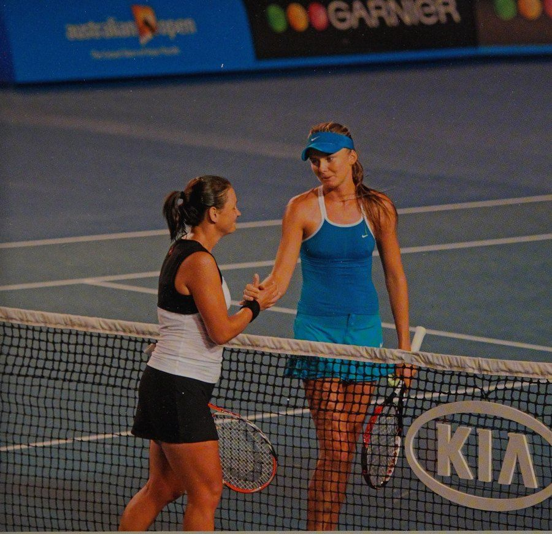
Nghi thức sân đấu
Quần vợt là môn thể thao có tính cạnh tranh cao và đôi khi cảm xúc và tâm trạng có thể tăng cao. Cố gắng tỏ ra duyên dáng nhất có thể, nhưng đừng để đối thủ của bạn bước qua bạn bằng cách gọi điểm số và pyar ulig‘ cuộc gọi đường dây của bạn.
Bắt đầu trò chơi đầu tiên
Xoay vợt là cách thông thường để quyết định ai sẽ giao bóng ở game đầu tiên trong trận đấu. Sử dụng các nút thắt trên dây làm hướng dẫn. Mặt có các nút hướng lên trên được gọi là mặt “thô”, còn mặt đối diện được gọi là mặt “mịn”.Các biến thể khác có thể được sử dụng, chẳng hạn như hướng mô típ thương hiệu của vợt.
Yêu cầu đối thủ chọn một bên, sau đó xoay vợt. Bất cứ ai thắng tung có thể quyết định giao bóng đầu tiên hay thứ hai hoặc chọn đầu nào để chơi trước, nhưng không phải cả hai. Ví dụ: nếu bạn thắng trò tung bóng, bạn có thể chọn giao bóng trước. Sau đó, đối thủ của bạn có thể chọn bắt đầu từ đầu nào. Quyết định này có thể rất quan trọng khi chơi ngoài trời. Một lựa chọn tốt sẽ là chơi ngoài nắng trong ván đầu tiên nếu có thể, vì thực tế là bạn sẽ chơi ngoài nắng trong hai ván tiếp theo.
Gọi đường dây
Khi thi đấu một trận giao hữu hoặc một vài vòng đầu tiên của giải đấu, các tay vợt có trách nhiệm gọi cả điểm số và đường dây vì không có trọng tài giám sát trận đấu. Thông thường, bạn sẽ đánh giá những cú đánh của đối thủ và họ sẽ đánh giá những cú đánh của bạn. Trong trường hợp này hãy cố gắng công bằng nhất có thể. Nếu cú sút của đối thủ trúng đích, hãy giữ im lặng và chỉ đánh bóng lại. Nếu bạn đánh giá cú đánh là ngoài thì
NHỚ
Nếu bất kỳ phần nào của
Bóng chạm vào
Dòng, nó ở trong
Bạn phải gọi nó ngay khi bóng nảy lên, với giọng rõ ràng để đối thủ có thể nghe thấy.
Mỗi người có thể đặt câu hỏi về các cuộc gọi đường dây của nhau và nếu không đồng ý, bạn có thể chỉ cần chơi lại điểm đó, mặc dù thông thường người chơi đã đưa ra phán quyết ban đầu có quyết định chơi lại hoặc giữ nguyên, do đó, yếu tố tùy ý nên được sử dụng ở đây.
Luôn rèn luyện tinh thần thể thao tốt: không giao bóng cho đến khi đối thủ của bạn sẵn sàng [khi họ đứng ở tư thế sẵn sàng đối mặt với bạn);khi kết thúc trận đấu, hãy luôn bắt tay đối thủ của bạn - dù thắng hay thua - và trọng tài, nếu có.
Phần III · Chiến Thuật Thi Đấu
Tactics
Chuyên đề 33
Chiến Thuật Giao Bóng
Giao bóng chiến thuật
Giao bóng là một trong những cú đánh quan trọng nhất trong trò chơi. Nếu bạn không thành thạo nó, bạn sẽ trao điểm rẻ cho đối thủ bằng cách phạm lỗi kép hoặc tạo ra những cú giao bóng yếu khiến đối thủ phải tấn công. Tuy nhiên, nếu bạn có thể làm chủ được vị trí và tốc độ giao bóng nhanh, bạn sẽ thực sự sợ hãi.
Vị trí
Đặt bóng tốt là khía cạnh quan trọng nhất của việc giao bóng. Tốc độ - bạn đánh bóng mạnh đến mức nào - chắc chắn cũng quan trọng, nhưng học cách đặt bóng sẽ không chỉ tăng cơ hội đưa bóng vào ô giao bóng mà còn cho phép bạn giao bóng thường xuyên về phía yếu hơn của đối thủ, do đó buộc họ phải trả bóng một cách yếu ớt, nếu có.
Tuy nhiên, nếu bạn tiếp tục giao bóng sang một bên, đối thủ của bạn sẽ trở nên khôn ngoan. Nếu bạn không sở hữu một cú giao bóng mạnh mẽ sẽ tạo ra một số lượng lớn quân Át (điểm giành được chỉ bằng cú giao bóng), việc giao 90% số cú giao bóng của bạn cho bên yếu hơn của đối thủ là một ý tưởng hay. Bạn cũng có thể giao bóng cho bên mạnh hơn vào cơ thể của đối thủ. Khi bạn học cách đặt các cú giao bóng của mình trong phạm vi vài cm, bạn sẽ khiến đối thủ phải đoán xem bạn sẽ giao bóng tiếp theo ở đâu.
Lịch sử quần vợt cho chúng ta thấy rằng những người giao bóng thành công nhất mọi thời đại không nhất thiết phải là người giao bóng nhanh nhất vào thời của họ. Thật vậy, bạn có thể đánh
Sau khi nảy bóng sẽ ở vị trí thấp hơn bình thường Quả bóng này sẽ thẳng lên sau khi nảy lên Sau khi nảy quả bóng này sẽ vỡ từ trái sang phải Quả bóng này sẽ tiếp tục lắc từ phải sang trái sau khi nảy lên Thực hành giao bóng vào các khu vực khác nhau của hộp
Máy chủ Người quay lại
NHỚ
Đặt quả giao bóng nhanh nhất vào khu vực đánh của đối thủ và tất cả những gì họ phải làm là chặn nó lại hoặc tệ hơn nữa là đánh trả nó bằng xoáy lên. Bằng cách đặt cú giao bóng của bạn rộng và gần các đường biên, bạn sẽ có cơ hội tốt hơn để bóng bay thẳng qua đối thủ bất lực của mình, ngay cả với một phần nhỏ tốc độ.
Mục tiêu
Bạn không thể thực hành cú giao bóng của mình đủ và không phải lúc nào bạn cũng cần một đối tác luyện tập. Đặt một số nón có thể thu gọn đặc biệt làm mục tiêu trong hộp dịch vụ hoặc chỉ sử dụng áo khoác, một hộp bóng hoặc một lon nước uống có ga rỗng.
- Bốn liên hệ chính để giao bóng
Một cú giao bóng phẳng là khi bóng được đánh với rất ít độ xoáy và nhiều lực. Nó thường chỉ được sử dụng cho lần giao bóng đầu tiên. Nhiều người chơi giải trí sở hữu một cú giao bóng phẳng lớn;sau đó, nếu họ bỏ lỡ điều đó, họ chỉ cần “thả mình” nỗ lực thứ hai vào, điều này sẽ khiến họ bị tấn công. Bạn nên thành thạo những cú giao bóng xoáy càng sớm càng tốt và có thể sử dụng cho cả hai cú giao bóng.
Đánh một quả giao bóng phẳng vào giữa ô giao bóng vào cơ thể của người trả giao bóng.
Giao bóng nặng
Cú giao bóng nặng được sử dụng cho cú giao bóng thứ nhất hoặc thứ hai. Người giao bóng cắt ngang mặt sau của quả bóng khi họ đánh nó, tạo ra rất nhiều xoáy ngang. Dù quỹ đạo nhìn thẳng, giống như một cú giao bóng phẳng, nhưng xoáy ngang khiến bóng “cắn” vào dây, khiến người trả giao có cảm giác như đang đánh một quả bóng nặng.
Đây là vị trí lý tưởng
Hình 58: xoáy · giao bóng
Cú giao bóng cắt lát cũng có thể được sử dụng cho lần giao bóng đầu tiên hoặc lần thứ hai. Giống như cú giao bóng nặng, bóng được đánh trên bề mặt của nó, chỉ lần này là nghiêng về phía nó nhiều hơn. Điều này một lần nữa tạo ra xoáy ngang, nhưng bóng sẽ cong trong khi bay, lao vào hoặc ra xa đối phương.
Cú giao bóng xoáy trên-cắt, còn được gọi là cú giao bóng xoáy trên hoặc cú giao bóng xoắn kiểu Mỹ, thường được sử dụng cho cú giao bóng thứ hai, mặc dù bạn có thể sử dụng nó cho cú giao bóng đầu tiên để khiến đối thủ phải đoán. Các dây vợt lướt lên trên bề mặt quả bóng, tạo ra xoáy lên và xoáy ngang. Bóng bay lên và qua lưới theo một đường cong do xoáy ngang, nhưng khi bóng chạm sân, thay vì cong đi như một cú giao bóng cắt thông thường, nó lại thẳng lên do xoáy lên, khiến quả giao bóng khó đọc.
Hình 59: trả giao bóng · giao bóng
Giao bóng món ăn kèm Đánh một Giao bóng nặng.
Hình 60: cắt xoáy · giao bóng
Đánh một cú giao bóng xoáy trên-cắt về phía trái tay.
Chuyên đề 34
Chiến Thuật Trả Giao Bóng
Chiến thuật trở lại
Cú trả bóng và giao bóng đều là những cú đánh quan trọng nhất trong trò chơi. Nếu bạn không thể lấy lại được quả giao bóng của đối thủ, bạn sẽ không ngừng nâng cao sự tự tin của họ. Nếu cú trả giao bóng của bạn không hiệu quả, bạn sẽ không thể tập trung lại và có cơ hội giành được điểm.
Phòng thủ hay tấn công?
Quyết định thực hiện cái này hay cái kia phụ thuộc rất nhiều vào cú giao bóng đến với bạn. Nếu bạn đang đối mặt với một người giao bóng hung hãn, lựa chọn của bạn là phòng thủ bằng cách lùi lại phía sau đường cuối sân và làm chệch hướng bóng trở lại.
Nếu đối thủ của bạn bỏ lỡ cú giao bóng đầu tiên hoặc thực sự họ có cú giao bóng đầu tiên đặc biệt yếu, thì bạn có thể muốn cố gắng tỏ ra quyết liệt hơn một chút. Bạn có thể làm điều này bằng cách di chuyển vào trong đường cuối sân và đánh bóng theo chiều cao lên (xem trang 161) và tạo ra nhiều gia tốc và xoáy lên hơn trong cú đánh của chính bạn.
Vị trí
Góc ngắn ngang sân
Để đảm bảo an toàn tuyệt đối, hãy cố gắng đánh theo đường chéo qua sân - chéo sân (xem trang 158) - nhằm mục đích đưa bóng tiếp đất có chiều dài 3/4 hoặc “sâu”.Điều này sẽ ngăn cản đối thủ của bạn có được cơ hội tấn công dễ dàng.
Bạn cũng có thể thử đánh thẳng xuống, sát đường biên đánh đơn, được gọi là đánh “xuống vạch” (xem trang 159).Đây là một lựa chọn tấn công nhiều hơn và có rủi ro trả lại cao hơn, nhưng không có gì sai khi thực hiện cú giao bóng, đặc biệt nếu cú giao bóng chậm và ngắn.
Nếu bạn đánh trả quả giao bóng và người bắt bóng (xem trang 157), cách tốt nhất của bạn là chặn hoặc xoáy lên quả bóng để nó rơi vào trong ô giao bóng. Kết quả là bóng sẽ đến chân người giao bóng đến, buộc họ phải nhấc bóng một cách phòng thủ. Sau đó, bạn sẽ có cơ hội lốp bóng hoặc vượt qua đối thủ. Lựa chọn khó hơn là vượt qua đối thủ của bạn ở hai bên khi họ tiến lên sau khi giao bóng.
Xuống dòng Trở lại sâu vào góc Quay trở lại giao bóng và đánh vô-lê.
Quay trở lại sâu vào góc Giao bóng Xoáy lên nặng Xoáy lên
Tiến vào lưới hay ở lại?
Khi đối mặt với một người giao bóng hung hãn bạn.rất có thể sẽ kết thúc bằng việc phòng thủ, lùi lại phía sau đường cuối sân cho cú đánh tiếp theo. Nếu bạn đang đối mặt với cú giao bóng đầu tiên ngắn hoặc cú giao bóng thứ hai mà bạn cảm thấy mình có thể tấn công, bạn sẽ có cơ hội khá tốt để tiến về phía lưới. Điều này có thể gây áp lực lớn lên đối thủ của bạn bằng cách buộc họ phải hành động quyết liệt, chẳng hạn như lốp bóng hoặc đánh vô-lê. Nếu bạn khá nhanh nhẹn và thích đánh vô-lê, đập bóng thì bạn sẽ có cơ hội cao để giành điểm. Đây chắc chắn là một ví dụ về việc phát huy thế mạnh của bạn.
Cú đánh mà bạn chơi có thể là xoáy lên hoặc cắt lát và được phân loại là "cú đánh tiếp cận", hoàn toàn là vì bạn đang tiếp cận lưới khi bạn chơi bóng. Hãy đảm bảo rằng bạn đặt cú đánh tiếp cận của mình theo cách khiến đối thủ mất thăng bằng, chẳng hạn như bằng cách đánh về phía yếu hơn của họ.
Khi bạn tiến về phía trước, hãy để mắt đến đối thủ. Khi họ chuẩn bị thực hiện cú đánh tiếp theo, hãy chậm lại vì thời gian đang đến gần mà bạn có thể cần phải đột ngột đổi hướng để tiếp cận bóng. Khi đối thủ đánh bóng, hãy thực hiện bước tách đôi, đẩy nhẹ chân ra ngoài. Chuyển động bùng nổ này sẽ cho phép bạn đẩy bóng bằng bàn chân theo cả hai hướng để tiếp cận bóng nhanh chóng.
Quay nào?
Người chơi di chuyển về phía trước để đánh trả sâu. Trả bóng và di chuyển vào ("chip và sạc"). Trả bóng chéo sân góc ngắn.
Bạn có thể đánh bằng lát cắt (xoay ngang/quay sau) hoặc xoáy lên. Những cú trả bóng xoáy lên thường được đánh mạnh hơn, trong khi cú trả bóng xoáy thường được sử dụng để trả bóng phòng thủ nhiều hơn, mặc dù bạn có thể đánh cú trả bóng chỉ để thay đổi tốc độ vì lợi ích của nó.
Máy chủ
Ea Người trở về
Thực hiện bước tách trước tất cả các lần chụp
Chuyên đề 35
Chiến Thuật Đòn Phủ Đầu
Cuộc tấn công đầu tiên mang tính chiến thuật
Cú đánh đầu tiên là cú đánh thứ hai do người giao bóng thực hiện và cũng quan trọng như việc giao bóng và trả bóng. Người giao bóng hy vọng rằng nếu họ không giành được điểm chỉ trong cú giao bóng của mình (quân át) hoặc trả giao bóng không thành công, thì ít nhất họ sẽ buộc phải trả giao bóng yếu để tạo cơ hội cho họ thực hiện một cú tấn công vào các góc. Bằng cách này, nếu họ không đánh được cú ghi điểm trực tiếp hoàn toàn thì ít nhất họ có thể buộc đối thủ của mình mắc lỗi, được gọi là “lỗi bắt buộc”.
Phòng thủ hay tấn công?
Việc bạn phòng thủ hay tấn công sẽ phụ thuộc vào chất lượng trả bóng của đối thủ. Nếu cú giao bóng của bạn có đủ nọc độc thì rất có thể đối thủ của bạn sẽ trả lời ngắn gọn và cho phép bạn có được một số lợi thế trong cú đánh đầu tiên của mình.
Nếu cú giao bóng của bạn yếu, thì đối thủ của bạn sẽ có thể tấn công nó và bạn có thể bị buộc phải phản ứng phòng thủ hoặc trung lập.
Sau đòn tấn công đầu tiên
Nếu đối thủ của bạn thực hiện cú trả bóng ngắn, bạn có thể thực hiện cú đánh đầu tiên tốt, sau đó tiến vào lưới để thực hiện cú vô lê hoặc đập bóng để giành chiến thắng.
Nếu lối chơi trên lưới không phải là điểm mạnh của bạn, bạn vẫn có thể tung ra đòn tấn công đầu tiên và chọn lùi lại. Bạn có thể duy trì động lực bằng cách bắn phá đối thủ của mình bằng những cú đánh nền mạnh mẽ và buộc họ mắc lỗi hoặc đánh cú ghi điểm trực tiếp.
Lỗi không bắt buộc
Một lỗi mắc phải khi người chơi không chịu áp lực thực sự Được gọi là lỗi không thể thực hiện được. Một trong những nguyên tắc vàng của quần vợt là giữ cho các lỗi không thể thực hiện được ở mức tối thiểu.
Rafael Nadal tung cú vô lê trái tay cao sau khi tấn công vào lưới.
.Giao bóng và đánh vô-lê
Nếu bạn có một cú giao bóng hiệu quả và thích vô-lê và đập bóng, bạn có thể chọn giao bóng và vô-lê. Điều này có nghĩa là sau khi bạn thực hiện cú giao bóng của mình, bạn ngay lập tức tiến lên lưới, _ tìm kiếm cú vô lê sẽ mang lại cú đấm hạ gục đó. Chiến thuật này được khuyến khích rất nhiều khi chơi đôi.
Giao bóng và vô lê Thực hiện cú vô lê “sắp đặt” - bằng cách hướng bóng vào góc hoặc thực hiện cú vô lê thả bóng Cú vô lê đầu tiên Sau đó di chuyển lên lưới để thực hiện cú vô lê thứ hai
Xin lưu ý rằng bạn phải chọn thực hiện chiến thuật này trước khi giao bóng và bám sát kế hoạch của mình. Đừng chờ xem cú giao bóng của bạn diễn ra như thế nào vì bạn sẽ không có thời gian để di chuyển vào lưới một cách hiệu quả.
Tiến lên và tách bước khi đối thủ của bạn thực hiện cú đánh của họ Cuối cùng, tiến về phía lưới, sẵn sàng đưa bóng đi nếu nó quay trở lại
SUICKAOe
Chuyên đề 36
Chéo Sân & Dọc Biên
Qua sân và xuống dòng
Khi trận đấu tiếp tục và cả hai người chơi đều ở vạch cuối sân, một số chiến thuật có thể được áp dụng.
Cú đánh thuận tay hoặc trái tay theo đường chéo được gọi là cú thuận tay hoặc trái tay chéo sân và là một lựa chọn đánh an toàn vì nó nhắm đến khu vực sân rộng nhất. Đánh xuống vạch là khi bóng chạy song song với vạch đơn (hoặc vạch đôi nếu chơi đôi).
Nếu bạn xem một trận đấu chuyên nghiệp, bạn sẽ nhận thấy rằng hầu hết các pha đánh bóng được trao đổi trên sân cho đến khi có sơ hở để đánh xuống vạch.
Ba mục tiêu chéo sân chính
Trung tâm chéo sân
Đánh theo đường chéo về phía giữa đường biên ngang của đối thủ là lựa chọn an toàn nhất vì bạn có nhiều sân để nhắm tới và nó không tạo cho đối thủ một góc tự nhiên để đánh. Ngoài ra, bạn còn đánh qua phần thấp nhất của lưới khi đánh chéo sân.
- Góc chéo sân Đánh theo đường chéo về phía góc xa của sân sẽ khiến đối thủ di chuyển rộng tới bóng, nhưng lưu ý rằng nếu đánh quá ngắn, bạn có thể tạo cho đối thủ một góc tự nhiên để đánh bóng dọc biên, cách xa vị trí hiện tại của bạn.
Góc ngắn ngang sân Đánh theo đường chéo về phía vạch đánh đơn là góc tấn công mạnh nhất vì nó sẽ kéo đối thủ của bạn ra khỏi sân, vì vậy nếu họ lấy lại được bóng thì điều đó sẽ giúp bạn có một sân rộng rãi để đánh một cú đánh thắng lợi. Tuy nhiên, đây là cú đánh có rủi ro cao hơn do tính chất của góc liên quan: bạn đánh vào khu vực nhỏ nhất của sân.
Xuống dòng
Đánh bóng thẳng xuống để nó chạy song song với đường đánh đơn (hoặc đánh đôi) sẽ mạo hiểm hơn một chút vì bạn có ít sân để nhắm tới hơn và có thể cần phải thay đổi hướng của quả bóng đang đi theo quỹ đạo chéo sân. Bạn cũng đang đánh qua phần cao nhất của lưới. Tuy nhiên, đừng để điều đó làm bạn thất vọng, bởi vì nhiều người chơi thực sự phát triển cú đánh của mình thành cú đánh yêu thích của họ, có thể là cú đánh thuận tay hoặc trái tay.
Khi nào nên làm cái nào?
Theo thời gian, thông qua luyện tập, bạn sẽ biết khi nào nên thực hiện cú đánh dọc biên thay vì cú đánh chéo sân. Sân chéo là lựa chọn an toàn hơn, vì vậy bạn sẽ muốn chơi nhiều hơn trong số này. Việc thay đổi hướng của cú đánh nhanh và sâu tới bạn cũng khó hơn, vì vậy bạn có thể muốn trao đổi các đòn đánh chéo sân. Tuy nhiên, mục tiêu của bạn là di chuyển đối thủ xung quanh sân, vì vậy hãy kiên nhẫn và chờ đợi một quả bóng mà bạn tin rằng mình có thể đánh trúng đường biên. Nếu bạn chơi với một đối thủ thiếu sức mạnh, bạn sẽ có nhiều cơ hội hơn để thực hiện những cú đánh cận biên.
Những cú thuận tay tay
Không có gì sai khi di chuyển xung quanh trái tay của bạn và đánh một cú đánh chéo sân bằng tay. Đây được gọi là “cú thuận tay từ trong ra ngoài” (còn được gọi là “cú thuận tay lệch”).Thay vào đó, nếu bạn chọn cú đánh 9 dọc theo đường biên, nó được gọi là “cú thuận tay trong nhà”.Bạn sẽ thực hiện cú đánh này khi bóng đến bên trái tay của bạn chậm và/hoặc ngắn, để bạn có thời gian chạy vòng quanh trái tay của mình hoặc đánh một cú thuận tay. Nhưng bạn phải làm điều này hoặc những lý do chính đáng. Bạn đánh những cú đánh này không phải vì bạn không thể đánh trái tay mà vì cú thuận tay của bạn là cú đánh mạnh hơn. Hãy quan sát những chuyên gia hàng đầu và bạn sẽ thấy họ đều sử dụng những cú đánh này rất nhiều và họ đều có những cú trái tay tuyệt vời.
Roger Federer hướng mông vợt vào bóng trước khi thực hiện cú trái tay xoáy lên bằng một tay.
Chơi chéo sân cho đến khi bạn có thể đánh xuống vạch
Chuyên đề 37
Chiến Thuật Trong Loạt Đánh
Chiến thuật tập hợp
Sau giai đoạn giao bóng của trò chơi, bạn có thể thấy mình đang trong một cuộc tập hợp, trao đổi cú đánh với đối thủ. Ở đây, bạn có thể giành được điểm bằng cách thay đổi các cú đánh của mình, chơi thật ngầu và chờ đợi để khai thác một trong những cú đánh yếu hơn của đối thủ hoặc cố gắng phạm lỗi.
Thay đổi tốc độ và độ xoáy
Trong một cuộc đánh bóng, bạn nên thay đổi tốc độ và độ xoáy của bóng. Điều này sẽ khiến đối thủ của bạn mất thăng bằng và từ chối họ bất kỳ hình ảnh thường xuyên nào từ các cú đánh của bạn. Bạn sẽ thấy có rất nhiều lỗi xảy ra khi nhận bóng chậm hơn, bởi vì người chơi vội vàng bắn.
Đôi khi bạn sẽ buộc phải thay đổi độ xoáy và tốc độ, tùy thuộc vào việc bạn đang tấn công, tập hợp hay phòng thủ.
Thay đổi chiều cao, chiều sâu
Và góc
Cùng với việc thay đổi tốc độ và độ xoáy, bạn cũng nên cố gắng thay đổi độ cao của khoảng trống trong lưới của quả bóng. Lý tưởng nhất là bạn nên nhắm tới độ cao 1 mét (4 feet) trên chiều cao lưới. Bằng cách này, bạn sẽ đạt được độ hở lưới ổn định và bóng sẽ đi sâu hơn.
Nếu bạn bị đẩy lùi về phía sau đường biên bởi cú đánh của đối thủ, hãy đánh cao hơn, vì những lý do vừa đề cập, nhưng cũng để cho bạn thời gian để trở lại vị trí. Khi bạn thực hiện các cú đánh tiếp cận, hãy nhắm đến khoảng cách thấp hơn:
Xử lý sự khác nhau
Tốc độ, độ xoáy và độ cao
Đối thủ của bạn có thể giỏi như nhau ở các độ cao, tốc độ và độ xoáy khác nhau, trong trường hợp đó bạn cần quan sát họ thật kỹ để xem họ đánh bóng như thế nào. Điều này sẽ cho bạn biết loại xoáy được truyền vào và do đó loại độ nảy dự kiến. Bằng cách quan sát cẩn thận, bạn cũng có thể đoán trước được vị trí họ đánh, độ cao và tốc độ như thế nào.
Hãy quan sát ngôn ngữ cơ thể của tay vợt trước, trong và sau khi sút, bởi vì đây là dấu hiệu rõ ràng về sự thoải mái và thăng bằng của tay vợt và sẽ cho bạn biết liệu họ có thể tấn công hay chỉ có thể lấy lại bóng.
Chơi bóng từ phía sau đường cuối sân: Tập hợp
Khi đổi đòn trong khi đánh từ phía sau đường cuối sân, hãy cố gắng giữ hầu hết các cú đánh của bạn chéo sân, đồng thời thỉnh thoảng đánh xuống đường biên (xem trang 158-159).
Lúc này, bạn đang tìm kiếm điểm yếu và chờ đợi lỗi đó, hoặc ít nhất là một cú đánh yếu mà bạn có thể khai thác. Có thể thực hiện được cú đánh thắng lợi từ đây. Giữ bóng sâu bằng cách đánh bóng qua lưới ít nhất 1 mét (4 feet) với nhiều xoáy lên.
Đánh chéo sân, cao và sâu a/ Đánh sân cải xoong, — góc ngắn
Lấy bóng
Đang gia tăng
Lấy bóng sớm có nghĩa là đối thủ của bạn có ít thời gian hơn để chuẩn bị cho cú đánh tiếp theo, nhưng hãy cẩn thận ở đây. Điều này không có nghĩa là bạn lấy lại vợt sớm hơn;thay vào đó, nó có nghĩa là bạn đánh quả bóng khi nó bay lên khỏi sàn, được gọi là "bắt bóng khi nó đang bay lên".
Bằng cách này, bạn sẽ lao tới đối thủ, khiến họ có ít cơ hội phục hồi sau cú đánh của mình, hơn nữa cú đánh của bạn sẽ bị tấn công mạnh hơn vì quả bóng vẫn còn nhiều động năng khi nó bay lên khỏi sàn.
Y Đánh mạnh : “xuống dòng Ped Đánh một Bắn thả
Nếu bạn thấy mình đang ở ngay bên trong vạch cuối sân, bạn có một số lựa chọn mở ra cho mình. Bạn có thể cố gắng lấy bóng khi đang bay lên, bạn chắc chắn có thể đánh mạnh hơn ở cuối đường biên hoặc bạn có thể thử một cú đánh thả bóng. Chơi bên trong vạch cuối sân giúp bạn có cơ hội nâng cao mọi thứ và sáng tạo.
Khi chơi bóng từ khu vực giữa sân, bạn đang ở thế thượng phong và nên đánh mạnh vào các góc của sân bằng các cú đánh nền hoặc thậm chí là các cú vô lê. Đánh bóng thấp hơn lưới khi bạn tấn công. Bạn đang muốn thực hiện một cú đánh thắng lợi, hoặc ít nhất là một cú đánh cưỡng bức sẽ cho phép bạn đưa bóng ra khỏi khu vực ô giao bóng, nơi bạn nên tiến tới sau cú đánh.
- Chơi lại
_ Nếu bạn đang hứng chịu một đợt tấn công từ giữa sân, hãy chơi ở đường cuối sân. Nhằm mục đích phản công bằng những cú vô-lê, những cú sút vào người hoặc vào chân và lốp bóng qua đầu. Đối thủ của bạn có thể không phải là tay chuyền giỏi, vì vậy đừng ngại kiểm tra họ bằng cách đánh bóng thẳng vào họ. Cố tình đánh bóng ngắn để đưa họ vào vị trí mà họ không thấy thoải mái.
Nếu cú lốp bóng của bạn không đánh trúng đầu đối thủ thì bạn đã tạo cho họ một cơ hội đập bóng. Hãy sớm nhận ra điều này và lùi ngay về phía sau đường cuối sân để phòng thủ với nhiều cú lốp bóng hơn.
Quả bóng từ cú giao bóng
Đã đến lúc thực hiện cú vô lê hoặc cú đập bóng để kết thúc điểm. Bạn cũng có thể thấy mình ở khu vực này nếu bạn đang lấy lại một cú đánh rơi của đối thủ.
Đưa bóng lên cao và lao vào đối thủ của bạn. Tấn công một quả bóng giữa sân vào góc.
Kiểm tra đối thủ của bạn Với nhiều loại Phản công.
Đặt quả bóng đi.
Chuyên đề 38
20 Bước Để Có Tư Duy Đúng
20 bước để có tư duy đúng đắn
Những chuyên gia thành công nhất là những người không chỉ có kỹ năng chơi game điêu luyện mà còn có khả năng tập trung đặc biệt. Dù bạn đang chơi ở cấp độ nào, việc có thái độ đúng đắn sẽ giúp bạn tiến xa và có một số bước nhất định bạn có thể làm theo để duy trì điều đó.
1 Hãy chuẩn bị
2 Tại sân đấu
Phát triển một thói quen trước trận đấu phù hợp với bạn. Đêm hôm trước, hãy cố gắng thư giãn, có thể bằng cách xem lại trận đấu cổ điển yêu thích của bạn hoặc tắm nước nóng. Luôn ăn một bữa ăn ngon và ngủ ngon.
Nói chung, bạn nên đến địa điểm sớm để khởi động và đánh nếu có thể, đồng thời ăn nhẹ và uống nước trước trận đấu. Bạn thậm chí có thể thích nghe nhạc hoặc hướng dẫn trước trận đấu trên máy nghe nhạc MPS.
3 Học cách chơi đùa với chính mình _
: 4 Đi bộ ra phía sau sân để tập trung lại và lên kế hoạch
Luôn sẵn sàng tăng tốc, nhưng chỉ khi bạn cần. Khi bạn quan sát những tay vợt giỏi nhất, họ không phải lúc nào cũng tung ra những cú đánh mạnh nhất và đẹp nhất, nhưng lại khá vui vẻ tập hợp và tìm kiếm cơ hội. Tuy nhiên, khi mọi thứ trở nên căng thẳng và họ đang nhìn thẳng vào điểm break, họ sẽ tăng tốc trong giao bóng của mình khi tìm ra quân át để giúp họ thoát khỏi rắc rối. Nói cách khác, bạn không cần phải chơi những cú đánh khó nhất mọi lúc. Hãy xem liệu bạn có thể giành được điểm với một phần khả năng của mình hay không, nhưng hãy sẵn sàng chơi với tiềm năng tối đa khi bạn thực sự cần.
Giữa mỗi điểm, quay lưng lại với đối thủ và đi về phía cuối sân. Khi bạn làm điều này, hãy bắt đầu lên kế hoạch cho loạt đánh qua lại tiếp theo và sử dụng vài giây quý giá này để bình tĩnh và/hoặc lau khô người, để khi quay trở lại vạch cuối sân, bạn sẽ tập trung và sẵn sàng bắt đầu. Điều này nên
Trở thành một trong những nghi lễ của bạn.
Ls) Hình dung loạt đánh qua lại
Hình dung thành công chúc mừng
S Chơi theo ý của bạn
Trước khi bạn đánh bóng bản thân bạn điểm mạnh
Khi bạn chuẩn bị giao bóng Khi bạn theo dõi quả bóng, Hãy vỗ nhẹ vào bản thân Luôn luôn đạt yêu thích của bạn Hoặc quay lại, cố gắng hình dung Hình dung sự thành công của Mặt sau bất cứ khi nào bạn Bắn bất cứ khi nào có thể.
Loạt đánh qua lại sẽ diễn ra như thế nào Bắn vào mắt tâm trí của bạn. TRONG Đạt được cú đánh thành công.
Nếu bạn thích chơi vô-lê thì Đi, dựa trên trước đó Nói cách khác, hãy hình dung Bằng cách này bạn sẽ thu hút Tấn công lưới mọi lúc mọi nơi Kinh nghiệm trong thời gian Độ xoáy của quả bóng khi nó rời đi Giống nhau hơn. Một số Cơ hội. Trên hết hãy giữ Phù hợp và xem xét nơi Vợt và lưới của bạn Người chơi đã được biết đến Những điều đơn giản. Chơi các cú đánh Bạn sẽ cố gắng đánh Khoảng cách 1 mét Chạm vào túi của họ, như thể họ Bạn biết bạn có thể kiếm được nhiều nhất Cuộc đình công đầu tiên của bạn.
(4 feet) hoặc hơn khi nó hướng tới
Đang thực hiện cú đánh, sẵn sàng Của thời đại. Thỉnh thoảng thử một Theo hướng bạn đã chọn.
Để lấy ra và tái sử dụng khi Cú đánh khó hơn, nhưng biết Họ cần phải làm vậy. Những người khác siết chặt Những hạn chế của bạn. Biết của bạn Nắm đấm của họ và hét lên "nào!"Tiếp tục, thử nó.
Điểm mạnh và điểm yếu của đối thủ, để bạn có thể cô lập phong cách chơi của họ và lập kế hoạch hạ gục họ!
OO Chúc mừng đối thủ của bạn
Đã quá nhiều lần người chơi phát điên khi đối thủ của họ đánh trúng cú ghi điểm trực tiếp. Đối thủ của bạn cũng đang cố gắng giành điểm, vì vậy đừng nghĩ “làm sao tôi có thể để họ đánh cú ghi điểm trực tiếp?”khi họ đang cố gắng tìm ra con đường cho riêng mình. Họ không “may mắn” như các tay vợt trẻ thường tuyên bố, nhưng có kỹ năng tốt, vậy _ tại sao không nói “bắn giỏi”?Nó khiến bạn cảm thấy dễ chịu hơn, ngay cả khi bạn đánh một cú đánh yếu để tạo cơ hội cho họ giành điểm.
Trong các trận đấu, điều quan trọng là phải thiết lập các nghi thức để bạn cảm thấy thoải mái. Khi chơi, bạn có thể kéo áo hoặc lau trán trước khi giao bóng. Những thói quen này có thể trở thành mê tín nhưng nếu bạn quan sát những tay vợt hàng đầu thì họ đều có.
Duy trì mức năng lượng của bạn
Mang theo nước và một quả chuối trên sân và giữ nước giữa những lần thay đổi cuối trận. Một quả chuối chứa kali cung cấp nguồn năng lượng tốt.
1 3 Giữ đôi chân của bạn di chuyển giữa các điểm
Khi bạn căng thẳng, bàn chân của bạn có xu hướng tê cứng và ngại di chuyển, vì vậy việc bỏ qua một chút giữa các điểm sẽ rất hữu ích.
1 6 Hãy kiên nhẫn
trong thời gian điểm Đừng vội kết thúc điểm, nếu không bạn có thể bắt đầu bắn vội vàng và mắc lỗi. Hãy dành thời gian của bạn và tận hưởng loạt đánh qua lại.
1 giây Quay lưng lại
Về lỗi
Quần vợt phần lớn là một trò chơi có nhiều sai sót chứ không phải là những cú đánh thắng. Vì vậy, mẹo là kiếm được ít hơn đối thủ của bạn. Nếu bạn tình cờ mắc một vài lỗi, đừng phân tích quá mức hoặc làm hỏng cầu chì. Bạn sẽ chỉ thu hút nhiều hơn. Đơn giản chỉ cần quay lưng lại và sẵn sàng cho điểm tiếp theo.
1@) Thở ra
sau khi bạn đánh
Có khả năng thích ứng, không thể đoán trước
Thở ra ngay sau khi bạn đánh giúp thư giãn và giải phóng sự hung hăng. Cơ thể bạn phải ở trạng thái căng thẳng tối đa khi gặp bóng để tạo ra sức mạnh tối đa, nhưng ngay sau đó bạn phải trở lại trạng thái thư giãn hoàn toàn khi thở ra. Một số tay vợt thích phát ra âm thanh thở ra.
Khi bắt đầu trận đấu, bạn nên có kế hoạch về cách bạn sẽ đấu với đối thủ này dựa trên kiến thức trước đó và các yếu tố khác, chẳng hạn như mặt sân, điều kiện thời tiết, v.v. Nhưng hãy linh hoạt. Nếu kế hoạch A không hiệu quả, hãy thử kế hoạch B và sau đó có thể kết hợp chúng lại. Hãy để đối thủ của bạn phải đoán.
1 4 Đừng bị ảnh hưởng bởi những ảnh hưởng
Ngoài tầm kiểm soát của bạn
Bạn kiểm soát cách bạn chơi, nhưng có những yếu tố khác, chẳng hạn như thời tiết hoặc một đối thủ nóng tính thực hiện các cuộc gọi kém, mà bạn không thể kiểm soát. Bạn chỉ cần giải quyết nó và sau này đừng lấy những yếu tố này làm lý do bào chữa cho lý do khiến bạn thua trận. Nếu bạn đang chơi một giải đấu với trọng tài, bạn có thể quyết định gọi họ đến để báo cáo hành vi của đối thủ. Tuy nhiên, thời tiết không phải là lý do để bào chữa vì cả hai tay vợt đều như nhau. Bạn thậm chí có thể sử dụng các điều kiện có lợi cho mình, chẳng hạn như bằng cách hạ thấp độ nâng bóng khi có gió giật.
1 7 Xem lại mục tiêu của bạn
Dù kết quả thế nào đi nữa, hãy loại bỏ những điều tích cực ra khỏi trận đấu. Bạn có đạt được mục tiêu của mình không? Những mục tiêu này có thể là giành được số trận tối thiểu để đánh bại đối thủ vượt trội hoặc thực hiện một chiến thuật cụ thể trong trận đấu. Nếu bạn đạt được mục tiêu của mình thì bạn đã làm rất tốt. Luôn viết ra các mục tiêu của bạn và đánh dấu chúng khi bạn đạt được chúng.
Phân tích mang tính xây dựng
Đừng ngừng uống rượu chỉ vì bạn đã kết thúc trận đấu của mình. Giữ những điều tốt đẹp trôi chảy và tự thưởng cho mình một bữa ăn nhẹ.
Trong trường hợp thất bại, dù có làm gì đi nữa, đừng trừng phạt bản thân quá nhiều, đặc biệt là ngay sau trận đấu. Hãy mang tính xây dựng trong mọi đánh giá của bạn.
Chuyên đề 39
Chiến Thuật & Đội Hình Đánh Đôi
Chiến thuật và đội hình nhân đôi
Các cặp đấu đôi hay nhất trên thế giới đều hiểu rõ về nhau và trận đấu của nhau. Họ biết cách duy trì động lực cho đối tác của mình khi quân bài giảm giá và cách buộc đối thủ phát huy thế mạnh của mình.
Đội hình so le và chiến thuật đi kèm
Đánh đôi về cơ bản là một trò chơi đồng đội. Bạn nên hiểu đối tác của mình, nhận thức được điểm mạnh và điểm yếu của họ và trên hết là giao tiếp với họ trong suốt trận đấu. Thật vậy, những người chơi đánh đôi có kinh nghiệm hơn thường thảo luận về chiến lược của họ trước mỗi điểm, sau đó ra hiệu cho đối tác giao bóng của họ nơi họ muốn họ giao bóng đến và nơi cá nhân họ sẽ di chuyển đến sau khi quả giao bóng diễn ra. Dù bạn có tin hay không, điều này có thể xảy ra. được thực hiện bằng những cử chỉ tay táo bạo sau lưng người chơi lưới.
Khu vực đường xe điện được coi là “trong” dành cho đánh đôi nên sân sẽ có vẻ rộng hơn nhiều. Tuy nhiên, có một khu vực nhỏ hơn dành cho mỗi người chơi.
Bản chất của lối chơi đôi là vào lưới càng sớm càng tốt, nhưng nếu bạn mới bắt đầu, hãy chơi từ đường cuối sân và chỉ vào lưới khi đối thủ có bóng ngắn.
Đội hình đôi so le (một lên, một xuống)
Đây là đội hình đánh đôi được sử dụng rộng rãi nhất, đặc biệt là trong các câu lạc bộ. Người giao bóng được đặt phía sau đường cuối sân, sẵn sàng giao bóng, trong khi đối tác của họ đứng ở phía đối diện của sân, khoảng nửa ô giao bóng, đối mặt với người trả giao bóng. Cặp quay lại thường áp dụng đội hình tương tự. Những người chơi giao bóng được coi là những kẻ tấn công và cặp người trả giao bóng được coi là những người phòng thủ.
Người trả giao bóng đứng xa nhất có thể nếu họ nghĩ là cần thiết để nhận giao bóng. Đối tác của người trả giao bóng sẽ không tiến xa như đối tác của người giao bóng mà thường ở xung quanh khu vực phát bóng, do thực tế là họ đang phòng thủ trước một cú giao bóng có thể xảy ra và cú vô lê tiếp theo. Đội hình này lý tưởng nếu bạn mới bắt đầu hoặc nếu bạn là người “cải tiến”.
Đối tác của Người trả giao bóng Người giao bóng ở gần đường biên và lên lưới Đối tác của Người trả giao bóng ở gần Z, tuyến dịch vụ
Chiến thuật giao bóng
Về mặt kỹ thuật, việc lựa chọn giao bóng của bạn không khác gì khi chơi đánh đơn (xem trang 152).Tuy nhiên, vì bạn có đồng đội nên bạn có thể giao bóng từ vị trí rộng hơn, có thể là ở giữa vạch trung tâm và vạch đánh đơn.
Giống như khi chơi đơn, bạn phải hình dung cú giao bóng của mình và khả năng trả bóng. Điều bạn muốn làm ít nhất là tạo cơ hội cho đối tác của bạn bằng một cú vô lê hoặc cú đập bóng dễ dàng. Để đạt được điều này, vị trí của bạn là cần thiết.
Hình 61: chiến thuật
Khi bạn đã giao bóng xong, người chơi mới bắt đầu nên lùi lại và tập trung từ đường cuối sân, chỉ di chuyển về phía lưới khi bóng chạm đất ngắn. Có một số nữ tuyển thủ chuyên nghiệp vẫn áp dụng chiến thuật này vì đây là nơi họ cảm thấy thoải mái nhất.
Hình 62: chiến thuật · trả bóng
Khi cú giao bóng của bạn phát triển thành một vũ khí đáng tin cậy và bạn có được sự tự tin toàn diện với tư cách là một người chơi, bạn nên áp dụng chiến thuật giao bóng và vô lê (xem Giao bóng và vô lê, trang 157).Bản chất của lối chơi đôi là giành quyền kiểm soát lưới. Nếu bạn không làm vậy thì đối thủ của bạn sẽ làm như vậy. Nhìn chung, những người bắt bóng giỏi sẽ đánh bại những người bắt bóng giỏi trong nội dung đánh đôi vì những người bắt vô-lê giỏi phải vượt qua hai tay vợt vào lưới.
Hình 63: chiến thuật · giao bóng
Đối tác của người giao bóng
Khi đảm nhận vai trò này, bạn sẽ tìm cách tấn công những cú trả giao bóng yếu.
Đầu tiên, đứng ở vị trí sẵn sàng, khoảng giữa đường biên đôi và đường giữa, và ở nửa ô giao bóng.
Khi đối tác của bạn thực hiện cú giao bóng, hãy lưu ý anh ấy hướng và đặt mình vào vị trí trùng với bóng. Bằng cách này, bạn đang thu hút quả bóng, vì vậy bạn có thể tung cú vô lê hoặc là người chiến thắng.
Khi người trả bóng tiếp xúc, hãy thực hiện một bước tách nhỏ, đẩy chân của bạn ra ngoài, để bạn sẵn sàng đuổi theo quả bóng, ngay cả khi người trả bóng hướng nó qua sân. Nếu điều này xảy ra, hãy quay lại vị trí ban đầu và lặp lại với mỗi cú đánh của đối tác cho đến khi bóng đến chỗ bạn hoặc bạn có thể “câu trộm” (xem ở trên).
Săn trộm/đánh chặn
“Săn trộm” là khi người chơi trên lưới chọn áp sát phần sân của đối tác để thực hiện cú vô lê hoặc đập bóng. Điều này đặc biệt xảy ra khi đối tác của người chơi trên lưới chọn ở lại và tập trung lại từ đường cuối sân.
Có rất nhiều huyền thoại về chiến thuật này ở cấp độ người cải thiện câu lạc bộ. Trong một số khía cạnh, người ta tin rằng đây là một chiến thuật “thô lỗ” nên bị coi là xâm phạm bản vá của đối tác. Tuy nhiên, nguyên tắc vàng của đội hình so le là tay vợt lưới luôn được từ chối bóng trước, nghĩa là việc truy cản hoặc đánh chặn là điều hoàn toàn đúng đắn.
Một tay vợt sẵn sàng chớp thời cơ và di chuyển để lấy bóng ra sẽ thích hợp hơn một tay vợt đứng yên như con thỏ trước ánh đèn pha. Tuy nhiên, đồng thời, bạn cũng không muốn một đối tác cố gắng vượt qua mọi cú đánh khác, bởi vì điều đó rất khó chịu và người chơi này đang yêu cầu được chuyển xuống đường xe điện.
Vậy khi nào bạn chặn? Không có quy định bằng văn bản nhưng bạn phải
Đối tác của người giao bóng đã chuyển đi về phía giữa sân đấu, sẵn sàng săn trộm.
Hãy chắc chắn rằng đối thủ sẽ thực hiện cú đánh tiếp theo của họ qua sân và bạn sẽ thực hiện cú đánh đó của mình mà không do dự. Một gợi ý hay về thời điểm cần đánh chặn là khi bạn thấy đối thủ đang cố gắng tiếp cận bóng, với ngôn ngữ cơ thể của họ đang chuẩn bị thực hiện một cú đánh chéo sân.
Ngay trước khi đối thủ của bạn đánh bóng, hãy thực hiện một bước tách nhỏ, đẩy ra và di chuyển qua sân. Hy vọng rằng đối thủ của bạn đã phạm lỗi và đang thực hiện cú sút chéo sân và bạn có thể đánh chặn và kết thúc cú vô lê.
Thời điểm di chuyển của bạn là rất quan trọng. Di chuyển quá sớm và đối thủ sẽ nhìn thấy bạn và vượt qua bạn ở phía bạn vừa rời đi. Nếu bạn di chuyển quá muộn rất có thể bạn sẽ không đến được bóng kịp thời.
Thảo luận với đối tác của bạn trước mỗi điểm khi bạn định đánh chặn. Bạn phải chơi như một đội.
Người trở về
Khi quay lại, hãy cố gắng xác định xem người giao bóng là loại người chơi nào. Họ là người chơi cơ bản hay người giao bóng và người đánh vô-lê? Họ giao kiểu giao bóng đầu tiên nào? Đây có phải là một cú giao bóng mạnh không? Nó có thể bị tấn công không? Đặt những câu hỏi tương tự ở lần giao bóng thứ hai.
Cố gắng thực hiện hầu hết các cú trả bóng của bạn qua sân, cách xa người chơi trên lưới. Nếu bạn tạo ra quá nhiều cơ hội cho tay vợt trên lưới, họ nên đưa bóng đi. Tuy nhiên, thỉnh thoảng, hãy đánh trả người chơi trên lưới, chỉ để kiểm tra kỹ năng sử dụng lưới của họ và xem họ có tỉnh táo hay không. Bạn sẽ ngạc nhiên.
Nếu quả giao bóng chậm và ngắn, hãy quay trở lại sân và di chuyển vào lưới để cùng đối tác của bạn ghi điểm trên lưới. Bạn cũng có thể thử thực hiện cú trả bóng lốp bóng qua đầu đối tác của người giao bóng.
Nếu bạn đang đối mặt với một tay vợt giao bóng và đánh vô-lê hung hãn, tốt nhất bạn nên chặn hoặc đánh bóng từ trên xuống dưới chân của tay vợt đang đến, để họ phải lao lên, tạo cơ hội cho bạn lốp bóng hoặc đánh vô-lê.
Đứng lùi lại khỏi vạch cuối sân để nhận giao bóng. Cả hai đấu thủ đều chạy để thực hiện cú đánh Lượt quay lại gần đường biên Và bên trong Đối tác cơ bản chạy lại Để có được cú đánh
Elena Likhovtseva và Vera Dushevina (tiền cảnh) thể hiện sức mạnh của cú sút trong trận đấu đôi với Venus Williams và Caroline Wozniacki.
Đối tác của người trở về
Bắt đầu quay trở lại đường giao bóng, gần chữ “T” của đường giao bóng và quan sát toàn cảnh nơi quả giao bóng tiếp đất. Bạn có một cái nhìn hoàn hảo và phải gọi nó là “ngoài” nếu bạn thấy như vậy.
Hướng cơ thể của bạn về phía đối thủ trên lưới. Nếu đối tác của bạn đáp trả họ thì bạn hoàn toàn có thể
Được đặt để đón cú vô lê của họ nếu họ đánh chéo sân.
Hình 64: đập trên đầu
Nếu đối tác của bạn thực hiện một cú lốp bóng ngắn và người chơi trên lưới đang chuẩn bị thực hiện một cú đập bóng, bạn phải nhanh chóng lùi lại, nếu không bạn có thể bị đánh hoặc tệ hơn là mất điểm.
Nếu đối tác của bạn đánh chéo sân thành công, hãy di chuyển về phía trước, vào nửa ô giao bóng và chuyển sang chế độ tấn công. Trong quần vợt, phòng thủ có thể chuyển thành phản công chỉ trong một cú đánh và ngược lại.
Đánh đôi thay thế
Sự hình thành
Những đội hình đáng kinh ngạc sau đây được thiết kế để gây nhầm lẫn cho đối thủ. Quần vợt đôi là một trò chơi đánh lừa đối thủ của bạn;nhiều hơn về vị trí và cảm giác hơn là sức mạnh tuyệt đối, đặc biệt là vì việc đưa bóng đi khó hơn khi có hai đối thủ cản đường bạn.
Đội hình này (xem bên dưới) có sự tham gia của cả hai người chơi ở phía sau. Thông thường các tay vợt sẽ áp dụng đội hình này khi họ trở về. Quyết định mang tính chiến thuật này có thể là do họ đang phải đối mặt với một quả giao bóng lớn và quả trả bóng được thực hiện bởi một người bắt vô lê giỏi, hoặc hoàn toàn là do một trong các tay vợt hơi e ngại về việc ở quá gần lưới.
Trong tiêu chuẩn này Đội hình, tay vợt này Sẽ tiến lên lưới Sau khi đối tác của anh ấy chơi Sự trở lại của anh ấy
Hình 65: đánh đôi · đội hình
Đội hình này chỉ được áp dụng bởi cặp giao bóng. Người chơi trên lưới, thay vì ở phía đối diện của lưới, lại ở cùng phía với người giao bóng. Nghe có vẻ mạo hiểm vì nhiều lý do, nhưng đội hình này được sử dụng bởi những người chơi có kinh nghiệm, những người đã thảo luận về những gì sẽ xảy ra tiếp theo trước khi trận đấu thực sự bắt đầu. Ví dụ: người quay lại sẽ thấy cả hai người chơi ở cùng một phía sân. Người quay trở lại sau đó bị thu hút vào khoảng trống khổng lồ mà các tay vợt ở phía đối diện để lại và có thể nhắm tới nó. However, this is all part of the ploy. Cặp giao bóng đang lôi kéo người trả giao bóng làm điều này, vì vậy vào phút cuối, một trong số họ lao tới, khi quả giao bóng được thực hiện, để chặn việc trả giao bóng bằng một cú vô lê. Cunning, wouldn't you agree?
Trong đội hình này (phải), người giao bóng đứng rất gần điểm giữa phía sau đường cuối sân, trong khi đối tác của họ thực sự cúi xuống ở nửa đường giữa ngăn cách hai ô. Sau khi quả giao bóng được thực hiện, người chơi trên lưới đã sắp xếp trước để nhảy lên và bật sang trái hoặc phải. The partner will fill the gap.
Hình 66: đánh đôi · chiến thuật
Cặp đôi này đã nhận nuôi “cả hai ở phía sau”
Sự hình thành
Chuyên đề 40
Tay Vợt Quay Lại
Người chơi trở lại
Nếu bạn quay trở lại chơi quần vợt sau một vài năm vắng bóng, bạn có thể thấy rằng một số cách thức và quy tắc cũ mà người hướng dẫn trước đây đã truyền cho bạn đã thay đổi hoặc biến mất hoàn toàn. Nhìn chung, trò chơi đã được đơn giản hóa và giờ đây trọng tâm là chuyển động thể chất tự nhiên và truyền độ xoáy cho bóng.
Tư thế xoay Người ta thường dạy rằng bạn nên đứng nghiêng về phía quả bóng, kéo vợt về phía sau và chờ bóng. Trọng tâm bây giờ là đạt được một cú vung vợt liên tục, tự nhiên hơn, với vợt di chuyển về phía sau khi bóng nảy lên và phần thân trên không cong khi bạn đánh, khuyến khích phản ứng nhanh hơn và truyền lực.
Square on Bạn có thể đã được yêu cầu bước vào quả bóng, bất kể kiểu đánh mà bạn nhận hay thực hiện là gì, với đầu vợt thẳng hàng với cổ tay. Ngày nay, phương án ưa thích là đón bóng vuông góc, cánh tay buông lỏng, hoạt động như một cây roi để tăng sức mạnh. Bàn chân di chuyển theo bản năng đến một vị trí thoải mái.
Không chiếm ưu thế é
Tay chỉ vào quả bóng Khuỷu tay bị khóa và cổ tay bị cứng Chân đã thẳng và cứng cáp Chân bước vào bóng Cánh tay không thuận nằm ngang cơ thể Khuỷu tay bị cong
Phần thân trên ‘ được xoay
Đầu vợt thấp hơn tay Đầu gối bị cong Tư thế đang mở
Lên và ngang Vị trí “cũ” bên dưới thể hiện sự thuận tiện sau khi di chuyển vợt về phía trước và nâng lên để nhấc bóng trong cú đánh trái tay. Hành động này hạn chế sức mạnh của quả bóng. Các huấn luyện viên hiện đại có xu hướng dạy đánh lên và ngang cơ thể, sử dụng tối đa các cơ ở lưng bằng cách siết chặt bả vai.
Sức mạnh của quả bóng bị hạn chế bởi chuyển động của cánh tay về phía trước và lên Người chơi được yêu cầu ở mức thấp Cánh tay di chuyển ra sau thành tư thế siết chặt bả vai
Quyền lực
Đạt được bằng cách đánh lên và xuyên qua Người chơi được khuyến khích ft một cách tự nhiên
Nâng lên Bạn có thể được khuyên nằm ở ngang tầm bóng trong một số cú đánh. Đây là một vị trí hạn chế mà người chơi phải dựa vào cánh tay của mình để cung cấp toàn bộ sức mạnh. Sẽ tự nhiên hơn nhiều và do đó ít có khả năng gây thương tích hơn khi sử dụng một lực quay, giống như một lò xo bung ra và tác động vào. Trong trường hợp này, người chơi khai thác sức mạnh từ toàn bộ cơ thể mình.
Với đầu gối cong và cơ thể vẫn còn, cánh tay đã có để làm tất cả công việc.
Đẩy xuống vào sàn và nâng lên đặt toàn bộ cơ thể của bạn đằng sau cú đánh.
Kết thúc Với sự ra đời của tính năng phát lại chuyển động chậm, các huấn luyện viên và tay vợt trên toàn thế giới đã có thể mổ xẻ chính xác cách các vận động viên chuyên nghiệp thi đấu. Họ rất nhanh và năng động trên tôisân, và những tiến bộ trong công nghệ vợt than chì đã sớm đòi hỏi phải nhanh hơn nữa tôivà chơi trò chơi trôi chảy hơn. Người chơi quần vợt giờ đây có vô số cách dứt điểm để lựa chọn, mang lại sự linh hoạt cao hơn và phản ứng thể thao, tự nhiên hơn. Trong trò chơi của riêng bạn, bạn có thể thấy rằng lớp hoàn thiện ở vai phù hợp với mọi nhu cầu của bạn, nhưng sẽ tốt hơn nếu bạn có sẵn các lựa chọn khác nếu bạn cần phản ứng khác đi một chút để tìm ra lợi thế chiến thắng.
Vợt bị bắt ở phía trước bằng tay không thuận Trọng lượng cơ thể dồn lên chân trước _ tay vợt bước vào để đón bóng Kết thúc vai: một lựa chọn tốt cho người mới bắt đầu có thể được sử dụng cho tất cả các cú đánh.
Kết thúc quấn: kéo lên và ngang qua bóng.
Kết thúc kiểu Wiper: tạo ra nhiều xoáy lên, đánh bóng ngắn lên trên lưới.
Kết thúc Bullwhip/lasso: tốt để móc bóng rộng trở lại cuộc chơi.
Phụ Lục · Thuật Ngữ & Mục Tra Cứu
Reference
Chuyên đề 41
Thuật Ngữ
Một cú giao bóng là người chiến thắng mà đối phương không thể trả lại bóng.
ƯU ĐIỂM Điểm dành cho người chơi ghi điểm sau thất bại. Nếu người chơi đó giành được điểm tiếp theo thì họ sẽ thắng trò chơi;nếu người chơi khác thắng thì điểm sẽ chuyển thành hòa 40-40.
Trái tay Cú đánh được thực hiện với mu bàn tay hướng về phía trước.
VÒNG NGƯỢC Xoáy của quả bóng tennis làm cho quả bóng chạy chậm lại và/hoặc nảy thấp.
BACKSWING Kéo vợt về phía sau khi bóng nảy lên. Kỹ thuật là rất quan trọng để tính thời gian của quả bóng.
ĐƯỜNG CƠ BẢN Đường chỉ mặt sau của sân.
BÚT LÊN Dây tiếp xúc với bóng từ thấp đến cao, làm cho bóng xoay về phía trước với xoáy lên.
MẶT VỢI ĐÓNG Mặt vợt có góc hướng xuống dưới.
CỔ TAY VÒI Xem cổ tay lệch
CONTINENTAL/HAMMER Cách cầm vợt Ngón cái và ngón trỏ đặt trên cán vợt từ cả hai phía. Thường được sử dụng cho các cú giao bóng, vô lê, đập, cắt và thả.
Hòa 40-40 Nếu điểm đạt 40-40.Từ đây người chơi cần giành được hai điểm rõ ràng.
LỖI NHÂN ĐÔI Khi người giao bóng bỏ lỡ lần giao bóng thứ hai và điểm được trao cho đối thủ.
ĐÁNH Vô-lê Người chơi tiến lên khỏi đường cuối sân để đưa bóng ra khỏi không trung một cách mạnh mẽ trước khi nó nảy lên do tiếp xúc xoáy lên.
Cú bỏ nhỏ Một cú đánh trái tay hoặc thuận tay với mặt vợt mở khiến bóng rơi ngay phía đối diện của lưới.
Cách cầm vợt thuận tay ĐÔNG Tương tự như cách cầm vợt bắt tay. Thường được sử dụng để đánh một cú xoáy lên thuận tay.
LỖI Khi quả giao bóng ra ngoài ô giao cầu của đối phương hoặc chạm lưới và không đi qua. Máy chủ được phép giao bóng thứ hai.
Giao bóng ĐẦU TIÊN Xem lưới FLAT Một cú đánh có ít hoặc không có độ xoáy.
LỖI CHÂN Khi một hoặc cả hai chân của người giao bóng chạm hoặc vượt qua đường biên ngang trước khi thực hiện cú giao bóng.
Cú đánh thuận tay được thực hiện với lòng bàn tay hướng về phía trước.
CÁCH CẦM VỢT TÂY HOÀN TOÀN. Bàn tay gần như ở bên dưới cán vợt. Thường được sử dụng để tạo ra một lượng lớn xoáy lên.
BÓNG CHUYỆN NỬA Nhấc bóng ngay khi chạm sân.
HAMMER Cách cầm vợt Xem tay cầm lục địa/búa búa HIGH Vô-lê Một cú vô lê ở độ cao ngang đầu.
BÊN NGOÀI TRONG Di chuyển xung quanh trái tay của bạn và đánh dọc theo đường biên.
TRONG- NGOÀI. Di chuyển xung quanh trái tay của bạn và thực hiện cú đánh thuận tay chéo sân. Còn được gọi là thuận tay.
CHẶN Xem nạn săn trộm ĐẶT TRONG CỔ TAY Khi cổ tay thẳng hàng với cánh tay hoặc hơi chếch về phía trước.
THÁO CỔ TAY Khi cổ tay nghiêng về phía sau hoặc nghiêng”.
Xem lưới Đánh bóng cao qua đầu đối phương bằng cú xoáy lên để đưa bóng xuống trong phạm vi sân.
TÌNH YÊU Không có điểm.
Lưới/LET Khi một cú giao bóng chạm đỉnh lưới nhưng vẫn đi qua ô giao bóng của đối phương. Được biết đến như là lần giao bóng đầu tiên.
TẮT thuận tay Xem thuận tay từ trong ra ngoài Tay cầm trái tay quay trên bằng một tay Bàn tay ít nhiều nằm trên đầu tay cầm theo kiểu tay cầm xe đạp.
MẶT VỢI MỞ Mặt vợt hướng lên trên.
ĐÁNH BẮC/CHẶN Khi đấu thủ đánh lưới trong nội dung đánh đôi chọn thực hiện cú vô lê hoặc đập bóng từ phần sân của đồng đội mình.
CÁCH CẦM VỢT BÁN TÂY. Bàn tay nằm ngay sau cán vợt. Cách cầm vợt xoáy lên thuận tay được sử dụng phổ biến nhất.
Giao bóng Bắt đầu mỗi điểm, cú đánh này được thực hiện từ phía bên phải của sân, phía sau đường cuối sân và theo đường chéo vào ô giao bóng của đối phương.
Xoáy ngang Làm cho bóng bay sang trái hoặc sang phải.
Cắt Đánh bóng bằng xoáy ngang hoặc xoáy xuống, hoặc kết hợp cả hai.
ĐẬP Một phản ứng hướng xuống mạnh mẽ đối với một cú lốp bóng.
SPIN Xoay quả bóng khi nó di chuyển trong không khí. Ảnh hưởng đến quỹ đạo và độ nảy.
MẶT VỢT VUÔNG Mặt vợt có góc đều về phía bóng.
TƯ THẾ TUYỆT VỜI Di chuyển đến một vị trí cho phép vợt kết thúc ở vị trí cần làm sau khi bóng được đánh.
THỜI GIAN Đếm từ “một” khi bóng chạm sàn đến “năm” khi bạn đánh vào bóng.
Xoáy trên-cắt Khi bóng được đánh bằng sự kết hợp giữa xoáy trên và xoáy ngang.
Xoáy trên Khi bóng được đánh với chuyển động lướt lên khiến nó quay mạnh Theo quỹ đạo về phía trước, khiến bóng chìm xuống và tiếp đất an toàn trên sân.
THEO DÕI BÓNG Đặt bóng thẳng hàng với vợt ở phía trước.
Đường biên dọc Khu vực ở cả hai bên sân được coi là “ngoài” trong trận đấu đơn và đối với giao bóng đôi nhưng “trong” đối với giao bóng đôi.
Cách cầm vợt trái tay bằng hai tay Tay không thuận sẽ ở gần cổ vợt hơn trong cách cầm thuận tay mà bạn chọn.